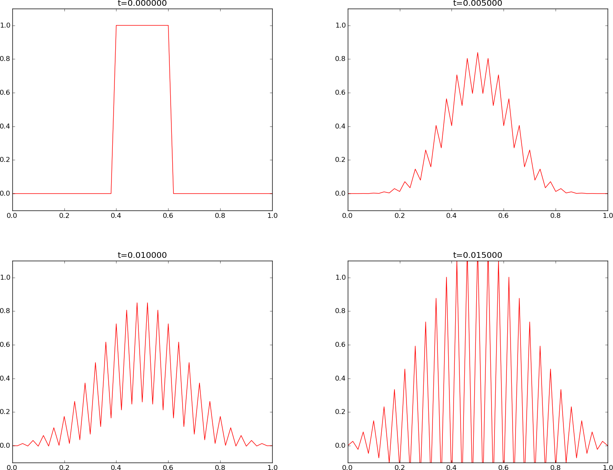
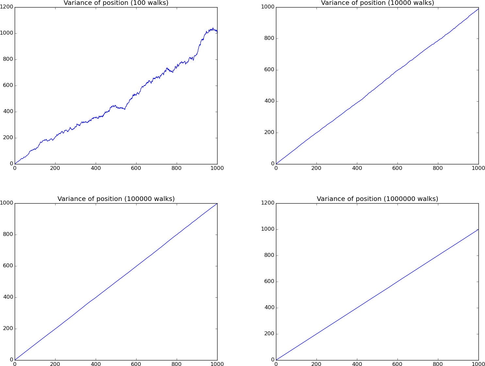
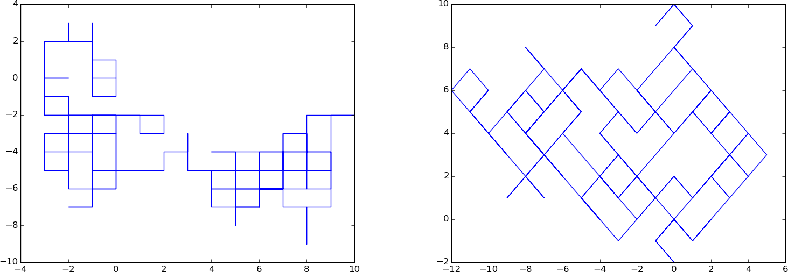
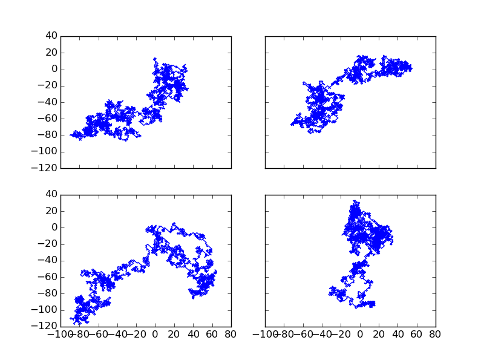

The famous diffusion equation, also known as the heat equation, reads $$ \frac{\partial u}{\partial t} = \dfc \frac{\partial^2 u}{\partial x^2}, $$ where \( u(x,t) \) is the unknown function to be solved for, \( x \) is a coordinate in space, and \( t \) is time. The coefficient \( \dfc \) is the diffusion coefficient and determines how fast \( u \) changes in time. A quick short form for the diffusion equation is \( u_t = \dfc u_{xx} \).
Compared to the wave equation, \( u_{tt}=c^2u_{xx} \), which looks very similar, the diffusion equation features solutions that are very different from those of the wave equation. Also, the diffusion equation makes quite different demands to the numerical methods.
Typical diffusion problems may experience rapid change in the very beginning, but then the evolution of \( u \) becomes slower and slower. The solution is usually very smooth, and after some time, one cannot recognize the initial shape of \( u \). This is in sharp contrast to solutions of the wave equation where the initial shape is preserved in homogeneous media – the solution is then basically a moving initial condition. The standard wave equation \( u_{tt}=c^2u_{xx} \) has solutions that propagate with speed \( c \) forever, without changing shape, while the diffusion equation converges to a stationary solution \( \bar u(x) \) as \( t\rightarrow\infty \). In this limit, \( u_t=0 \), and \( \bar u \) is governed by \( \bar u''(x)=0 \). This stationary limit of the diffusion equation is called the Laplace equation and arises in a very wide range of applications throughout the sciences.
It is possible to solve for \( u(x,t) \) using an explicit scheme, as we do in the section An explicit method for the 1D diffusion equation, but the time step restrictions soon become much less favorable than for an explicit scheme applied to the wave equation. And of more importance, since the solution \( u \) of the diffusion equation is very smooth and changes slowly, small time steps are not convenient and not required by accuracy as the diffusion process converges to a stationary state. Therefore, implicit schemes (as described in the section Implicit methods for the 1D diffusion equation) are popular, but these require solutions of systems of algebraic equations. We shall use ready-made software for this purpose, but also program some simple iterative methods. The exposition is, as usual in this book, very basic and focuses on the basic ideas and how to implement. More comprehensive mathematical treatments and classical analysis of the methods are found in lots of textbooks. A favorite of ours in this respect is the one by LeVeque [1]. The books by Strikwerda [2] and by Lapidus and Pinder [3] are also highly recommended as additional material on the topic.
An explicit method for the 1D diffusion equation
Explicit finite difference methods for the wave equation \( u_{tt}=c^2u_{xx} \) can be used, with small modifications, for solving \( u_t = \dfc u_{xx} \) as well.
The initial-boundary value problem for 1D diffusion
To obtain a unique solution of the diffusion equation, or equivalently, to apply numerical methods, we need initial and boundary conditions. The diffusion equation goes with one initial condition \( u(x,0)=I(x) \), where \( I \) is a prescribed function. One boundary condition is required at each point on the boundary, which in 1D means that \( u \) must be known, \( u_x \) must be known, or some combination of them.
We shall start with the simplest boundary condition: \( u=0 \). The complete initial-boundary value diffusion problem in one space dimension can then be specified as $$ \begin{align} \frac{\partial u}{\partial t} &= \dfc \frac{\partial^2 u}{\partial x^2} + f, \quad x\in (0,L),\ t\in (0,T] \tag{1}\\ u(x,0) &= I(x), \quad x\in [0,L] \tag{2}\\ u(0,t) & = 0, \quad t>0, \tag{3}\\ u(L,t) & = 0, \quad t>0\tp \tag{4} \end{align} $$ With only a first-order derivative in time, only one initial condition is needed, while the second-order derivative in space leads to a demand for two boundary conditions. We have added a source term \( f=f(x,t) \), which is convenient when testing implementations.
Diffusion equations like (1) have a wide range of applications throughout physical, biological, and financial sciences. One of the most common applications is propagation of heat, where \( u(x,t) \) represents the temperature of some substance at point \( x \) and time \( t \). Other applications are listed in the section Applications.
Forward Euler scheme
The first step in the discretization procedure is to replace the domain \( [0,L]\times [0,T] \) by a set of mesh points. Here we apply equally spaced mesh points $$ \begin{equation*} x_i=i\Delta x,\quad i=0,\ldots,N_x,\end{equation*} $$ and $$ \begin{equation*} t_n=n\Delta t,\quad n=0,\ldots,N_t \tp \end{equation*} $$ Moreover, \( u^n_i \) denotes the mesh function that approximates \( u(x_i,t_n) \) for \( i=0,\ldots,N_x \) and \( n=0,\ldots,N_t \). Requiring the PDE (1) to be fulfilled at a mesh point \( (x_i,t_n) \) leads to the equation $$ \begin{equation} \frac{\partial}{\partial t} u(x_i, t_n) = \dfc\frac{\partial^2}{\partial x^2} u(x_i, t_n) + f(x_i,t_n), \tag{5} \end{equation} $$ The next step is to replace the derivatives by finite difference approximations. The computationally simplest method arises from using a forward difference in time and a central difference in space: $$ \begin{equation} [D_t^+ u = \dfc D_xD_x u + f]^n_i \tp \tag{6} \end{equation} $$ Written out, $$ \begin{equation} \frac{u^{n+1}_i-u^n_i}{\Delta t} = \dfc \frac{u^{n}_{i+1} - 2u^n_i + u^n_{i-1}}{\Delta x^2} + f_i^n\tp \tag{7} \end{equation} $$ We have turned the PDE into algebraic equations, also often called discrete equations. The key property of the equations is that they are algebraic, which makes them easy to solve. As usual, we anticipate that \( u^n_i \) is already computed such that \( u^{n+1}_i \) is the only unknown in (7). Solving with respect to this unknown is easy: $$ \begin{equation} u^{n+1}_i = u^n_i + F\left( u^{n}_{i+1} - 2u^n_i + u^n_{i-1}\right) + \Delta t f_i^n, \tag{8} \end{equation} $$ where we have introduced the mesh Fourier number: $$ \begin{equation} F = \dfc\frac{\Delta t}{\Delta x^2}\tp \tag{9} \end{equation} $$
The computational algorithm then becomes
- compute \( u^0_i=I(x_i) \) for \( i=0,\ldots,N_x \)
- for \( n=0,1,\ldots,N_t \):
- apply (8) for all the internal spatial points \( i=1,\ldots,N_x-1 \)
- set the boundary values \( u^{n+1}_i=0 \) for \( i=0 \) and \( i=N_x \)
import numpy as np
x = np.linspace(0, L, Nx+1) # mesh points in space
dx = x[1] - x[0]
t = np.linspace(0, T, Nt+1) # mesh points in time
dt = t[1] - t[0]
F = a*dt/dx**2
u = np.zeros(Nx+1) # unknown u at new time level
u_n = np.zeros(Nx+1) # u at the previous time level
# Set initial condition u(x,0) = I(x)
for i in range(0, Nx+1):
u_n[i] = I(x[i])
for n in range(0, Nt):
# Compute u at inner mesh points
for i in range(1, Nx):
u[i] = u_n[i] + F*(u_n[i-1] - 2*u_n[i] + u_n[i+1]) + \
dt*f(x[i], t[n])
# Insert boundary conditions
u[0] = 0; u[Nx] = 0
# Update u_n before next step
u_n[:]= u
Note that we use a for \( \dfc \) in the code, motivated by easy visual
mapping between the variable name and the mathematical symbol in formulas.
We need to state already now that the shown algorithm does not produce meaningful results unless \( F\leq 1/2 \). Why is explained in the section Analysis of schemes for the diffusion equation.
Implementation
The file diffu1D_u0.py
contains a complete function solver_FE_simple
for solving the 1D diffusion equation with \( u=0 \) on the boundary
as specified in the algorithm above:
import numpy as np
def solver_FE_simple(I, a, f, L, dt, F, T):
"""
Simplest expression of the computational algorithm
using the Forward Euler method and explicit Python loops.
For this method F <= 0.5 for stability.
"""
import time; t0 = time.clock() # For measuring the CPU time
Nt = int(round(T/float(dt)))
t = np.linspace(0, Nt*dt, Nt+1) # Mesh points in time
dx = np.sqrt(a*dt/F)
Nx = int(round(L/dx))
x = np.linspace(0, L, Nx+1) # Mesh points in space
# Make sure dx and dt are compatible with x and t
dx = x[1] - x[0]
dt = t[1] - t[0]
u = np.zeros(Nx+1)
u_n = np.zeros(Nx+1)
# Set initial condition u(x,0) = I(x)
for i in range(0, Nx+1):
u_n[i] = I(x[i])
for n in range(0, Nt):
# Compute u at inner mesh points
for i in range(1, Nx):
u[i] = u_n[i] + F*(u_n[i-1] - 2*u_n[i] + u_n[i+1]) + \
dt*f(x[i], t[n])
# Insert boundary conditions
u[0] = 0; u[Nx] = 0
# Switch variables before next step
#u_n[:] = u # safe, but slow
u_n, u = u, u_n
t1 = time.clock()
return u_n, x, t, t1-t0 # u_n holds latest u
A faster alternative is available in the function solver_FE, which
adds the possibility of solving the finite difference scheme by vectorization.
The vectorized version replaces the explicit loop
for i in range(1, Nx):
u[i] = u_n[i] + F*(u_n[i-1] - 2*u_n[i] + u_n[i+1]) \
+ dt*f(x[i], t[n])
by arithmetics on displaced slices of the u array:
u[1:Nx] = u_n[1:Nx] + F*(u_n[0:Nx-1] - 2*u_n[1:Nx] + u_n[2:Nx+1]) \
+ dt*f(x[1:Nx], t[n])
# or
u[1:-1] = u_n[1:-1] + F*(u_n[0:-2] - 2*u_n[1:-1] + u_n[2:]) \
+ dt*f(x[1:-1], t[n])
For example, the vectorized version runs 70 times faster than the scalar version in a case with 100 time steps and a spatial mesh of \( 10^5 \) cells.
The solver_FE function also features a callback function such that the
user can process the solution at each time level. The callback
function looks like user_action(u, x, t, n), where u is the array
containing the solution at time level n, x holds all the
spatial mesh points, while t holds all the temporal mesh points.
The solver_FE function is very similar to solver_FE_simple above:
def solver_FE(I, a, f, L, dt, F, T,
user_action=None, version='scalar'):
"""
Vectorized implementation of solver_FE_simple.
"""
import time; t0 = time.clock() # for measuring the CPU time
Nt = int(round(T/float(dt)))
t = np.linspace(0, Nt*dt, Nt+1) # Mesh points in time
dx = np.sqrt(a*dt/F)
Nx = int(round(L/dx))
x = np.linspace(0, L, Nx+1) # Mesh points in space
# Make sure dx and dt are compatible with x and t
dx = x[1] - x[0]
dt = t[1] - t[0]
u = np.zeros(Nx+1) # solution array
u_n = np.zeros(Nx+1) # solution at t-dt
# Set initial condition
for i in range(0,Nx+1):
u_n[i] = I(x[i])
if user_action is not None:
user_action(u_n, x, t, 0)
for n in range(0, Nt):
# Update all inner points
if version == 'scalar':
for i in range(1, Nx):
u[i] = u_n[i] +\
F*(u_n[i-1] - 2*u_n[i] + u_n[i+1]) +\
dt*f(x[i], t[n])
elif version == 'vectorized':
u[1:Nx] = u_n[1:Nx] + \
F*(u_n[0:Nx-1] - 2*u_n[1:Nx] + u_n[2:Nx+1]) +\
dt*f(x[1:Nx], t[n])
else:
raise ValueError('version=%s' % version)
# Insert boundary conditions
u[0] = 0; u[Nx] = 0
if user_action is not None:
user_action(u, x, t, n+1)
# Switch variables before next step
u_n, u = u, u_n
t1 = time.clock()
return t1-t0
Verification
Exact solution of discrete equations
Before thinking about running the functions in the previous section,
we need to construct a suitable test example for verification. It
appears that a manufactured solution that is linear in time and at
most quadratic in space fulfills the Forward Euler scheme
exactly. With the restriction that \( u=0 \) for \( x=0,L \), we can try the
solution
$$ u(x,t) = 5tx(L-x)\tp$$
Inserted in the PDE, it requires a source term
$$ f(x,t) = 10\dfc t + 5x(L-x)\tp$$
Let us check
that the manufactured u fulfills the scheme:
$$
\begin{align*}
\lbrack D_t^+ u = \dfc D_x D_x u + f\rbrack^n_i &=
\lbrack 5x(L-x)D_t^+ t = 5 t\dfc D_x D_x (xL-x^2) +\\
&\quad\quad 10\dfc t + 5x(L-x)\rbrack^n_i\\
&=
\lbrack 5x(L-x) = 5 t\dfc (-2) + 10\dfc t + 5x(L-x) \rbrack^n_i,
\end{align*}
$$
which is a 0=0 expression.
The computation of the source term, given any \( u \),
is easily automated with sympy:
import sympy as sym
x, t, a, L = sym.symbols('x t a L')
u = x*(L-x)*5*t
def pde(u):
return sym.diff(u, t) - a*sym.diff(u, x, x)
f = sym.simplify(pde(u))
Now we can choose any expression for u and automatically
get the suitable source term f. However, the manufactured solution
u will in general
not be exactly reproduced by the scheme: only constant and linear
functions are differentiated correctly by a forward difference, while only
constant, linear, and quadratic functions are differentiated exactly by
a \( [D_xD_x u]^n_i \) difference.
The numerical code will need to access the u and f above
as Python functions. The exact solution is wanted as a Python
function u_exact(x, t), while the source term is wanted as
f(x, t). The parameters a and L in u and f above
are symbols and must be replaced by float objects in a Python
function. This can be done by redefining a and L as
float objects and performing substitutions of symbols by
numbers in u and f. The appropriate code looks like this:
a = 0.5
L = 1.5
u_exact = sym.lambdify(
[x, t], u.subs('L', L).subs('a', a), modules='numpy')
f = sym.lambdify(
[x, t], f.subs('L', L).subs('a', a), modules='numpy')
I = lambda x: u_exact(x, 0)
Here we also make a function I for the initial condition.
The idea now is that our manufactured solution should be exactly reproduced by the code (to machine precision). For this purpose we make a test function for comparing the exact and numerical solutions at the end of the time interval:
def test_solver_FE():
# Define u_exact, f, I as explained above
dx = L/3 # 3 cells
F = 0.5
dt = F*dx**2
u, x, t, cpu = solver_FE_simple(
I=I, a=a, f=f, L=L, dt=dt, F=F, T=2)
u_e = u_exact(x, t[-1])
diff = abs(u_e - u).max()
tol = 1E-14
assert diff < tol, 'max diff solver_FE_simple: %g' % diff
u, x, t, cpu = solver_FE(
I=I, a=a, f=f, L=L, dt=dt, F=F, T=2,
user_action=None, version='scalar')
u_e = u_exact(x, t[-1])
diff = abs(u_e - u).max()
tol = 1E-14
assert diff < tol, 'max diff solver_FE, scalar: %g' % diff
u, x, t, cpu = solver_FE(
I=I, a=a, f=f, L=L, dt=dt, F=F, T=2,
user_action=None, version='vectorized')
u_e = u_exact(x, t[-1])
diff = abs(u_e - u).max()
tol = 1E-14
assert diff < tol, 'max diff solver_FE, vectorized: %g' % diff
F=0.5 is critical: the tests above
will fail if F has a larger value. This is because the Forward
Euler scheme is unstable for \( F>1/2 \).
The reader may wonder if \( F=1/2 \) is safe or if \( F < 1/2 \) should be required. Experiments show that \( F=1/2 \) works fine for \( u_t=\dfc u_{xx} \), so there is no accumulation of rounding errors in this case and hence no need to introduce any safety factor to keep \( F \) away from the limiting value 0.5.
Checking convergence rates
If our chosen exact solution does not satisfy the discrete equations exactly, we are left with checking the convergence rates, just as we did previously for the wave equation. However, with the Euler scheme here, we have different accuracies in time and space, since we use a second order approximation to the spatial derivative and a first order approximation to the time derivative. Thus, we must expect different convergence rates in time and space. For the numerical error, $$ E = C_t\Delta t^r + C_x\Delta x^p,$$ we should get convergence rates \( r=1 \) and \( p=2 \) (\( C_t \) and \( C_x \) are unknown constants). As previously, in the section ref{wave:pde2:fd:MMS}, we simplify matters by introducing a single discretization parameter \( h \): $$ h = \Delta t,\quad \Delta x = Kh^{r/p},$$ where \( K \) is any constant. This allows us to factor out only one discretization parameter \( h \) from the formula: $$ E = C_t h + C_x (Kh^{r/p})^p = \tilde C h^r,\quad \tilde C = C_t + C_sK^r\tp$$ The computed rate \( r \) should approach 1 with increasing resolution.
It is tempting, for simplicity, to choose \( K=1 \), which gives \( \Delta x = h^{r/p} \), expected to be \( \sqrt{\Delta t} \). However, we have to control the stability requirement: \( F\leq\half \), which means $$ \frac{\dfc\Delta t}{\Delta x^2}\leq\half\quad\Rightarrow \quad \Delta x \geq \sqrt{2\dfc}h^{1/2} ,$$ implying that \( K=\sqrt{2\dfc} \) is our choice in experiments where we lie on the stability limit \( F=1/2 \).
Numerical experiments
When a test function like the one above runs silently without errors, we have some evidence for a correct implementation of the numerical method. The next step is to do some experiments with more interesting solutions.
We target a scaled diffusion problem where \( x/L \) is a new spatial
coordinate and \( \dfc t/L^2 \) is a new time coordinate. The source term
\( f \) is omitted, and \( u \) is scaled by \( \max_{x\in [0,L]}|I(x)| \) (see Section 3.2 in
[4] for details).
The governing PDE is then
$$ \frac{\partial u}{\partial t} = \frac{\partial^2 u}{\partial x^2},$$
in the spatial domain \( [0,L] \), with boundary conditions \( u(0)=u(1)=0 \).
Two initial conditions will be tested: a discontinuous plug,
$$ I(x) = \left\lbrace\begin{array}{ll}
0, & |x-L/2| > 0.1\\
1, & \hbox{otherwise}
\end{array}\right.$$
and a smooth Gaussian function,
$$ I(x) = e^{-\frac{1}{2\sigma^2}(x-L/2)^2}\tp$$
The functions plug and gaussian in diffu1D_u0.py run the two cases,
respectively:
def plug(scheme='FE', F=0.5, Nx=50):
L = 1.
a = 1.
T = 0.1
# Compute dt from Nx and F
dx = L/Nx; dt = F/a*dx**2
def I(x):
"""Plug profile as initial condition."""
if abs(x-L/2.0) > 0.1:
return 0
else:
return 1
cpu = viz(I, a, L, dt, F, T,
umin=-0.1, umax=1.1,
scheme=scheme, animate=True, framefiles=True)
print 'CPU time:', cpu
def gaussian(scheme='FE', F=0.5, Nx=50, sigma=0.05):
L = 1.
a = 1.
T = 0.1
# Compute dt from Nx and F
dx = L/Nx; dt = F/a*dx**2
def I(x):
"""Gaussian profile as initial condition."""
return exp(-0.5*((x-L/2.0)**2)/sigma**2)
u, cpu = viz(I, a, L, dt, F, T,
umin=-0.1, umax=1.1,
scheme=scheme, animate=True, framefiles=True)
print 'CPU time:', cpu
These functions make use of the function viz for running the
solver and visualizing the solution using a callback function
with plotting:
def viz(I, a, L, dt, F, T, umin, umax,
scheme='FE', animate=True, framefiles=True):
def plot_u(u, x, t, n):
plt.plot(x, u, 'r-', axis=[0, L, umin, umax],
title='t=%f' % t[n])
if framefiles:
plt.savefig('tmp_frame%04d.png' % n)
if t[n] == 0:
time.sleep(2)
elif not framefiles:
# It takes time to write files so pause is needed
# for screen only animation
time.sleep(0.2)
user_action = plot_u if animate else lambda u,x,t,n: None
cpu = eval('solver_'+scheme)(I, a, L, dt, F, T,
user_action=user_action)
return cpu
Notice that this viz function stores all the solutions in a
list solutions in the callback function. Modern computers have
hardly any problem with storing a lot of such solutions for moderate
values of \( N_x \) in 1D problems, but for 2D and 3D problems, this
technique cannot be used and solutions must be stored in files.
Our experiments employ a time step \( \Delta t = 0.0002 \) and simulate for \( t\in [0,0.1] \). First we try the highest value of \( F \): \( F=0.5 \). This resolution corresponds to \( N_x=50 \). A possible terminal command is
Terminal> python -c 'from diffu1D_u0 import gaussian
gaussian("solver_FE", F=0.5, dt=0.0002)'
The \( u(x,t) \) curve as a function of \( x \) is shown in Figure 1 at four time levels.
We see that the curves have saw-tooth waves in the beginning of the simulation. This non-physical noise is smoothed out with time, but solutions of the diffusion equations are known to be smooth, and this numerical solution is definitely not smooth. Lowering \( F \) helps: \( F\leq 0.25 \) gives a smooth solution, see Figure 2.
Increasing \( F \) slightly beyond the limit 0.5, to \( F=0.51 \), gives growing, non-physical instabilities, as seen in Figure 3.
Figure 1: Forward Euler scheme for \( F=0.5 \).

Figure 2: Forward Euler scheme for \( F=0.25 \).

Figure 3: Forward Euler scheme for \( F=0.51 \).

Instead of a discontinuous initial condition we now try the smooth Gaussian function for \( I(x) \). A simulation for \( F=0.5 \) is shown in Figure 4. Now the numerical solution is smooth for all times, and this is true for any \( F\leq 0.5 \).
Figure 4: Forward Euler scheme for \( F=0.5 \).

Experiments with these two choices of \( I(x) \) reveal some important observations:
- The Forward Euler scheme leads to growing solutions if \( F>\half \).
- \( I(x) \) as a discontinuous plug leads to a saw tooth-like noise for \( F=\half \), which is absent for \( F\leq\frac{1}{4} \).
- The smooth Gaussian initial function leads to a smooth solution for all relevant \( F \) values (\( F\leq \half \)).
Implicit methods for the 1D diffusion equation
Simulations with the Forward Euler scheme show that the time step restriction, \( F\leq\half \), which means \( \Delta t \leq \Delta x^2/(2\dfc) \), may be relevant in the beginning of the diffusion process, when the solution changes quite fast, but as time increases, the process slows down, and a small \( \Delta t \) may be inconvenient. With implicit schemes, which lead to coupled systems of linear equations to be solved at each time level, any size of \( \Delta t \) is possible (but the accuracy decreases with increasing \( \Delta t \)). The Backward Euler scheme, derived and implemented below, is the simplest implicit scheme for the diffusion equation.
Backward Euler scheme
In (5), we now apply a backward difference in time, but the same central difference in space: $$ \begin{equation} [D_t^- u = D_xD_x u + f]^n_i, \tag{10} \end{equation} $$ which written out reads $$ \begin{equation} \frac{u^{n}_i-u^{n-1}_i}{\Delta t} = \dfc\frac{u^{n}_{i+1} - 2u^n_i + u^n_{i-1}}{\Delta x^2} + f_i^n\tp \tag{11} \end{equation} $$ Now we assume \( u^{n-1}_i \) is already computed, but that all quantities at the "new" time level \( n \) are unknown. This time it is not possible to solve with respect to \( u_i^{n} \) because this value couples to its neighbors in space, \( u^n_{i-1} \) and \( u^n_{i+1} \), which are also unknown. Let us examine this fact for the case when \( N_x=3 \). Equation (11) written for \( i=1,\ldots,Nx-1= 1,2 \) becomes $$ \begin{align} \frac{u^{n}_1-u^{n-1}_1}{\Delta t} &= \dfc\frac{u^{n}_{2} - 2u^n_1 + u^n_{0}}{\Delta x^2} + f_1^n \tag{12}\\ \frac{u^{n}_2-u^{n-1}_2}{\Delta t} &= \dfc\frac{u^{n}_{3} - 2u^n_2 + u^n_{1}}{\Delta x^2} + f_2^n \tag{13} \end{align} $$ The boundary values \( u^n_0 \) and \( u^n_3 \) are known as zero. Collecting the unknown new values \( u^n_1 \) and \( u^n_2 \) on the left-hand side and multiplying by \( \Delta t \) gives $$ \begin{align} \left(1+ 2F\right) u^{n}_1 - F u^{n}_{2} &= u^{n-1}_1 + \Delta t f_1^n, \tag{14}\\ - F u^{n}_{1} + \left(1+ 2F\right) u^{n}_2 &= u^{n-1}_2 + \Delta t f_2^n\tp \tag{15} \end{align} $$ This is a coupled \( 2\times 2 \) system of algebraic equations for the unknowns \( u^n_1 \) and \( u^n_2 \). The equivalent matrix form is $$ \left(\begin{array}{cc} 1+ 2F & - F\\ - F & 1+ 2F \end{array}\right) \left(\begin{array}{c} u^{n}_1\\ u^{n}_2 \end{array}\right) = \left(\begin{array}{c} u^{n-1}_1 + \Delta t f_1^n\\ u^{n-1}_2 + \Delta t f_2^n \end{array}\right) $$
Very often explicit schemes have a restriction on the size of the time step that can be relaxed by using implicit schemes. In fact, implicit schemes are frequently unconditionally stable, so the size of the time step is governed by accuracy and not by stability. This is the great advantage of implicit schemes.
In the general case, (11) gives rise to a coupled \( (N_x-1)\times (N_x-1) \) system of algebraic equations for all the unknown \( u^n_i \) at the interior spatial points \( i=1,\ldots,N_x-1 \). Collecting the unknowns on the left-hand side, (11) can be written $$ \begin{equation} - F u^n_{i-1} + \left(1+ 2F \right) u^{n}_i - F u^n_{i+1} = u_{i-1}^{n-1}, \tag{16} \end{equation} $$ for \( i=1,\ldots,N_x-1 \). One can either view these equations as a system where the \( u^{n}_i \) values at the internal mesh points, \( i=1,\ldots,N_x-1 \), are unknown, or we may append the boundary values \( u^n_0 \) and \( u^n_{N_x} \) to the system. In the latter case, all \( u^n_i \) for \( i=0,\ldots,N_x \) are considered unknown, and we must add the boundary equations to the \( N_x-1 \) equations in (16): $$ \begin{align} u_0^n &= 0,label{diffu:pde1:step4BE:BC:0}\\ u_{N_x}^n &= 0\tp \tag{18} \end{align} $$
A coupled system of algebraic equations can be written on matrix form, and this is important if we want to call up ready-made software for solving the system. The equations (16) and (17)--(18) correspond to the matrix equation $$ \begin{equation*} AU = b\end{equation*} $$ where \( U=(u^n_0,\ldots,u^n_{N_x}) \), and the matrix \( A \) has the following structure: $$ \begin{equation} A = \left( \begin{array}{cccccccccc} A_{0,0} & A_{0,1} & 0 &\cdots & \cdots & \cdots & \cdots & \cdots & 0 \\ A_{1,0} & A_{1,1} & A_{1,2} & \ddots & & & & & \vdots \\ 0 & A_{2,1} & A_{2,2} & A_{2,3} & \ddots & & & & \vdots \\ \vdots & \ddots & & \ddots & \ddots & 0 & & & \vdots \\ \vdots & & \ddots & \ddots & \ddots & \ddots & \ddots & & \vdots \\ \vdots & & & 0 & A_{i,i-1} & A_{i,i} & A_{i,i+1} & \ddots & \vdots \\ \vdots & & & & \ddots & \ddots & \ddots &\ddots & 0 \\ \vdots & & & & &\ddots & \ddots &\ddots & A_{N_x-1,N_x} \\ 0 &\cdots & \cdots &\cdots & \cdots & \cdots & 0 & A_{N_x,N_x-1} & A_{N_x,N_x} \end{array} \right) \tag{19} \end{equation} $$ The nonzero elements are given by $$ \begin{align} A_{i,i-1} &= -F \tag{20}\\ A_{i,i} &= 1+ 2F \tag{21}\\ A_{i,i+1} &= -F \tag{22} \end{align} $$ in the equations for internal points, \( i=1,\ldots,N_x-1 \). The first and last equation correspond to the boundary condition, where we know the solution, and therefore we must have $$ \begin{align} A_{0,0} &= 1, \tag{23}\\ A_{0,1} &= 0, \tag{24}\\ A_{N_x,N_x-1} &= 0, \tag{25}\\ A_{N_x,N_x} &= 1\tp \tag{26} \end{align} $$ The right-hand side \( b \) is written as $$ \begin{equation} b = \left(\begin{array}{c} b_0\\ b_1\\ \vdots\\ b_i\\ \vdots\\ b_{N_x} \end{array}\right) \tag{27} \end{equation} $$ with $$ \begin{align} b_0 &= 0, \tag{28}\\ b_i &= u^{n-1}_i,\quad i=1,\ldots,N_x-1, \tag{29}\\ b_{N_x} &= 0 \tp \tag{30} \end{align} $$
We observe that the matrix \( A \) contains quantities that do not change in time. Therefore, \( A \) can be formed once and for all before we enter the recursive formulas for the time evolution. The right-hand side \( b \), however, must be updated at each time step. This leads to the following computational algorithm, here sketched with Python code:
x = np.linspace(0, L, Nx+1) # mesh points in space
dx = x[1] - x[0]
t = np.linspace(0, T, N+1) # mesh points in time
u = np.zeros(Nx+1) # unknown u at new time level
u_n = np.zeros(Nx+1) # u at the previous time level
# Data structures for the linear system
A = np.zeros((Nx+1, Nx+1))
b = np.zeros(Nx+1)
for i in range(1, Nx):
A[i,i-1] = -F
A[i,i+1] = -F
A[i,i] = 1 + 2*F
A[0,0] = A[Nx,Nx] = 1
# Set initial condition u(x,0) = I(x)
for i in range(0, Nx+1):
u_n[i] = I(x[i])
import scipy.linalg
for n in range(0, Nt):
# Compute b and solve linear system
for i in range(1, Nx):
b[i] = -u_n[i]
b[0] = b[Nx] = 0
u[:] = scipy.linalg.solve(A, b)
# Update u_n before next step
u_n[:] = u
Regarding verification, the same considerations apply as for the Forward Euler method (the section Verification).
Sparse matrix implementation
We have seen from (19) that the matrix \( A \) is tridiagonal. The code segment above used a full, dense matrix representation of \( A \), which stores a lot of values we know are zero beforehand, and worse, the solution algorithm computes with all these zeros. With \( N_x+1 \) unknowns, the work by the solution algorithm is \( \frac{1}{3} (N_x+1)^3 \) and the storage requirements \( (N_x+1)^2 \). By utilizing the fact that \( A \) is tridiagonal and employing corresponding software tools that work with the three diagonals, the work and storage demands can be proportional to \( N_x \) only. This leads to a dramatic improvement: with \( N_x=200 \), which is a realistic resolution, the code runs about 40,000 times faster and reduces the storage to just 1.5%! It is no doubt that we should take advantage of the fact that \( A \) is tridiagonal.
The key idea is to apply a data structure for a tridiagonal or sparse
matrix. The scipy.sparse package has relevant utilities. For
example, we can store only the nonzero diagonals of a matrix. The
package also has linear system solvers that operate on sparse matrix
data structures. The code below illustrates how we can store only the
main diagonal and the upper and lower diagonals.
# Representation of sparse matrix and right-hand side
main = np.zeros(Nx+1)
lower = np.zeros(Nx)
upper = np.zeros(Nx)
b = np.zeros(Nx+1)
# Precompute sparse matrix
main[:] = 1 + 2*F
lower[:] = -F
upper[:] = -F
# Insert boundary conditions
main[0] = 1
main[Nx] = 1
A = scipy.sparse.diags(
diagonals=[main, lower, upper],
offsets=[0, -1, 1], shape=(Nx+1, Nx+1),
format='csr')
print A.todense() # Check that A is correct
# Set initial condition
for i in range(0,Nx+1):
u_n[i] = I(x[i])
for n in range(0, Nt):
b = u_n
b[0] = b[-1] = 0.0 # boundary conditions
u[:] = scipy.sparse.linalg.spsolve(A, b)
u_n[:] = u
The scipy.sparse.linalg.spsolve function utilizes the sparse storage
structure of A and performs, in this case, a very efficient Gaussian
elimination solve.
The program diffu1D_u0.py
contains a function solver_BE, which implements the Backward Euler scheme
sketched above.
As mentioned in the section Forward Euler scheme,
the functions plug and gaussian
run the case with \( I(x) \) as a discontinuous plug or a smooth
Gaussian function. All experiments point to two characteristic
features of the Backward Euler scheme: 1) it is always stable, and
2) it always gives a smooth, decaying solution.
Crank-Nicolson scheme
The idea in the Crank-Nicolson scheme is to apply centered differences in space and time, combined with an average in time. We demand the PDE to be fulfilled at the spatial mesh points, but midway between the points in the time mesh: $$ \frac{\partial}{\partial t} u(x_i, t_{n+\half}) = \dfc\frac{\partial^2}{\partial x^2}u(x_i, t_{n+\half}) + f(x_i,t_{n+\half}), $$ for \( i=1,\ldots,N_x-1 \) and \( n=0,\ldots, N_t-1 \).
With centered differences in space and time, we get $$ [D_t u = \dfc D_xD_x u + f]^{n+\half}_i\tp$$ On the right-hand side we get an expression $$ \frac{1}{\Delta x^2}\left(u^{n+\half}_{i-1} - 2u^{n+\half}_i + u^{n+\half}_{i+1}\right) + f_i^{n+\half}\tp$$ This expression is problematic since \( u^{n+\half}_i \) is not one of the unknowns we compute. A possibility is to replace \( u^{n+\half}_i \) by an arithmetic average: $$ u^{n+\half}_i\approx \half\left(u^{n}_i +u^{n+1}_{i}\right)\tp $$ In the compact notation, we can use the arithmetic average notation \( \overline{u}^t \): $$ [D_t u = \dfc D_xD_x \overline{u}^t + f]^{n+\half}_i\tp$$ We can also use an average for \( f_i^{n+\half} \): $$ [D_t u = \dfc D_xD_x \overline{u}^t + \overline{f}^t]^{n+\half}_i\tp$$
After writing out the differences and average, multiplying by \( \Delta t \), and collecting all unknown terms on the left-hand side, we get $$ \begin{align} u^{n+1}_i - \half F(u^{n+1}_{i-1} - 2u^{n+1}_i + u^{n+1}_{i+1}) &= u^{n}_i + \half F(u^{n}_{i-1} - 2u^{n}_i + u^{n}_{i+1})\nonumber\\ &\qquad \half f_i^{n+1} + \half f_i^n\tp \tag{31} \end{align} $$
Also here, as in the Backward Euler scheme, the new unknowns \( u^{n+1}_{i-1} \), \( u^{n+1}_{i} \), and \( u^{n+1}_{i+1} \) are coupled in a linear system \( AU=b \), where \( A \) has the same structure as in (19), but with slightly different entries: $$ \begin{align} A_{i,i-1} &= -\half F \tag{32}\\ A_{i,i} &= 1 + F \tag{33}\\ A_{i,i+1} &= -\half F \tag{34} \end{align} $$ in the equations for internal points, \( i=1,\ldots,N_x-1 \). The equations for the boundary points correspond to $$ \begin{align} A_{0,0} &= 1, \tag{35}\\ A_{0,1} &= 0, \tag{36}\\ A_{N_x,N_x-1} &= 0, \tag{37}\\ A_{N_x,N_x} &= 1\tp \tag{38} \end{align} $$ The right-hand side \( b \) has entries $$ \begin{align} b_0 &= 0, \tag{39}\\ b_i &= u^{n-1}_i + \half(f_i^n + f_i^{n+1}),\quad i=1,\ldots,N_x-1, \tag{40}\\ b_{N_x} &= 0 \tp \tag{41} \end{align} $$
When verifying some implementation of the Crank-Nicolson scheme by convergence rate testing, one should note that the scheme is second order accurate in both space and time. The numerical error then reads $$ E = C_t\Delta t^r + C_x\Delta x^r,$$ where \( r=2 \) (\( C_t \) and \( C_x \) are unknown constants, as before). When introducing a single discretization parameter, we may now simply choose $$ h = \Delta x = \Delta t,$$ which gives $$ E = C_th^r + C_xh^r = (C_t + C_x)h^r,$$ where \( r \) should approach 2 as resolution is increased in the convergence rate computations.
The unifying \( \theta \) rule
For the equation $$ \frac{\partial u}{\partial t} = G(u),$$ where \( G(u) \) is some spatial differential operator, the \( \theta \)-rule looks like $$ \frac{u^{n+1}_i - u^n_i}{\Delta t} = \theta G(u^{n+1}_i) + (1-\theta) G(u^{n}_i)\tp$$ The important feature of this time discretization scheme is that we can implement one formula and then generate a family of well-known and widely used schemes:
- \( \theta=0 \) gives the Forward Euler scheme in time
- \( \theta=1 \) gives the Backward Euler scheme in time
- \( \theta=\half \) gives the Crank-Nicolson scheme in time
Applied to the 1D diffusion problem, the \( \theta \)-rule gives $$ \begin{align*} \frac{u^{n+1}_i-u^n_i}{\Delta t} &= \dfc\left( \theta \frac{u^{n+1}_{i+1} - 2u^{n+1}_i + u^{n+1}_{i-1}}{\Delta x^2} + (1-\theta) \frac{u^{n}_{i+1} - 2u^n_i + u^n_{i-1}}{\Delta x^2}\right)\\ &\qquad + \theta f_i^{n+1} + (1-\theta)f_i^n \tp \end{align*} $$ This scheme also leads to a matrix system with entries $$ A_{i,i-1} = -F\theta,\quad A_{i,i} = 1+2F\theta\quad, A_{i,i+1} = -F\theta,$$ while right-hand side entry \( b_i \) is $$ b_i = u^n_{i} + F(1-\theta) \frac{u^{n}_{i+1} - 2u^n_i + u^n_{i-1}}{\Delta x^2} + \Delta t\theta f_i^{n+1} + \Delta t(1-\theta)f_i^n\tp $$ The corresponding entries for the boundary points are as in the Backward Euler and Crank-Nicolson schemes listed earlier.
Note that convergence rate testing with implementations of the theta rule must adjust the error expression according to which of the underlying schemes is actually being run. That is, if \( \theta=0 \) (i.e., Forward Euler) or \( \theta=1 \) (i.e., Backward Euler), there should be first order convergence, whereas with \( \theta=0.5 \) (i.e., Crank-Nicolson), one should get second order convergence (as outlined in previous sections).
Experiments
We can repeat the experiments from the section Numerical experiments to see if the Backward Euler or Crank-Nicolson schemes have problems with sawtooth-like noise when starting with a discontinuous initial condition. We can also verify that we can have \( F>\half \), which allows larger time steps than in the Forward Euler method.
Figure 5: Backward Euler scheme for \( F=0.5 \).

The Backward Euler scheme always produces smooth solutions for any \( F \). Figure 5 shows one example. Note that the mathematical discontinuity at \( t=0 \) leads to a linear variation on a mesh, but the approximation to a jump becomes better as \( N_x \) increases. In our simulation, we specify \( \Delta t \) and \( F \), and set \( N_x \) to \( L/\sqrt{\dfc\Delta t/F} \). Since \( N_x\sim\sqrt{F} \), the discontinuity looks sharper in the Crank-Nicolson simulations with larger \( F \).
The Crank-Nicolson method produces smooth solutions for small \( F \), \( F\leq\half \), but small noise gets more and more evident as \( F \) increases. Figures 6 and 7 demonstrate the effect for \( F=3 \) and \( F=10 \), respectively. The section Analysis of schemes for the diffusion equation explains why such noise occur.
Figure 6: Crank-Nicolson scheme for \( F=3 \).

Figure 7: Crank-Nicolson scheme for \( F=10 \).

The Laplace and Poisson equation
The Laplace equation, \( \nabla^2 u = 0 \), and the Poisson equation, \( -\nabla^2 u = f \), occur in numerous applications throughout science and engineering. In 1D these equations read \( u''(x)=0 \) and \( -u''(x)=f(x) \), respectively. We can solve 1D variants of the Laplace equations with the listed software, because we can interpret \( u_{xx}=0 \) as the limiting solution of \( u_t = \dfc u_{xx} \) when \( u \) reaches a steady state limit where \( u_t\rightarrow 0 \). Similarly, Poisson's equation \( -u_{xx}=f \) arises from solving \( u_t = u_{xx} + f \) and letting \( t\rightarrow\infty \) so \( u_t\rightarrow 0 \).
Technically in a program, we can simulate \( t\rightarrow\infty \) by just taking one large time step: \( \Delta t\rightarrow\infty \). In the limit, the Backward Euler scheme gives $$ -\frac{u^{n+1}_{i+1} - 2u^{n+1}_i + u^{n+1}_{i-1}}{\Delta x^2} = f^{n+1}_i,$$ which is nothing but the discretization \( [-D_xD_x u = f]^{n+1}_i=0 \) of \( -u_{xx}=f \).
The result above means that the Backward Euler scheme can solve the limit equation directly and hence produce a solution of the 1D Laplace equation. With the Forward Euler scheme we must do the time stepping since \( \Delta t > \Delta x^2/\dfc \) is illegal and leads to instability. We may interpret this time stepping as solving the equation system from \( -u_{xx}=f \) by iterating on a pseudo time variable.
Analysis of schemes for the diffusion equation
The numerical experiments in the sections Numerical experiments and Experiments reveal that there are some numerical problems with the Forward Euler and Crank-Nicolson schemes: sawtooth-like noise is sometimes present in solutions that are, from a mathematical point of view, expected to be smooth. This section presents a mathematical analysis that explains the observed behavior and arrives at criteria for obtaining numerical solutions that reproduce the qualitative properties of the exact solutions. In short, we shall explain what is observed in Figures 1-7.
Properties of the solution
A particular characteristic of diffusive processes, governed by an equation like $$ \begin{equation} u_t = \dfc u_{xx}, \tag{42} \end{equation} $$ is that the initial shape \( u(x,0)=I(x) \) spreads out in space with time, along with a decaying amplitude. Three different examples will illustrate the spreading of \( u \) in space and the decay in time.
Similarity solution
The diffusion equation (42) admits solutions that depend on \( \eta = (x-c)/\sqrt{4\dfc t} \) for a given value of \( c \). One particular solution is $$ \begin{equation} u(x,t) = a\,\mbox{erf}(\eta) + b, \tag{43} \end{equation} $$ where $$ \begin{equation} \mbox{erf}(\eta) = \frac{2}{\sqrt{\pi}}\int_0^\eta e^{-\zeta^2}d\zeta, \tag{44} \end{equation} $$ is the error function, and \( a \) and \( b \) are arbitrary constants. The error function lies in \( (-1,1) \), is odd around \( \eta =0 \), and goes relatively quickly to \( \pm 1 \): $$ \begin{align*} \lim_{\eta\rightarrow -\infty}\mbox{erf}(\eta) &=-1,\\ \lim_{\eta\rightarrow \infty}\mbox{erf}(\eta) &=1,\\ \mbox{erf}(\eta) &= -\mbox{erf}(-\eta),\\ \mbox{erf}(0) &=0,\\ \mbox{erf}(2) &=0.99532227,\\ \mbox{erf}(3) &=0.99997791 \tp \end{align*} $$
As \( t\rightarrow 0 \), the error function approaches a step function centered at \( x=c \). For a diffusion problem posed on the unit interval \( [0,1] \), we may choose the step at \( x=1/2 \) (meaning \( c=1/2 \)), \( a=-1/2 \), \( b=1/2 \). Then $$ \begin{equation} u(x,t) = \half\left(1 - \mbox{erf}\left(\frac{x-\half}{\sqrt{4\dfc t}}\right)\right) = \half\mbox{erfc}\left(\frac{x-\half}{\sqrt{4\dfc t}}\right), \tag{45} \end{equation} $$ where we have introduced the complementary error function \( \mbox{erfc}(\eta) = 1-\mbox{erf}(\eta) \). The solution (45) implies the boundary conditions $$ \begin{align} u(0,t) &= \half\left(1 - \mbox{erf}\left(\frac{-1/2}{\sqrt{4\dfc t}}\right)\right), \tag{46} \\ u(1,t) &= \half\left(1 - \mbox{erf}\left(\frac{1/2}{\sqrt{4\dfc t}}\right)\right) \tag{47} \tp \end{align} $$ For small enough \( t \), \( u(0,t)\approx 1 \) and \( u(1,t)\approx 0 \), but as \( t\rightarrow\infty \), \( u(x,t)\rightarrow 1/2 \) on \( [0,1] \).
Solution for a Gaussian pulse
The standard diffusion equation \( u_t = \dfc u_{xx} \) admits a Gaussian function as solution: $$ \begin{equation} u(x,t) = \frac{1}{\sqrt{4\pi\dfc t}} \exp{\left({-\frac{(x-c)^2}{4\dfc t}}\right)} \tag{48} \tp \end{equation} $$ At \( t=0 \) this is a Dirac delta function, so for computational purposes one must start to view the solution at some time \( t=t_\epsilon>0 \). Replacing \( t \) by \( t_\epsilon +t \) in (48) makes it easy to operate with a (new) \( t \) that starts at \( t=0 \) with an initial condition with a finite width. The important feature of (48) is that the standard deviation \( \sigma \) of a sharp initial Gaussian pulse increases in time according to \( \sigma = \sqrt{2\dfc t} \), making the pulse diffuse and flatten out.
Solution for a sine component
Also, (42) admits a solution of the form $$ \begin{equation} u(x,t) = Qe^{-at}\sin\left( kx\right) \tag{49} \tp \end{equation} $$ The parameters \( Q \) and \( k \) can be freely chosen, while inserting (49) in (42) gives the constraint $$ \begin{equation*} a = -\dfc k^2 \tp \end{equation*} $$
A very important feature is that the initial shape \( I(x)=Q\sin\left( kx\right) \) undergoes a damping \( \exp{(-\dfc k^2t)} \), meaning that rapid oscillations in space, corresponding to large \( k \), are very much faster dampened than slow oscillations in space, corresponding to small \( k \). This feature leads to a smoothing of the initial condition with time. (In fact, one can use a few steps of the diffusion equation as a method for removing noise in signal processing.) To judge how good a numerical method is, we may look at its ability to smoothen or dampen the solution in the same way as the PDE does.
The following example illustrates the damping properties of (49). We consider the specific problem $$ \begin{align*} u_t &= u_{xx},\quad x\in (0,1),\ t\in (0,T],\\ u(0,t) &= u(1,t) = 0,\quad t\in (0,T],\\ u(x,0) & = \sin (\pi x) + 0.1\sin(100\pi x) \tp \end{align*} $$ The initial condition has been chosen such that adding two solutions like (49) constructs an analytical solution to the problem: $$ \begin{equation} u(x,t) = e^{-\pi^2 t}\sin (\pi x) + 0.1e^{-\pi^2 10^4 t}\sin (100\pi x) \tag{50} \tp \end{equation} $$ Figure 8 illustrates the rapid damping of rapid oscillations \( \sin (100\pi x) \) and the very much slower damping of the slowly varying \( \sin (\pi x) \) term. After about \( t=0.5\cdot10^{-4} \) the rapid oscillations do not have a visible amplitude, while we have to wait until \( t\sim 0.5 \) before the amplitude of the long wave \( \sin (\pi x) \) becomes very small.
Figure 8: Evolution of the solution of a diffusion problem: initial condition (upper left), 1/100 reduction of the small waves (upper right), 1/10 reduction of the long wave (lower left), and 1/100 reduction of the long wave (lower right).

Analysis of discrete equations
A counterpart to (49) is the complex representation of the same function: $$ u(x,t) = Qe^{-at}e^{ikx},$$ where \( i=\sqrt{-1} \) is the imaginary unit. We can add such functions, often referred to as wave components, to make a Fourier representation of a general solution of the diffusion equation: $$ \begin{equation} u(x,t) \approx \sum_{k\in K} b_k e^{-\dfc k^2t}e^{ikx}, \tag{51} \end{equation} $$ where \( K \) is a set of an infinite number of \( k \) values needed to construct the solution. In practice, however, the series is truncated and \( K \) is a finite set of \( k \) values needed to build a good approximate solution. Note that (50) is a special case of (51) where \( K=\{\pi, 100\pi\} \), \( b_{\pi}=1 \), and \( b_{100\pi}=0.1 \).
The amplitudes \( b_k \) of the individual Fourier waves must be determined from the initial condition. At \( t=0 \) we have \( u\approx\sum_kb_k\exp{(ikx)} \) and find \( K \) and \( b_k \) such that $$ \begin{equation} I(x) \approx \sum_{k\in K} b_k e^{ikx}\tp \tag{52} \end{equation} $$ (The relevant formulas for \( b_k \) come from Fourier analysis, or equivalently, a least-squares method for approximating \( I(x) \) in a function space with basis \( \exp{(ikx)} \).)
Much insight about the behavior of numerical methods can be obtained by investigating how a wave component \( \exp{(-\dfc k^2 t)}\exp{(ikx)} \) is treated by the numerical scheme. It appears that such wave components are also solutions of the schemes, but the damping factor \( \exp{(-\dfc k^2 t)} \) varies among the schemes. To ease the forthcoming algebra, we write the damping factor as \( A^n \). The exact amplification factor corresponding to \( A \) is \( \Aex = \exp{(-\dfc k^2\Delta t)} \).
Analysis of the finite difference schemes
We have seen that a general solution of the diffusion equation can be built as a linear combination of basic components $$ \begin{equation*} e^{-\dfc k^2t}e^{ikx} \tp \end{equation*} $$ A fundamental question is whether such components are also solutions of the finite difference schemes. This is indeed the case, but the amplitude \( \exp{(-\dfc k^2t)} \) might be modified (which also happens when solving the ODE counterpart \( u'=-\dfc u \)). We therefore look for numerical solutions of the form $$ \begin{equation} u^n_q = A^n e^{ikq\Delta x} = A^ne^{ikx}, \tag{53} \end{equation} $$ where the amplification factor \( A \) must be determined by inserting the component into an actual scheme. Note that \( A^n \) means \( A \) raised to the power of \( n \), \( n \) being the index in the time mesh, while the superscript \( n \) in \( u^n_q \) just denotes \( u \) at time \( t_n \).
Stability
The exact amplification factor is \( \Aex=\exp{(-\dfc^2 k^2\Delta t)} \). We should therefore require \( |A| < 1 \) to have a decaying numerical solution as well. If \( -1\leq A < 0 \), \( A^n \) will change sign from time level to time level, and we get stable, non-physical oscillations in the numerical solutions that are not present in the exact solution.
Accuracy
To determine how accurately a finite difference scheme treats one wave component (53), we see that the basic deviation from the exact solution is reflected in how well \( A^n \) approximates \( \Aex^n \), or how well \( A \) approximates \( \Aex \). We can plot \( \Aex \) and the various expressions for \( A \), and we can make Taylor expansions of \( A/\Aex \) to see the error more analytically.
Truncation error
As an alternative to examining the accuracy of the damping of a wave component, we can perform a general truncation error analysis as explained in "Truncation error analysis": "" [5]. Such results are more general, but less detailed than what we get from the wave component analysis. The truncation error can almost always be computed and represents the error in the numerical model when the exact solution is substituted into the equations. In particular, the truncation error analysis tells the order of the scheme, which is of fundamental importance when verifying codes based on empirical estimation of convergence rates.
Analysis of the Forward Euler scheme
The Forward Euler finite difference scheme for \( u_t = \dfc u_{xx} \) can be written as $$ \begin{equation*} [D_t^+ u = \dfc D_xD_x u]^n_q\tp \end{equation*} $$ Inserting a wave component (53) in the scheme demands calculating the terms $$ e^{ikq\Delta x}[D_t^+ A]^n = e^{ikq\Delta x}A^n\frac{A-1}{\Delta t},$$ and $$ A^nD_xD_x [e^{ikx}]_q = A^n\left( - e^{ikq\Delta x}\frac{4}{\Delta x^2} \sin^2\left(\frac{k\Delta x}{2}\right)\right) \tp $$ Inserting these terms in the discrete equation and dividing by \( A^n e^{ikq\Delta x} \) leads to $$ \begin{equation*} \frac{A-1}{\Delta t} = -\dfc \frac{4}{\Delta x^2}\sin^2\left( \frac{k\Delta x}{2}\right), \end{equation*} $$ and consequently $$ \begin{equation} A = 1 -4F\sin^2 p \tag{54} \end{equation} $$ where $$ \begin{equation} F = \frac{\dfc\Delta t}{\Delta x^2} \tag{55} \end{equation} $$ is the numerical Fourier number, and \( p=k\Delta x/2 \). The complete numerical solution is then $$ \begin{equation} u^n_q = \left(1 -4F\sin^2 p\right)^ne^{ikq\Delta x} \tp \tag{56} \end{equation} $$
Stability
We easily see that \( A\leq 1 \). However, the \( A \) can be less than \( -1 \), which will lead to growth of a numerical wave component. The criterion \( A\geq -1 \) implies $$ 4F\sin^2 (p/2)\leq 2 \tp $$ The worst case is when \( \sin^2 (p/2)=1 \), so a sufficient criterion for stability is $$ \begin{equation} F\leq {\half}, \tag{57} \end{equation} $$ or expressed as a condition on \( \Delta t \): $$ \begin{equation} \Delta t\leq \frac{\Delta x^2}{2\dfc}\tp \tag{58} \end{equation} $$ Note that halving the spatial mesh size, \( \Delta x \rightarrow {\half} \Delta x \), requires \( \Delta t \) to be reduced by a factor of \( 1/4 \). The method hence becomes very expensive for fine spatial meshes.
Accuracy
Since \( A \) is expressed in terms of \( F \) and the parameter we now call \( p=k\Delta x/2 \), we should also express \( \Aex \) by \( F \) and \( p \). The exponent in \( \Aex \) is \( -\dfc k^2\Delta t \), which equals \( -F k^2\Delta x^2=-F4p^2 \). Consequently, $$ \Aex = \exp{(-\dfc k^2\Delta t)} = \exp{(-4Fp^2)} \tp $$ All our \( A \) expressions as well as \( \Aex \) are now functions of the two dimensionless parameters \( F \) and \( p \).
Computing
the Taylor series expansion of \( A/\Aex \) in terms of \( F \)
can easily be done with aid of sympy:
def A_exact(F, p):
return exp(-4*F*p**2)
def A_FE(F, p):
return 1 - 4*F*sin(p)**2
from sympy import *
F, p = symbols('F p')
A_err_FE = A_FE(F, p)/A_exact(F, p)
print A_err_FE.series(F, 0, 6)
The result is $$ \frac{A}{\Aex} = 1 - 4 F \sin^{2}p + 2F p^{2} - 16F^{2} p^{2} \sin^{2}p + 8 F^{2} p^{4} + \cdots $$ Recalling that \( F=\dfc\Delta t/\Delta x^2 \), \( p=k\Delta x/2 \), and that \( \sin^2p\leq 1 \), we realize that the dominating terms in \( A/\Aex \) are at most $$ 1 - 4\dfc \frac{\Delta t}{\Delta x^2} + \dfc\Delta t - 4\dfc^2\Delta t^2 + \dfc^2 \Delta t^2\Delta x^2 + \cdots \tp $$
Truncation error
We follow the theory explained in "Truncation error analysis": "" [5]. The recipe is to set up the scheme in operator notation and use formulas from "Overview of leading-order error terms in finite difference formulas": "" [5] to derive an expression for the residual. The details are documented in "Linear diffusion equation in 1D": "" [5]. We end up with a truncation error $$ R^n_i = \Oof{\Delta t} + \Oof{\Delta x^2}\tp$$ Although this is not the true error \( \uex(x_i,t_n) - u^n_i \), it indicates that the true error is of the form $$ E = C_t\Delta t + C_x\Delta x^2$$ for two unknown constants \( C_t \) and \( C_x \).
Analysis of the Backward Euler scheme
Discretizing \( u_t = \dfc u_{xx} \) by a Backward Euler scheme, $$ \begin{equation*} [D_t^- u = \dfc D_xD_x u]^n_q,\end{equation*} $$ and inserting a wave component (53), leads to calculations similar to those arising from the Forward Euler scheme, but since $$ e^{ikq\Delta x}[D_t^- A]^n = A^ne^{ikq\Delta x}\frac{1 - A^{-1}}{\Delta t},$$ we get $$ \begin{equation*} \frac{1-A^{-1}}{\Delta t} = -\dfc \frac{4}{\Delta x^2}\sin^2\left( \frac{k\Delta x}{2}\right), \end{equation*} $$ and then $$ \begin{equation} A = \left(1 + 4F\sin^2p\right)^{-1} \tag{59} \tp \end{equation} $$ The complete numerical solution can be written $$ \begin{equation} u^n_q = \left(1 + 4F\sin^2 p\right)^{-n} e^{ikq\Delta x} \tp \tag{60} \end{equation} $$
Stability
We see from (59) that \( 0 < A < 1 \), which means that all numerical wave components are stable and non-oscillatory for any \( \Delta t >0 \).
Truncation error
The derivation of the truncation error for the Backward Euler scheme is almost identical to that for the Forward Euler scheme. We end up with $$ R^n_i = \Oof{\Delta t} + \Oof{\Delta x^2}\tp$$
Analysis of the Crank-Nicolson scheme
The Crank-Nicolson scheme can be written as $$ [D_t u = \dfc D_xD_x \overline{u}^x]^{n+\half}_q, $$ or $$ [D_t u]^{n+\half}_q = \half\dfc\left( [D_xD_x u]^{n}_q + [D_xD_x u]^{n+1}_q\right) \tp $$ Inserting (53) in the time derivative approximation leads to $$ [D_t A^n e^{ikq\Delta x}]^{n+\half} = A^{n+\half} e^{ikq\Delta x}\frac{A^{\half}-A^{-\half}}{\Delta t} = A^ne^{ikq\Delta x}\frac{A-1}{\Delta t} \tp $$ Inserting (53) in the other terms and dividing by \( A^ne^{ikq\Delta x} \) gives the relation $$ \frac{A-1}{\Delta t} = -\half\dfc\frac{4}{\Delta x^2} \sin^2\left(\frac{k\Delta x}{2}\right) (1 + A), $$ and after some more algebra, $$ \begin{equation} A = \frac{ 1 - 2F\sin^2p}{1 + 2F\sin^2p} \tp \tag{61} \end{equation} $$ The exact numerical solution is hence $$ \begin{equation} u^n_q = \left(\frac{ 1 - 2F\sin^2p}{1 + 2F\sin^2p}\right)^ne^{ikq\Delta x} \tp \tag{62} \end{equation} $$
Stability
The criteria \( A>-1 \) and \( A < 1 \) are fulfilled for any \( \Delta t >0 \). Therefore, the solution cannot grow, but it will oscillate if \( 1-2F\sin^p < 0 \). To avoid such non-physical oscillations, we must demand \( F\leq\half \).
Truncation error
The truncation error is derived in "Linear diffusion equation in 1D": "" [5]: $$ R^{n+\half}_i = \Oof{\Delta x^2} + \Oof{\Delta t^2}\tp$$
Analysis of the Leapfrog scheme
An attractive feature of the Forward Euler scheme is the explicit time stepping and no need for solving linear systems. However, the accuracy in time is only \( \Oof{\Delta t} \). We can get an explicit second-order scheme in time by using the Leapfrog method: $$ [D_{2t} u = \dfc D_xDx u + f]^n_q\tp$$ Written out, $$ u_q^{n+1} = u_q^{n-1} + \frac{2\dfc\Delta t}{\Delta x^2} (u^{n}_{q+1} - 2u^n_q + u^n_{q-1}) + f(x_q,t_n)\tp$$ We need some formula for the first step, \( u^1_q \), but for that we can use a Forward Euler step.
Unfortunately, the Leapfrog scheme is always unstable for the diffusion equation. To see this, we insert a wave component \( A^ne^{ikx} \) and get $$ \frac{A - A^{-1}}{\Delta t} = -\dfc \frac{4}{\Delta x^2}\sin^2 p,$$ or $$ A^2 + 4F \sin^2 p\, A - 1 = 0,$$ which has roots $$ A = -2F\sin^2 p \pm \sqrt{4F^2\sin^4 p + 1}\tp$$ Both roots have \( |A|>1 \) so the always amplitude grows, which is not in accordance with physics of the problem. However, for a PDE with a first-order derivative in space, instead of a second-order one, the Leapfrog scheme performs very well.
Summary of accuracy of amplification factors
We can plot the various amplification factors against \( p=k\Delta x/2 \) for different choices of the \( F \) parameter. Figures 9, 10, and 11 show how long and small waves are damped by the various schemes compared to the exact damping. As long as all schemes are stable, the amplification factor is positive, except for Crank-Nicolson when \( F>0.5 \).
Figure 9: Amplification factors for large time steps.

Figure 10: Amplification factors for time steps around the Forward Euler stability limit.

Figure 11: Amplification factors for small time steps.

The effect of negative amplification factors is that \( A^n \) changes sign from one time level to the next, thereby giving rise to oscillations in time in an animation of the solution. We see from Figure 9 that for \( F=20 \), waves with \( p\geq \pi/4 \) undergo a damping close to \( -1 \), which means that the amplitude does not decay and that the wave component jumps up and down (flips amplitude) in time. For \( F=2 \) we have a damping of a factor of 0.5 from one time level to the next, which is very much smaller than the exact damping. Short waves will therefore fail to be effectively dampened. These waves will manifest themselves as high frequency oscillatory noise in the solution.
A value \( p=\pi/4 \) corresponds to four mesh points per wave length of \( e^{ikx} \), while \( p=\pi/2 \) implies only two points per wave length, which is the smallest number of points we can have to represent the wave on the mesh.
To demonstrate the oscillatory behavior of the Crank-Nicolson scheme, we choose an initial condition that leads to short waves with significant amplitude. A discontinuous \( I(x) \) will in particular serve this purpose: Figures 6 and 7 correspond to \( F=3 \) and \( F=10 \), respectively, and we see how short waves pollute the overall solution.
Analysis of the 2D diffusion equation
Diffusion in several dimensions is treated later, but it is appropriate to include the analysis here. We first consider the 2D diffusion equation $$ u_{t} = \dfc(u_{xx} + u_{yy}),$$ which has Fourier component solutions of the form $$ u(x,y,t) = Ae^{-\dfc k^2t}e^{i(k_x x + k_yy)},$$ and the schemes have discrete versions of this Fourier component: $$ u^{n}_{q,r} = A\xi^{n}e^{i(k_x q\Delta x + k_y r\Delta y)}\tp$$
The Forward Euler scheme
For the Forward Euler discretization, $$ [D_t^+u = \dfc(D_xD_x u + D_yD_y u)]_{q,r}^n,$$ we get $$ \frac{\xi - 1}{\Delta t} = -\dfc\frac{4}{\Delta x^2}\sin^2\left(\frac{k_x\Delta x}{2}\right) - \dfc\frac{4}{\Delta y^2}\sin^2\left(\frac{k_y\Delta y}{2}\right)\tp $$ Introducing $$ p_x = \frac{k_x\Delta x}{2},\quad p_y = \frac{k_y\Delta y}{2},$$ we can write the equation for \( \xi \) more compactly as $$ \frac{\xi - 1}{\Delta t} = -\dfc\frac{4}{\Delta x^2}\sin^2 p_x - \dfc\frac{4}{\Delta y^2}\sin^2 p_y, $$ and solve for \( \xi \): $$ \begin{equation} \xi = 1 - 4F_x\sin^2 p_x - 4F_y\sin^2 p_y\tp \tag{63} \end{equation} $$
The complete numerical solution for a wave component is $$ \begin{equation} u^{n}_{q,r} = A(1 - 4F_x\sin^2 p_x - 4F_y\sin^2 p_y)^n e^{i(k_xq\Delta x + k_yr\Delta y)}\tp \tag{64} \end{equation} $$
For stability we demand \( -1\leq\xi\leq 1 \), and \( -1\leq\xi \) is the critical limit, since clearly \( \xi \leq 1 \), and the worst case happens when the sines are at their maximum. The stability criterion becomes $$ \begin{equation} F_x + F_y \leq \half\tp \tag{65} \end{equation} $$ For the special, yet common, case \( \Delta x=\Delta y=h \), the stability criterion can be written as $$ \Delta t \leq \frac{h^2}{2d\dfc},$$ where \( d \) is the number of space dimensions: \( d=1,2,3 \).
The Backward Euler scheme
The Backward Euler method, $$ [D_t^-u = \dfc(D_xD_x u + D_yD_y u)]_{q,r}^n,$$ results in $$ 1 - \xi^{-1} = - 4F_x \sin^2 p_x - 4F_y \sin^2 p_y, $$ and $$ \xi = (1 + 4F_x \sin^2 p_x + 4F_y \sin^2 p_y)^{-1},$$ which is always in \( (0,1] \). The solution for a wave component becomes $$ \begin{equation} u^{n}_{q,r} = A(1 + 4F_x\sin^2 p_x + 4F_y\sin^2 p_y)^{-n} e^{i(k_xq\Delta x + k_yr\Delta y)}\tp \tag{66} \end{equation} $$
The Crank-Nicolson scheme
With a Crank-Nicolson discretization, $$ [D_tu]^{n+\half}_{q,r} = \half [\dfc(D_xD_x u + D_yD_y u)]_{q,r}^{n+1} + \half [\dfc(D_xD_x u + D_yD_y u)]_{q,r}^n,$$ we have, after some algebra, $$ \xi = \frac{1 - 2(F_x\sin^2 p_x + F_x\sin^2p_y)}{1 + 2(F_x\sin^2 p_x + F_x\sin^2p_y)}\tp$$ The fraction on the right-hand side is always less than 1, so stability in the sense of non-growing wave components is guaranteed for all physical and numerical parameters. However, the fraction can become negative and result in non-physical oscillations. This phenomenon happens when $$ F_x\sin^2 p_x + F_x\sin^2p_y > \half\tp$$ A criterion against non-physical oscillations is therefore $$ F_x + F_y \leq \half, $$ which is the same limit as the stability criterion for the Forward Euler scheme.
The exact discrete solution is $$ \begin{equation} u^{n}_{q,r} = A \left( \frac{1 - 2(F_x\sin^2 p_x + F_x\sin^2p_y)}{1 + 2(F_x\sin^2 p_x + F_x\sin^2p_y)} \right)^n e^{i(k_xq\Delta x + k_yr\Delta y)}\tp \tag{67} \end{equation} $$
Explanation of numerical artifacts
The behavior of the solution generated by Forward Euler discretization in time (and centered differences in space) is summarized at the end of the section Numerical experiments. Can we, from the analysis above, explain the behavior?
We may start by looking at Figure 3 where \( F=0.51 \). The figure shows that the solution is unstable and grows in time. The stability limit for such growth is \( F=0.5 \) and since the \( F \) in this simulation is slightly larger, growth is unavoidable.
Figure 1 has unexpected features: we would expect the solution of the diffusion equation to be smooth, but the graphs in Figure 1 contain non-smooth noise. Turning to Figure 4, which has a quite similar initial condition, we see that the curves are indeed smooth. The problem with the results in Figure 1 is that the initial condition is discontinuous. To represent it, we need a significant amplitude on the shortest waves in the mesh. However, for \( F=0.5 \), the shortest wave (\( p=\pi/2 \)) gives the amplitude in the numerical solution as \( (1-4F)^n \), which oscillates between negative and positive values at subsequent time levels for \( F>\frac{1}{4} \). Since the shortest waves have visible amplitudes in the solution profile, the oscillations becomes visible. The smooth initial condition in Figure 4, on the other hand, leads to very small amplitudes of the shortest waves. That these waves then oscillate in a non-physical way for \( F=0.5 \) is not a visible effect. The oscillations in time in the amplitude \( (1-4F)^n \) disappear for \( F\leq\frac{1}{4} \), and that is why also the discontinuous initial condition always leads to smooth solutions in Figure 2, where \( F=\frac{1}{4} \).
Turning the attention to the Backward Euler scheme and the experiments in Figure 5, we see that even the discontinuous initial condition gives smooth solutions for \( F=0.5 \) (and in fact all other \( F \) values). From the exact expression of the numerical amplitude, \( (1 + 4F\sin^2p)^{-1} \), we realize that this factor can never flip between positive and negative values, and no instabilities can occur. The conclusion is that the Backward Euler scheme always produces smooth solutions. Also, the Backward Euler scheme guarantees that the solution cannot grow in time (unless we add a source term to the PDE, but that is meant to represent a physically relevant growth).
Finally, we have some small, strange artifacts when simulating the development of the initial plug profile with the Crank-Nicolson scheme, see Figure 7, where \( F=3 \). The Crank-Nicolson scheme cannot give growing amplitudes, but it may give oscillating amplitudes in time. The critical factor is \( 1 - 2F\sin^2p \), which for the shortest waves (\( p=\pi/2 \)) indicates a stability limit \( F=0.5 \). With the discontinuous initial condition, we have enough amplitude on the shortest waves so their wrong behavior is visible, and this is what we see as small instabilities in Figure 7. The only remedy is to lower the \( F \) value.
Exercises
Exercise 1: Explore symmetry in a 1D problem
This exercise simulates the exact solution (48). Suppose for simplicity that \( c=0 \).
a) Formulate an initial-boundary value problem that has (48) as solution in the domain \( [-L,L] \). Use the exact solution (48) as Dirichlet condition at the boundaries. Simulate the diffusion of the Gaussian peak. Observe that the solution is symmetric around \( x=0 \).
b) Show from (48) that \( u_x(c,t)=0 \). Since the solution is symmetric around \( x=c=0 \), we can solve the numerical problem in half of the domain, using a symmetry boundary condition \( u_x=0 \) at \( x=0 \). Set up the initial-boundary value problem in this case. Simulate the diffusion problem in \( [0,L] \) and compare with the solution in a).
Filename: diffu_symmetric_gaussian.
Exercise 2: Investigate approximation errors from a \( u_x=0 \) boundary condition
We consider the problem solved in Exercise 1: Explore symmetry in a 1D problem part b). The boundary condition \( u_x(0,t)=0 \) can be implemented in two ways: 1) by a standard symmetric finite difference \( [D_{2x}u]_i^n=0 \), or 2) by a one-sided difference \( [D^+u=0]^n_i=0 \). Investigate the effect of these two conditions on the convergence rate in space.
If you use a Forward Euler scheme, choose a discretization parameter \( h=\Delta t = \Delta x^2 \) and assume the error goes like \( E\sim h^r \). The error in the scheme is \( \Oof{\Delta t,\Delta x^2} \) so one should expect that the estimated \( r \) approaches 1. The question is if a one-sided difference approximation to \( u_x(0,t)=0 \) destroys this convergence rate.
Filename: diffu_onesided_fd.
Exercise 3: Experiment with open boundary conditions in 1D
We address diffusion of a Gaussian function as in Exercise 1: Explore symmetry in a 1D problem, in the domain \( [0,L] \), but now we shall explore different types of boundary conditions on \( x=L \). In real-life problems we do not know the exact solution on \( x=L \) and must use something simpler.
a) Imagine that we want to solve the problem numerically on \( [0,L] \), with a symmetry boundary condition \( u_x=0 \) at \( x=0 \), but we do not know the exact solution and cannot of that reason assign a correct Dirichlet condition at \( x=L \). One idea is to simply set \( u(L,t)=0 \) since this will be an accurate approximation before the diffused pulse reaches \( x=L \) and even thereafter it might be a satisfactory condition if the exact \( u \) has a small value. Let \( \uex \) be the exact solution and let \( u \) be the solution of \( u_t=\dfc u_{xx} \) with an initial Gaussian pulse and the boundary conditions \( u_x(0,t)=u(L,t)=0 \). Derive a diffusion problem for the error \( e=\uex - u \). Solve this problem numerically using an exact Dirichlet condition at \( x=L \). Animate the evolution of the error and make a curve plot of the error measure $$ E(t)=\sqrt{\frac{\int_0^L e^2dx}{\int_0^L udx}}\tp $$ Is this a suitable error measure for the present problem?
b) Instead of using \( u(L,t)=0 \) as approximate boundary condition for letting the diffused Gaussian pulse move out of our finite domain, one may try \( u_x(L,t)=0 \) since the solution for large \( t \) is quite flat. Argue that this condition gives a completely wrong asymptotic solution as \( t\rightarrow 0 \). To do this, integrate the diffusion equation from \( 0 \) to \( L \), integrate \( u_{xx} \) by parts (or use Gauss' divergence theorem in 1D) to arrive at the important property $$ \frac{d}{dt}\int_{0}^L u(x,t)dx = 0,$$ implying that \( \int_0^Ludx \) must be constant in time, and therefore $$ \int_{0}^L u(x,t)dx = \int_{0}^LI(x)dx\tp $$ The integral of the initial pulse is 1.
c) Another idea for an artificial boundary condition at \( x=L \) is to use a cooling law $$ \begin{equation} -\dfc u_x = q(u - u_S), \tag{68} \end{equation} $$ where \( q \) is an unknown heat transfer coefficient and \( u_S \) is the surrounding temperature in the medium outside of \( [0,L] \). (Note that arguing that \( u_S \) is approximately \( u(L,t) \) gives the \( u_x=0 \) condition from the previous subexercise that is qualitatively wrong for large \( t \).) Develop a diffusion problem for the error in the solution using (68) as boundary condition. Assume one can take \( u_S=0 \) "outside the domain" since \( \uex\rightarrow 0 \) as \( x\rightarrow\infty \). Find a function \( q=q(t) \) such that the exact solution obeys the condition (68). Test some constant values of \( q \) and animate how the corresponding error function behaves. Also compute \( E(t) \) curves as defined above.
Filename: diffu_open_BC.
Exercise 4: Simulate a diffused Gaussian peak in 2D/3D
a) Generalize (48) to multi dimensions by assuming that one-dimensional solutions can be multiplied to solve \( u_t = \dfc\nabla^2 u \). Set \( c=0 \) such that the peak of the Gaussian is at the origin.
b) One can from the exact solution show that \( u_x=0 \) on \( x=0 \), \( u_y=0 \) on \( y=0 \), and \( u_z=0 \) on \( z=0 \). The approximately correct condition \( u=0 \) can be set on the remaining boundaries (say \( x=L \), \( y=L \), \( z=L \)), cf. Exercise 3: Experiment with open boundary conditions in 1D. Simulate a 2D case and make an animation of the diffused Gaussian peak.
c) The formulation in b) makes use of symmetry of the solution such that we can solve the problem in the first quadrant (2D) or octant (3D) only. To check that the symmetry assumption is correct, formulate the problem without symmetry in a domain \( [-L,L]\times [L,L] \) in 2D. Use \( u=0 \) as approximately correct boundary condition. Simulate the same case as in b), but in a four times as large domain. Make an animation and compare it with the one in b).
Filename: diffu_symmetric_gaussian_2D.
Exercise 5: Examine stability of a diffusion model with a source term
Consider a diffusion equation with a linear \( u \) term: $$ u_t = \dfc u_{xx} + \beta u\tp$$
a) Derive in detail the Forward Euler, Backward Euler, and Crank-Nicolson schemes for this type of diffusion model. Thereafter, formulate a \( \theta \)-rule to summarize the three schemes.
b) Assume a solution like (49) and find the relation between \( a \), \( k \), \( \dfc \), and \( \beta \).
Insert (49) in the PDE problem.
c) Calculate the stability of the Forward Euler scheme. Design numerical experiments to confirm the results.
Insert the discrete counterpart to (49) in the numerical scheme. Run experiments at the stability limit and slightly above.
d) Repeat c) for the Backward Euler scheme.
e) Repeat c) for the Crank-Nicolson scheme.
f) How does the extra term \( bu \) impact the accuracy of the three schemes?
For analysis of the accuracy, compare the numerical and exact amplification factors, in graphs and/or by Taylor series expansion.
Filename: diffu_stability_uterm.
Diffusion in heterogeneous media
Diffusion in heterogeneous media normally implies a non-constant diffusion coefficient \( \alpha = \alpha (x) \). A 1D diffusion model with such a variable diffusion coefficient reads $$ \begin{alignat}{2} \frac{\partial u}{\partial t} &= \frac{\partial}{\partial x}\left( \alpha (x) \frac{\partial u}{\partial x} \right) + f(x,t), \quad &x\in (0,L),\ t\in (0,T], \tag{69}\\ u(x,0) &= I(x), \quad &x\in [0,L], \tag{70}\\ u(0,t) & = U_0, \quad &t>0, \tag{71}\\ u(L,t) & = U_L, \quad &t>0. \tag{72} \end{alignat} $$ A short form of the diffusion equation with variable coefficients is \( u_t = (\alpha u_x)_x + f \).
Discretization
We can discretize (69) by a \( \theta \)-rule in time and centered differences in space: $$ \lbrack D_t u\rbrack^{n+\half}_i = \theta\lbrack D_x(\overline{\dfc}^x D_x u) + f\rbrack^{n+1}_i + (1-\theta)\lbrack D_x(\overline{\dfc}^x D_x u) + f\rbrack^{n}_i\tp$$ Written out, this becomes $$ \begin{align*} \frac{u^{n+1}_i-u^{n}_i}{\Delta t} &= \theta\frac{1}{\Delta x^2} (\dfc_{i+\half}(u^{n+1}_{i+1} - u^{n+1}_{i}) - \dfc_{i-\half}(u^{n+1}_i - u^{n+1}_{i-1})) +\\ &\quad (1-\theta)\frac{1}{\Delta x^2} (\dfc_{i+\half}(u^{n}_{i+1} - u^{n}_{i}) - \dfc_{i-\half}(u^{n}_i - u^{n}_{i-1})) +\\ &\quad \theta f_i^{n+1} + (1-\theta)f_i^{n}, \end{align*} $$ where, e.g., an arithmetic mean can to be used for \( \dfc_{i+\half} \): $$ \dfc_{i+\half} = \half(\dfc_i + \dfc_{i+1})\tp$$
Implementation
Suitable code for solving the discrete equations is very similar to what we created for a constant \( \dfc \). Since the Fourier number has no meaning for varying \( \dfc \), we introduce a related parameter \( D=\Delta t /\Delta x^2 \).
def solver_theta(I, a, L, Nx, D, T, theta=0.5, u_L=1, u_R=0,
user_action=None):
x = linspace(0, L, Nx+1) # mesh points in space
dx = x[1] - x[0]
dt = D*dx**2
Nt = int(round(T/float(dt)))
t = linspace(0, T, Nt+1) # mesh points in time
u = zeros(Nx+1) # solution array at t[n+1]
u_n = zeros(Nx+1) # solution at t[n]
Dl = 0.5*D*theta
Dr = 0.5*D*(1-theta)
# Representation of sparse matrix and right-hand side
diagonal = zeros(Nx+1)
lower = zeros(Nx)
upper = zeros(Nx)
b = zeros(Nx+1)
# Precompute sparse matrix (scipy format)
diagonal[1:-1] = 1 + Dl*(a[2:] + 2*a[1:-1] + a[:-2])
lower[:-1] = -Dl*(a[1:-1] + a[:-2])
upper[1:] = -Dl*(a[2:] + a[1:-1])
# Insert boundary conditions
diagonal[0] = 1
upper[0] = 0
diagonal[Nx] = 1
lower[-1] = 0
A = scipy.sparse.diags(
diagonals=[diagonal, lower, upper],
offsets=[0, -1, 1],
shape=(Nx+1, Nx+1),
format='csr')
# Set initial condition
for i in range(0,Nx+1):
u_n[i] = I(x[i])
if user_action is not None:
user_action(u_n, x, t, 0)
# Time loop
for n in range(0, Nt):
b[1:-1] = u_n[1:-1] + Dr*(
(a[2:] + a[1:-1])*(u_n[2:] - u_n[1:-1]) -
(a[1:-1] + a[0:-2])*(u_n[1:-1] - u_n[:-2]))
# Boundary conditions
b[0] = u_L(t[n+1])
b[-1] = u_R(t[n+1])
# Solve
u[:] = scipy.sparse.linalg.spsolve(A, b)
if user_action is not None:
user_action(u, x, t, n+1)
# Switch variables before next step
u_n, u = u, u_n
The code is found in the file diffu1D_vc.py.
Stationary solution
As \( t\rightarrow\infty \), the solution of the problem (69)-(72) will approach a stationary limit where \( \partial u/\partial t=0 \). The governing equation is then $$ \begin{equation} \frac{d}{dx}\left(\alpha\frac{du}{dx}\right) =0, \tag{73} \end{equation} $$ with boundary conditions \( u(0)=U_0 \) and \( u(L)=U_L \). It is possible to obtain an exact solution of (73) for any \( \alpha \). Integrating twice and applying the boundary conditions to determine the integration constants gives $$ \begin{equation} u(x) = U_0 + (U_L-U_0)\frac{\int_0^x (\alpha(\xi))^{-1}d\xi}{\int_0^L (\alpha(\xi))^{-1}d\xi} \tp \tag{74} \end{equation} $$
Piecewise constant medium
Consider a medium built of \( M \) layers. The layer boundaries are denoted \( b_0, \ldots, b_M \), where \( b_0=0 \) and \( b_M=L \). If the layers potentially have different material properties, but these properties are constant within each layer, we can express \( \alpha \) as a piecewise constant function according to $$ \begin{equation} \alpha (x) = \left\lbrace\begin{array}{ll} \alpha_0,& b_0 \leq x < b_1,\\ \vdots &\\ \alpha_i,& b_i \leq x < b_{i+1},\\ \vdots &\\ \alpha_{M-1},& b_{M-1} \leq x \leq b_M. \end{array}\right. \end{equation} \tag{75} $$
The exact solution (74) in case of such a piecewise constant \( \alpha \) function is easy to derive. Assume that \( x \) is in the \( m \)-th layer: \( x\in [b_m, b_{m+1}] \). In the integral \( \int_0^x (a(\xi))^{-1}d\xi \) we must integrate through the first \( m-1 \) layers and then add the contribution from the remaining part \( x-b_m \) into the \( m \)-th layer: $$ \begin{equation} u(x) = U_0 + (U_L-U_0) \frac{\sum_{j=0}^{m-1} (b_{j+1}-b_j)/\alpha(b_j) + (x-b_m)/\alpha(b_m)}{\sum_{j=0}^{M-1} (b_{j+1}-b_j)/\alpha(b_j)} \tag{76} \end{equation} $$
Remark. It may sound strange to have a discontinuous \( \alpha \) in a differential equation where one is to differentiate, but a discontinuous \( \alpha \) is compensated by a discontinuous \( u_x \) such that \( \alpha u_x \) is continuous and therefore can be differentiated as \( (\alpha u_x)_x \).
Implementation of diffusion in a piecewise constant medium
Programming with piecewise function definitions quickly becomes
cumbersome as the most naive approach is to test for which interval
\( x \) lies, and then start evaluating a formula like
(76). In Python, vectorized expressions may
help to speed up the computations.
The convenience classes PiecewiseConstant and
IntegratedPiecewiseConstant in the Heaviside
module were made to simplify programming with
functions like (75) and expressions like
(76). These utilities not only represent
piecewise constant functions, but also smoothed versions of them
where the discontinuities can be smoothed out in a controlled fashion.
The PiecewiseConstant class is created by sending in the domain as a
2-tuple or 2-list and a data object describing the boundaries
\( b_0,\ldots,b_M \) and the corresponding function values
\( \alpha_0,\ldots,\alpha_{M-1} \). More precisely, data is a nested
list, where data[i][0] holds \( b_i \) and data[i][1] holds the
corresponding value \( \alpha_i \), for \( i=0,\ldots,M-1 \). Given \( b_i \) and
\( \alpha_i \) in arrays b and a, it is easy to fill out the nested
list data.
In our application, we want to represent \( \alpha \) and \( 1/\alpha \) as piecewise constant functions, in addition to the \( u(x) \) function which involves the integrals of \( 1/\alpha \). A class creating the functions we need and a method for evaluating \( u \), can take the form
class SerialLayers:
"""
b: coordinates of boundaries of layers, b[0] is left boundary
and b[-1] is right boundary of the domain [0,L].
a: values of the functions in each layer (len(a) = len(b)-1).
U_0: u(x) value at left boundary x=0=b[0].
U_L: u(x) value at right boundary x=L=b[0].
"""
def __init__(self, a, b, U_0, U_L, eps=0):
self.a, self.b = np.asarray(a), np.asarray(b)
self.eps = eps # smoothing parameter for smoothed a
self.U_0, self.U_L = U_0, U_L
a_data = [[bi, ai] for bi, ai in zip(self.b, self.a)]
domain = [b[0], b[-1]]
self.a_func = PiecewiseConstant(domain, a_data, eps)
# inv_a = 1/a is needed in formulas
inv_a_data = [[bi, 1./ai] for bi, ai in zip(self.b, self.a)]
self.inv_a_func = \
PiecewiseConstant(domain, inv_a_data, eps)
self.integral_of_inv_a_func = \
IntegratedPiecewiseConstant(domain, inv_a_data, eps)
# Denominator in the exact formula is constant
self.inv_a_0L = self.integral_of_inv_a_func(b[-1])
def __call__(self, x):
solution = self.U_0 + (self.U_L-self.U_0)*\
self.integral_of_inv_a_func(x)/self.inv_a_0L
return solution
A visualization method is also convenient to have. Below we plot \( u(x) \) along with \( \alpha (x) \) (which works well as long as \( \max \alpha(x) \) is of the same size as \( \max u = \max(U_0,U_L) \)).
class SerialLayers:
...
def plot(self):
x, y_a = self.a_func.plot()
x = np.asarray(x); y_a = np.asarray(y_a)
y_u = self.u_exact(x)
import matplotlib.pyplot as plt
plt.figure()
plt.plot(x, y_u, 'b')
plt.hold('on') # Matlab style
plt.plot(x, y_a, 'r')
ymin = -0.1
ymax = 1.2*max(y_u.max(), y_a.max())
plt.axis([x[0], x[-1], ymin, ymax])
plt.legend(['solution $u$', 'coefficient $a$'], loc='upper left')
if self.eps > 0:
plt.title('Smoothing eps: %s' % self.eps)
plt.savefig('tmp.pdf')
plt.savefig('tmp.png')
plt.show()
Figure 12 shows the case where
b = [0, 0.25, 0.5, 1] # material boundaries
a = [0.2, 0.4, 4] # material values
U_0 = 0.5; U_L = 5 # boundary conditions
Figure 12: Solution of the stationary diffusion equation corresponding to a piecewise constant diffusion coefficient.

By adding the eps parameter to the constructor of the SerialLayers
class, we can experiment with smoothed versions of \( \alpha \) and see
the (small) impact on \( u \). Figure 13
shows the result.
Figure 13: Solution of the stationary diffusion equation corresponding to a smoothed piecewise constant diffusion coefficient.

Axi-symmetric diffusion
Suppose we have a diffusion process taking place in a straight tube with radius \( R \). We assume axi-symmetry such that \( u \) is just a function of \( r \) and \( t \), with \( r \) being the radial distance from the center axis of the tube to a point. With such axi-symmetry it is advantageous to introduce cylindrical coordinates \( r \), \( \theta \), and \( z \), where \( z \) is in the direction of the tube and \( (r,\theta) \) are polar coordinates in a cross section. Axi-symmetry means that all quantities are independent of \( \theta \). From the relations \( x=\cos\theta \), \( y=\sin\theta \), and \( z=z \), between Cartesian and cylindrical coordinates, one can (with some effort) derive the diffusion equation in cylindrical coordinates, which with axi-symmetry takes the form $$ \frac{\partial u}{\partial t} = \frac{1}{r}\frac{\partial}{\partial r} \left(r\dfc(r,z)\frac{\partial u}{\partial r}\right) + \frac{\partial}{\partial z} \left(\alpha(r,z)\frac{\partial u}{\partial z}\right) + f(r,z,t)\tp$$
Let us assume that \( u \) does not change along the tube axis so it suffices to compute variations in a cross section. Then \( \partial u/\partial z = 0 \) and the we have a 1D diffusion equation in the radial coordinate \( r \) and time \( t \). In particular, we shall address the initial-boundary value problem $$ \begin{alignat}{2} \frac{\partial u}{\partial t} &= \frac{1}{r}\frac{\partial}{\partial r} \left(r\dfc(r)\frac{\partial u}{\partial r}\right) + f(t), & r\in (0,R),\ t\in (0,T], \tag{77}\\ \frac{\partial u}{\partial r}(0,t) &= 0, & t\in (0,T], \tag{78}\\ u(R,t) &= 0, & t\in (0,T], \tag{79}\\ u(r,0) &= I(r), & r\in [0,R]. \tag{80} \end{alignat} $$ The condition (78) is a necessary symmetry condition at \( r=0 \), while (79) could be any Dirichlet or Neumann condition (or Robin condition in case of cooling or heating).
The finite difference approximation will need the discretized version of the PDE for \( r=0 \) (just as we use the PDE at the boundary when implementing Neumann conditions). However, discretizing the PDE at \( r=0 \) poses a problem because of the \( 1/r \) factor. We therefore need to work out the PDE for discretization at \( r=0 \) with care. Let us, for the case of constant \( \dfc \), expand the spatial derivative term to $$ \alpha\frac{\partial^2 u}{\partial r^2} + \alpha\frac{1}{r}\frac{\partial u}{\partial r}\tp$$ The last term faces a difficulty at \( r=0 \), since it becomes a \( 0/0 \) expression caused by the symmetry condition at \( r=0 \). However, L'Hosptial's rule can be used: $$ \lim_{r\rightarrow 0} \frac{1}{r}\frac{\partial u}{\partial r} = \frac{\partial^2 u}{\partial r^2}\tp$$ The PDE at \( r=0 \) therefore becomes $$ \begin{equation} \frac{\partial u}{\partial t} = 2\dfc\frac{\partial^2 u}{\partial r^2} + f(t)\tp \tag{81} \end{equation} $$ For a variable coefficient \( \dfc(r) \) the expanded spatial derivative term reads $$ \dfc(r)\frac{\partial^2 u}{\partial r^2} + \frac{1}{r}(\dfc(r) + r\dfc'(r))\frac{\partial u}{\partial r}\tp$$ We are interested in this expression for \( r=0 \). A necessary condition for \( u \) to be axi-symmetric is that all input data, including \( \alpha \), must also be axi-symmetric, implying that \( \alpha'(0)=0 \) (the second term vanishes anyway because of \( r=0 \)). The limit of interest is $$ \lim_{r\rightarrow 0} \frac{1}{r}\dfc(r)\frac{\partial u}{\partial r} = \dfc(0)\frac{\partial^2 u}{\partial r^2}\tp $$ The PDE at \( r=0 \) now looks like $$ \begin{equation} \frac{\partial u}{\partial t} = 2\dfc(0) \frac{\partial^2 u}{\partial r^2} + f(t), \tag{82} \end{equation} $$ so there is no essential difference between the constant coefficient and variable coefficient cases.
The second-order derivative in (81) and (82) is discretized in the usual way. $$ 2\dfc\frac{\partial^2}{\partial r^2}u(r_0,t_n) \approx [2\dfc D_rD_r u]^n_0 = 2\dfc \frac{u^{n}_{1} - 2u^{n}_0 + u^n_{-1}}{\Delta r^2}\tp$$ The fictitious value \( u^n_{-1} \) can be eliminated using the discrete symmetry condition $$ [D_{2r} u =0]^n_0 \quad\Rightarrow\quad u^n_{-1} = u^n_1,$$ which then gives the modified approximation to the term with the second-order derivative of \( u \) in \( r \) at \( r=0 \): $$ \begin{equation} 4\dfc \frac{u^{n}_{1} - u^{n}_0}{\Delta r^2}\tp \tag{83} \end{equation} $$
The discretization of the term with the second-order derivative in \( r \) at any internal mesh point is straightforward: $$ \begin{align*} \left[\frac{1}{r}\frac{\partial}{\partial r} \left(r\dfc\frac{\partial u}{\partial r}\right)\right]_i^n & \approx [r^{-1} D_r (r \dfc D_r u)]_i^n\\ &= \frac{1}{r_i}\frac{1}{\Delta r^2}\left( r_{i+\half}\dfc_{i+\half}(u_{i+1}^n - u_i^n) - r_{i-\half}\dfc_{i-\half}(u_{i}^n - u_{i-1}^n)\right)\tp \end{align*} $$
To complete the discretization, we need a scheme in time, but that can be done as before and does not interfere with the discretization in space.
Spherically-symmetric diffusion
Discretization in spherical coordinates
Let us now pose the problem from the section Axi-symmetric diffusion in spherical coordinates, where \( u \) only depends on the radial coordinate \( r \) and time \( t \). That is, we have spherical symmetry. For simplicity we restrict the diffusion coefficient \( \dfc \) to be a constant. The PDE reads $$ \begin{equation} \frac{\partial u}{\partial t} = \frac{\dfc}{r^\gamma}\frac{\partial}{\partial r} \left(r^\gamma\frac{\partial u}{\partial r}\right) + f(t), \tag{84} \end{equation} $$ for \( r\in (0,R) \) and \( t\in (0,T] \). The parameter \( \gamma \) is 2 for spherically-symmetric problems and 1 for axi-symmetric problems. The boundary and initial conditions have the same mathematical form as in (77)-(80).
Since the PDE in spherical coordinates has the same form as the PDE in the section Axi-symmetric diffusion, just with the \( \gamma \) parameter being different, we can use the same discretization approach. At the origin \( r=0 \) we get problems with the term $$ \frac{\gamma}{r}\frac{\partial u}{\partial t},$$ but L'Hosptial's rule shows that this term equals \( \gamma\partial^2 u/ \partial r^2 \), and the PDE at \( r=0 \) becomes $$ \begin{equation} \frac{\partial u}{\partial t} = (\gamma+1)\dfc\frac{\partial^2 u}{\partial r^2} + f(t)\tp \tag{85} \end{equation} $$ The associated discrete form is then $$ \begin{equation} [D_t u = \half (\gamma+1)\dfc([D_rD_r \overline{u}^t + \overline{f}^t]^n_i, \tag{86} \end{equation} $$ for a Crank-Nicolson scheme.
Discretization in Cartesian coordinates
The spherically-symmetric spatial derivative can be transformed to the Cartesian counterpart by introducing $$ v(r,t) = ru(r,t)\tp$$ Inserting \( u=v/r \) in $$ \frac{1}{r^2}\frac{\partial}{\partial r} \left(\dfc(r)r^2\frac{\partial u}{\partial r}\right), $$ yields $$ r\left(\frac{d \dfc}{dr}\frac{\partial v}{\partial r} + \dfc\frac{\partial^2 v}{\partial r^2}\right) - \frac{d \dfc}{dr}v \tp $$ The two terms in the parenthesis can be combined to $$ r\frac{\partial}{\partial r}\left( \dfc\frac{\partial v}{\partial r}\right)\tp $$ The PDE for \( v \) takes the form $$ \begin{equation} \frac{\partial v}{\partial t} = \frac{\partial}{\partial r}\left( \dfc \frac{\partial v}{\partial r}\right) - \frac{1}{r}\frac{d\dfc}{dr}v + rf(r,t), \quad r\in (0,R),\ t\in (0,T]\tp \tag{87} \end{equation} $$ For \( \alpha \) constant we immediately realize that we can reuse a solver in Cartesian coordinates to compute \( v \). With variable \( \alpha \), a "reaction" term \( v/r \) needs to be added to the Cartesian solver. The boundary condition \( \partial u/\partial r=0 \) at \( r=0 \), implied by symmetry, forces \( v(0,t)=0 \), because $$ \frac{\partial u}{\partial r} = \frac{1}{r^2}\left( r\frac{\partial v}{\partial r} - v\right) = 0,\quad r=0\tp $$
Diffusion in 2D
We now address diffusion in two space dimensions: $$ \begin{align} \frac{\partial u}{\partial t} & = \dfc\left( \frac{\partial^2 u}{\partial x^2} + \frac{\partial^2 u}{\partial x^2}\right) + f(x,y), \tag{88} \end{align} $$ in a domain $$ (x,y)\in (0,L_x)\times (0,L_y),\ t\in (0,T], $$ with \( u=0 \) on the boundary and \( u(x,y,0)=I(x,y) \) as initial condition.
Discretization
For generality, it is natural to use a \( \theta \)-rule for the time discretization. Standard, second-order accurate finite differences are used for the spatial derivatives. We sample the PDE at a space-time point \( (i,j,n+\half) \) and apply the difference approximations: $$ \begin{align} \lbrack D_t u\rbrack^{n+\half} &= \theta \lbrack \dfc (D_xD_x u + D_yD_yu) + f\rbrack^{n+1} + \nonumber\\ &\quad (1-\theta)\lbrack \dfc (D_xD_x u + D_yD_y u) + f\rbrack^{n}\tp \tag{89} \end{align} $$ Written out, $$ \begin{align} & \frac{u^{n+1}_{i,j}-u^n_{i,j}}{\Delta t} =\nonumber\\ &\qquad \theta (\dfc (\frac{u^{n+1}_{i-1,j} - 2u^{n+1}_{i,j} + u^{n+1}_{i+1,j}}{\Delta x^2} + \frac{u^{n+1}_{i,j-1} - 2u^{n+1}_{i,j} + u^{n+1}_{i,j+1}}{\Delta y^2}) + f^{n+1}_{i,j}) + \nonumber\\ &\qquad (1-\theta)(\dfc (\frac{u^{n}_{i-1,j} - 2u^{n}_{i,j} + u^{n}_{i+1,j}}{\Delta x^2} + \frac{u^{n}_{i,j-1} - 2u^{n}_{i,j} + u^{n}_{i,j+1}}{\Delta y^2}) + f^{n}_{i,j}) \tag{90} \end{align} $$ We collect the unknowns on the left-hand side $$ \begin{align} & u^{n+1}_{i,j} - \theta\left( F_x (u^{n+1}_{i-1,j} - 2u^{n+1}_{i,j} + u^{n+1}_{i+1,j}) + F_y (u^{n+1}_{i,j-1} - 2u^{n+1}_{i,j} + u^{n+1}_{i,j+1})\right) = \nonumber\\ &\qquad (1-\theta)\left( F_x (u^{n}_{i-1,j} - 2u^{n}_{i,j} + u^{n}_{i+1,j}) + F_y (u^{n}_{i,j-1} - 2u^{n}_{i,j} + u^{n}_{i,j+1})\right) + \nonumber\\ &\qquad \theta \Delta t f^{n+1}_{i,j} + (1-\theta) \Delta t f^{n}_{i,j} + u^n_{i,j}, \tag{91} \end{align} $$ where $$ F_x = \frac{\dfc\Delta t}{\Delta x^2},\quad F_y = \frac{\dfc\Delta t}{\Delta y^2},$$ are the Fourier numbers in \( x \) and \( y \) direction, respectively.
Figure 14: 3x2 2D mesh.

Numbering of mesh points versus equations and unknowns
The equations (91) are coupled at the new time level \( n+1 \). That is, we must solve a system of (linear) algebraic equations, which we will write as \( Ac=b \), where \( A \) is the coefficient matrix, \( c \) is the vector of unknowns, and \( b \) is the right-hand side.
Let us examine the equations in \( Ac=b \) on a mesh with \( N_x=3 \) and \( N_y=2 \) cells in the respective spatial directions. The spatial mesh is depicted in Figure 14. The equations at the boundary just implement the boundary condition \( u=0 \): $$ \begin{align*} & u^{n+1}_{0,0}= u^{n+1}_{1,0}= u^{n+1}_{2,0}= u^{n+1}_{3,0}= u^{n+1}_{0,1}=\\ & u^{n+1}_{3,1}= u^{n+1}_{0,2}= u^{n+1}_{1,2}= u^{n+1}_{2,2}= u^{n+1}_{3,2}= 0\tp \end{align*} $$ We are left with two interior points, with \( i=1 \), \( j=1 \) and \( i=2 \), \( j=1 \). The corresponding equations are $$ \begin{align*} & u^{n+1}_{i,j} - \theta\left( F_x (u^{n+1}_{i-1,j} - 2u^{n+1}_{i,j} + u^{n+1}_{i+1,j}) + F_y (u^{n+1}_{i,j-1} - 2u^{n+1}_{i,j} + u^{n+1}_{i,j+1})\right) = \\ &\qquad (1-\theta)\left( F_x (u^{n}_{i-1,j} - 2u^{n}_{i,j} + u^{n}_{i+1,j}) + F_y (u^{n}_{i,j-1} - 2u^{n}_{i,j} + u^{n}_{i,j+1})\right) + \\ &\qquad \theta \Delta t f^{n+1}_{i,j} + (1-\theta) \Delta t f^{n}_{i,j} + u^n_{i,j}, \end{align*} $$
There are in total 12 unknowns \( u^{n+1}_{i,j} \) for \( i=0,1,2,3 \) and \( j=0,1,2 \). To solve the equations, we need to form a matrix system \( Ac=b \). In that system, the solution vector \( c \) can only have one index. Thus, we need a numbering of the unknowns with one index, not two as used in the mesh. We introduce a mapping \( m(i,j) \) from a mesh point with indices \( (i,j) \) to the corresponding unknown \( p \) in the equation system: $$ p = m(i,j) = j(N_x+1) + i\tp$$ When \( i \) and \( j \) run through their values, we see the following mapping to \( p \): $$ \begin{align*} &(0,0)\rightarrow 0,\ (0,1)\rightarrow 1,\ (0,2)\rightarrow 2,\ (0,3)\rightarrow 3,\\ &(1,0)\rightarrow 4,\ (1,1)\rightarrow 5,\ (1,2)\rightarrow 6,\ (1,3)\rightarrow 7,\\ &(2,0)\rightarrow 8,\ (2,1)\rightarrow 9,\ (2,2)\rightarrow 10,\ (2,3)\rightarrow 11\tp \end{align*} $$ That is, we number the points along the \( x \) axis, starting with \( y=0 \), and then progress one "horizontal" mesh line at a time. In Figure 14 you can see that the \( (i,j) \) and the corresponding single index (\( p \)) are listed for each mesh point.
We could equally well have numbered the equations in other ways, e.g., let the \( j \) index be the fastest varying index: \( p = m(i,j) = i(N_y+1) + j \).
Let us form the coefficient matrix \( A \), or more precisely, insert a matrix element (according Python's convention with zero as base index) for each of the nonzero elements in \( A \) (the indices run through the values of \( p \), i.e., \( p=0,\ldots,11 \)): $$ {\tiny \left(\begin{array}{cccccccccccc} (0,0) & 0 & 0 & 0 & 0 & 0 & 0 & 0 & 0 & 0 & 0 & 0 \\ 0 & (1,1) & 0 & 0 & 0 & 0 & 0 & 0 & 0 & 0 & 0 & 0 \\ 0 & 0 & (2,2) & 0 & 0 & 0 & 0 & 0 & 0 & 0 & 0 & 0 \\ 0 & 0 & 0 & (3,3) & 0 & 0 & 0 & 0 & 0 & 0 & 0 & 0 \\ 0 & 0 & 0 & 0 & (4,4) & 0 & 0 & 0 & 0 & 0 & 0 & 0 \\ 0 & (5,1) & 0 & 0 & (5,4) & (5,5) & (5,6) & 0 & 0 & (5,9) & 0 & 0 \\ 0 & 0 & (6,2) & 0 & 0 & (6,5) & (6,6) & (6,7) & 0 & 0 & (6,10) & 0 \\ 0 & 0 & 0 & 0 & 0 & 0 & 0 & (7,7) & 0 & 0 & 0 & 0 \\ 0 & 0 & 0 & 0 & 0 & 0 & 0 & 0 & (8,8) & 0 & 0 & 0 \\ 0 & 0 & 0 & 0 & 0 & 0 & 0 & 0 & 0 & (9,9) & 0 & 0 \\ 0 & 0 & 0 & 0 & 0 & 0 & 0 & 0 & 0 & 0 & (10,10) & 0 \\ 0 & 0 & 0 & 0 & 0 & 0 & 0 & 0 & 0 & 0 & 0 & (11,11) \\ \end{array}\right) } $$ Here is a more compact visualization of the coefficient matrix where we insert dots for zeros and bullets for non-zero elements: $$ \footnotesize \left(\begin{array}{cccccccccccc} \bullet & \cdot & \cdot & \cdot & \cdot & \cdot & \cdot & \cdot & \cdot & \cdot & \cdot & \cdot \\ \cdot & \bullet & \cdot & \cdot & \cdot & \cdot & \cdot & \cdot & \cdot & \cdot & \cdot & \cdot \\ \cdot & \cdot & \bullet & \cdot & \cdot & \cdot & \cdot & \cdot & \cdot & \cdot & \cdot & \cdot \\ \cdot & \cdot & \cdot & \bullet & \cdot & \cdot & \cdot & \cdot & \cdot & \cdot & \cdot & \cdot \\ \cdot & \cdot & \cdot & \cdot & \bullet & \cdot & \cdot & \cdot & \cdot & \cdot & \cdot & \cdot \\ \cdot & \bullet & \cdot & \cdot & \bullet & \bullet & \bullet & \cdot & \cdot & \bullet & \cdot & \cdot \\ \cdot & \cdot & \bullet & \cdot & \cdot & \bullet & \bullet & \bullet & \cdot & \cdot & \bullet & \cdot \\ \cdot & \cdot & \cdot & \cdot & \cdot & \cdot & \cdot & \bullet & \cdot & \cdot & \cdot & \cdot \\ \cdot & \cdot & \cdot & \cdot & \cdot & \cdot & \cdot & \cdot & \bullet & \cdot & \cdot & \cdot \\ \cdot & \cdot & \cdot & \cdot & \cdot & \cdot & \cdot & \cdot & \cdot & \bullet & \cdot & \cdot \\ \cdot & \cdot & \cdot & \cdot & \cdot & \cdot & \cdot & \cdot & \cdot & \cdot & \bullet & \cdot \\ \cdot & \cdot & \cdot & \cdot & \cdot & \cdot & \cdot & \cdot & \cdot & \cdot & \cdot & \bullet \\ \end{array}\right) $$ It is clearly seen that most of the elements are zero. This is a general feature of coefficient matrices arising from discretizing PDEs by finite difference methods. We say that the matrix is sparse.
Let \( A_{p,q} \) be the value of element \( (p,q) \) in the coefficient matrix \( A \), where \( p \) and \( q \) now correspond to the numbering of the unknowns in the equation system. We have \( A_{p,q}=1 \) for \( p=q=0,1,2,3,4,7,8,9,10,11 \), corresponding to all the known boundary values. Let \( p \) be \( m(i,j) \), i.e., the single index corresponding to mesh point \( (i,j) \). Then we have $$ \begin{align} A_{m(i,j),m(i,j)} = A_{p,p} &= 1 + \theta (F_x + F_y), \tag{92}\\ A_{p, m(i-1,j)} = A_{p,p-1} &= -\theta F_x, \tag{93}\\ A_{p, m(i+1,j)} = A_{p,p+1} &= -\theta F_x, \tag{94}\\ A_{p, m(i,j-1)} = A_{p, p-(N_x+1)} &= -\theta F_y, \tag{95}\\ A_{p, m(i,j+1)} = A_{p, p+(N_x+1)} &= -\theta F_y, \tag{96} \end{align} $$ for the equations associated with the two interior mesh points. At these interior points, the single index \( p \) takes on the specific values \( p=5,6 \), corresponding to the values \( (1,1) \) and \( (1,2) \) of the pair \( (i,j) \).
The above values for \( A_{p,q} \) can be inserted in the matrix: $$ {\tiny \left(\begin{array}{cccccccccccc} 1 & 0 & 0 & 0 & 0 & 0 & 0 & 0 & 0 & 0 & 0 & 0 \\ 0 & 1 & 0 & 0 & 0 & 0 & 0 & 0 & 0 & 0 & 0 & 0 \\ 0 & 0 & 1 & 0 & 0 & 0 & 0 & 0 & 0 & 0 & 0 & 0 \\ 0 & 0 & 0 & 1 & 0 & 0 & 0 & 0 & 0 & 0 & 0 & 0 \\ 0 & 0 & 0 & 0 & 1 & 0 & 0 & 0 & 0 & 0 & 0 & 0 \\ 0 & -\theta F_y & 0 & 0 & -\theta F_x & 1+2\theta F_x & -\theta F_x & 0 & 0 & -\theta F_y & 0 & 0 \\ 0 & 0 & -\theta F_y & 0 & 0 & -\theta F_x & 1+2\theta F_x & -\theta F_x & 0 & 0 & -\theta F_y & 0 \\ 0 & 0 & 0 & 0 & 0 & 0 & 0 & 1 & 0 & 0 & 0 & 0 \\ 0 & 0 & 0 & 0 & 0 & 0 & 0 & 0 & 1 & 0 & 0 & 0 \\ 0 & 0 & 0 & 0 & 0 & 0 & 0 & 0 & 0 & 1 & 0 & 0 \\ 0 & 0 & 0 & 0 & 0 & 0 & 0 & 0 & 0 & 0 & 1 & 0 \\ 0 & 0 & 0 & 0 & 0 & 0 & 0 & 0 & 0 & 0 & 0 & 1 \\ \end{array}\right) } $$ The corresponding right-hand side vector in the equation system has the entries \( b_p \), where \( p \) numbers the equations. We have $$ b_0=b_1=b_2=b_3=b_4=b_7=b_8=b_9=b_{10}=b_{11}=0,$$ for the boundary values. For the equations associated with the interior points, we get for \( p=5,6 \), corresponding to \( i=1,2 \) and \( j=1 \): $$ \begin{align*} b_p &= u^{n}_{i,j} + (1-\theta)\left( F_x (u^{n}_{i-1,j} - 2u^{n}_{i,j} + u^{n}_{i+1,j}) + F_y (u^{n}_{i,j-1} - 2u^{n}_{i,j} + u^{n}_{i,j+1})\right) + \\ &\qquad \theta \Delta t f^{n+1}_{i,j} + (1-\theta) \Delta t f^{n}_{i,j}\tp \end{align*} $$ Recall that \( p=m(i,j)=j(N_x+1)+j \) in this expression.
We can, as an alternative, leave the boundary mesh points out of the matrix system. For a mesh with \( N_x=3 \) and \( N_y=2 \) there are only two internal mesh points whose unknowns will enter the matrix system. We must now number the unknowns at the interior points: $$ p = (j-1)(N_x-1) + i,$$ for \( i=1,\ldots,N_x-1 \), \( j=1,\ldots,N_y-1 \).
Figure 15: 4x3 2D mesh.

We can continue with illustrating a bit larger mesh, \( N_x=4 \) and \( N_y=3 \), see Figure 15. The corresponding coefficient matrix with dots for zeros and bullets for non-zeroes looks as follows (values at boundary points are included in the equation system): $$ {\tiny \left(\begin{array}{cccccccccccccccccccc} \bullet & \cdot & \cdot & \cdot & \cdot & \cdot & \cdot & \cdot & \cdot & \cdot & \cdot & \cdot & \cdot & \cdot & \cdot & \cdot & \cdot & \cdot & \cdot & \cdot \\ \cdot & \bullet & \cdot & \cdot & \cdot & \cdot & \cdot & \cdot & \cdot & \cdot & \cdot & \cdot & \cdot & \cdot & \cdot & \cdot & \cdot & \cdot & \cdot & \cdot \\ \cdot & \cdot & \bullet & \cdot & \cdot & \cdot & \cdot & \cdot & \cdot & \cdot & \cdot & \cdot & \cdot & \cdot & \cdot & \cdot & \cdot & \cdot & \cdot & \cdot \\ \cdot & \cdot & \cdot & \bullet & \cdot & \cdot & \cdot & \cdot & \cdot & \cdot & \cdot & \cdot & \cdot & \cdot & \cdot & \cdot & \cdot & \cdot & \cdot & \cdot \\ \cdot & \cdot & \cdot & \cdot & \bullet & \cdot & \cdot & \cdot & \cdot & \cdot & \cdot & \cdot & \cdot & \cdot & \cdot & \cdot & \cdot & \cdot & \cdot & \cdot \\ \cdot & \cdot & \cdot & \cdot & \cdot & \bullet & \cdot & \cdot & \cdot & \cdot & \cdot & \cdot & \cdot & \cdot & \cdot & \cdot & \cdot & \cdot & \cdot & \cdot \\ \cdot & \bullet & \cdot & \cdot & \cdot & \bullet & \bullet & \bullet & \cdot & \cdot & \cdot & \bullet & \cdot & \cdot & \cdot & \cdot & \cdot & \cdot & \cdot & \cdot \\ \cdot & \cdot & \bullet & \cdot & \cdot & \cdot & \bullet & \bullet & \bullet & \cdot & \cdot & \cdot & \bullet & \cdot & \cdot & \cdot & \cdot & \cdot & \cdot & \cdot \\ \cdot & \cdot & \cdot & \bullet & \cdot & \cdot & \cdot & \bullet & \bullet & \bullet & \cdot & \cdot & \cdot & \bullet & \cdot & \cdot & \cdot & \cdot & \cdot & \cdot \\ \cdot & \cdot & \cdot & \cdot & \cdot & \cdot & \cdot & \cdot & \cdot & \bullet & \cdot & \cdot & \cdot & \cdot & \cdot & \cdot & \cdot & \cdot & \cdot & \cdot \\ \cdot & \cdot & \cdot & \cdot & \cdot & \cdot & \cdot & \cdot & \cdot & \cdot & \bullet & \cdot & \cdot & \cdot & \cdot & \cdot & \cdot & \cdot & \cdot & \cdot \\ \cdot & \cdot & \cdot & \cdot & \cdot & \cdot & \bullet & \cdot & \cdot & \cdot & \bullet & \bullet & \bullet & \cdot & \cdot & \cdot & \bullet & \cdot & \cdot & \cdot \\ \cdot & \cdot & \cdot & \cdot & \cdot & \cdot & \cdot & \bullet & \cdot & \cdot & \cdot & \bullet & \bullet & \bullet & \cdot & \cdot & \cdot & \bullet & \cdot & \cdot \\ \cdot & \cdot & \cdot & \cdot & \cdot & \cdot & \cdot & \cdot & \bullet & \cdot & \cdot & \cdot & \bullet & \bullet & \bullet & \cdot & \cdot & \cdot & \bullet & \cdot \\ \cdot & \cdot & \cdot & \cdot & \cdot & \cdot & \cdot & \cdot & \cdot & \cdot & \cdot & \cdot & \cdot & \cdot & \bullet & \cdot & \cdot & \cdot & \cdot & \cdot \\ \cdot & \cdot & \cdot & \cdot & \cdot & \cdot & \cdot & \cdot & \cdot & \cdot & \cdot & \cdot & \cdot & \cdot & \cdot & \bullet & \cdot & \cdot & \cdot & \cdot \\ \cdot & \cdot & \cdot & \cdot & \cdot & \cdot & \cdot & \cdot & \cdot & \cdot & \cdot & \cdot & \cdot & \cdot & \cdot & \cdot & \bullet & \cdot & \cdot & \cdot \\ \cdot & \cdot & \cdot & \cdot & \cdot & \cdot & \cdot & \cdot & \cdot & \cdot & \cdot & \cdot & \cdot & \cdot & \cdot & \cdot & \cdot & \bullet & \cdot & \cdot \\ \cdot & \cdot & \cdot & \cdot & \cdot & \cdot & \cdot & \cdot & \cdot & \cdot & \cdot & \cdot & \cdot & \cdot & \cdot & \cdot & \cdot & \cdot & \bullet & \cdot \\ \cdot & \cdot & \cdot & \cdot & \cdot & \cdot & \cdot & \cdot & \cdot & \cdot & \cdot & \cdot & \cdot & \cdot & \cdot & \cdot & \cdot & \cdot & \cdot & \bullet \\ \end{array}\right) } $$
Algorithm for setting up the coefficient matrix
We looked at a specific mesh in the previous section, formulated the equations, and saw what the corresponding coefficient matrix and right-hand side are. Now our aim is to set up a general algorithm, for any choice of \( N_x \) and \( N_y \), that produces the coefficient matrix and the right-hand side vector. We start with a zero matrix and vector, run through each mesh point, and fill in the values depending on whether the mesh point is an interior point or on the boundary.
- for \( i=0,\ldots,N_x \)
- for \( j=0,\ldots, N_y \)
- \( p=j(N_x+1)+i \)
- if point \( (i,j) \) is on the boundary:
- \( A_{p,p}=1 \), \( b_p=0 \)
- else:
- fill \( A_{p,m(i-1,j)} \), \( A_{p,m(i+1,j)} \), \( A_{p,m(i,j)} \), \( A_{p,m(i,j-1)} \), \( A_{p,m(i,j+1)} \), and \( b_p \)
- for \( i=0,\ldots,N_x \)
- boundary \( j=0 \): \( p=j(N_x+1)+i \), \( A_{p,p}=1 \)
- for \( j=0,\ldots,N_y \)
- boundary \( i=0 \): \( p=j(N_x+1)+i \), \( A_{p,p}=1 \)
- for \( i=1,\ldots, N_x-1 \)
- interior point \( p=j(N_x+1)+i \)
- fill \( A_{p,m(i-1,j)} \), \( A_{p,m(i+1,j)} \), \( A_{p,m(i,j)} \), \( A_{p,m(i,j-1)} \), \( A_{p,m(i,j+1)} \), and \( b_p \)
- boundary \( i=N_x \): \( p=j(N_x+1)+i \), \( A_{p,p}=1 \)
- for \( i=0,\ldots,N_x \)
- boundary \( j=N_y \): \( p=j(N_x+1)+i \), \( A_{p,p}=1 \)
- for \( i=0,\ldots,N_x \)
- boundary \( j=0 \): \( p=j(N_x+1)+i \), \( b_p=0 \)
- for \( j=0,\ldots,N_y \)
- boundary \( i=0 \): \( p=j(N_x+1)+i \), \( b_p=0 \)
- for \( i=1,\ldots, N_x-1 \)
- interior point \( p=j(N_x+1)+i \)
- fill \( b_p \)
- boundary \( i=N_x \): \( p=j(N_x+1)+i \), \( b_p=0 \)
- for \( i=0,\ldots,N_x \)
- boundary \( j=N_y \): \( p=j(N_x+1)+i \), \( b_p=0 \)
Implementation with a dense coefficient matrix
The goal now is to map the algorithms in the previous section to Python code. One should, for computational efficiency reasons, take advantage of the fact that the coefficient matrix is sparse and/or banded, i.e., take advantage of all the zeros. However, we first demonstrate how to fill an \( N\times N \) dense square matrix, where \( N \) is the number of unknowns, here \( N=(N_x+1)(N_y+1) \). The dense matrix is much easier to understand than the sparse matrix case.
import numpy as np
def solver_dense(
I, a, f, Lx, Ly, Nx, Ny, dt, T, theta=0.5, user_action=None):
"""
Solve u_t = a*(u_xx + u_yy) + f, u(x,y,0)=I(x,y), with u=0
on the boundary, on [0,Lx]x[0,Ly]x[0,T], with time step dt,
using the theta-scheme.
"""
x = np.linspace(0, Lx, Nx+1) # mesh points in x dir
y = np.linspace(0, Ly, Ny+1) # mesh points in y dir
dx = x[1] - x[0]
dy = y[1] - y[0]
dt = float(dt) # avoid integer division
Nt = int(round(T/float(dt)))
t = np.linspace(0, Nt*dt, Nt+1) # mesh points in time
# Mesh Fourier numbers in each direction
Fx = a*dt/dx**2
Fy = a*dt/dy**2
The \( u^{n+1}_{i,j} \) and \( u^n_{i,j} \) mesh functions are represented by their spatial values at the mesh points:
u = np.zeros((Nx+1, Ny+1)) # unknown u at new time level
u_n = np.zeros((Nx+1, Ny+1)) # u at the previous time level
It is a good habit (for extensions) to introduce index sets for all mesh points:
Ix = range(0, Nx+1)
Iy = range(0, Ny+1)
It = range(0, Nt+1)
The initial condition is easy to fill in:
# Load initial condition into u_n
for i in Ix:
for j in Iy:
u_n[i,j] = I(x[i], y[j])
The memory for the coefficient matrix and right-hand side vector is allocated by
N = (Nx+1)*(Ny+1) # no of unknowns
A = np.zeros((N, N))
b = np.zeros(N)
The filling of A goes like this:
m = lambda i, j: j*(Nx+1) + i
# Equations corresponding to j=0, i=0,1,... (u known)
j = 0
for i in Ix:
p = m(i,j); A[p, p] = 1
# Loop over all internal mesh points in y diretion
# and all mesh points in x direction
for j in Iy[1:-1]:
i = 0; p = m(i,j); A[p, p] = 1 # Boundary
for i in Ix[1:-1]: # Interior points
p = m(i,j)
A[p, m(i,j-1)] = - theta*Fy
A[p, m(i-1,j)] = - theta*Fx
A[p, p] = 1 + 2*theta*(Fx+Fy)
A[p, m(i+1,j)] = - theta*Fx
A[p, m(i,j+1)] = - theta*Fy
i = Nx; p = m(i,j); A[p, p] = 1 # Boundary
# Equations corresponding to j=Ny, i=0,1,... (u known)
j = Ny
for i in Ix:
p = m(i,j); A[p, p] = 1
Since A is independent of time, it can be filled once and for all before
the time loop. The right-hand side vector must be filled at each
time level inside the time loop:
import scipy.linalg
for n in It[0:-1]:
# Compute b
j = 0
for i in Ix:
p = m(i,j); b[p] = 0 # Boundary
for j in Iy[1:-1]:
i = 0; p = m(i,j); b[p] = 0 # Boundary
for i in Ix[1:-1]: # Interior points
p = m(i,j)
b[p] = u_n[i,j] + \
(1-theta)*(
Fx*(u_n[i+1,j] - 2*u_n[i,j] + u_n[i-1,j]) +\
Fy*(u_n[i,j+1] - 2*u_n[i,j] + u_n[i,j-1]))\
+ theta*dt*f(i*dx,j*dy,(n+1)*dt) + \
(1-theta)*dt*f(i*dx,j*dy,n*dt)
i = Nx; p = m(i,j); b[p] = 0 # Boundary
j = Ny
for i in Ix:
p = m(i,j); b[p] = 0 # Boundary
# Solve matrix system A*c = b
c = scipy.linalg.solve(A, b)
# Fill u with vector c
for i in Ix:
for j in Iy:
u[i,j] = c[m(i,j)]
# Update u_n before next step
u_n, u = u, u_n
We use solve from scipy.linalg and not from numpy.linalg. The difference
is stated below.
scipy.linalg versus numpy.linalg.
Quote from the SciPy documentation:
scipy.linalg contains all the functions in numpy.linalg
plus some other more advanced ones not contained in numpy.linalg.
Another advantage of using scipy.linalg over numpy.linalg is that it is always compiled with BLAS/LAPACK support, while for NumPy this is optional. Therefore, the SciPy version might be faster depending on how NumPy was installed.
Therefore, unless you don't want to add SciPy as a dependency to your NumPy program, use scipy.linalg instead of numpy.linalg.
The code shown above is available in the solver_dense function
in the file diffu2D_u0.py, differing only
in the boundary conditions, which in the code can be an arbitrary function along
each side of the domain.
We do not bother to look at vectorized versions of filling A since
a dense matrix is just used of pedagogical reasons for the very first
implementation. Vectorization will be treated when A has a sparse
matrix representation, as in the section Implementation with a sparse coefficient matrix.
A and b for comparison in the code. If wrong elements
in A or b occur, print out each assignment to elements in
A and b inside the loops and compare with what you expect.
To let the user store, analyze, or visualize the solution at each
time level, we include a callback function, named user_action,
to be called before the time loop and in each pass in that loop.
The function has the signature
user_action(u, x, xv, y, yv, t, n)
where u is a two-dimensional array holding the solution at time level n
and time t[n]. The \( x \) and \( y \) coordinates of the mesh points are given by
the arrays x and y, respectively. The arrays xv and yv are
vectorized representations of the mesh points such that vectorized
function evaluations can be invoked. The xv and yv arrays are
defined by
xv = x[:,np.newaxis]
yv = y[np.newaxis,:]
One can then evaluate, e.g., \( f(x,y,t) \) at all internal mesh points at time
level n by first evaluating \( f \) at all points,
f_a = f(xv, yv, t[n])
and then use slices to extract a view of the values at the internal
mesh points: f_a[1:-1,1:-1].
The next section features an example on writing a user_action
callback function.
Verification: exact numerical solution
A good test example to start with is one that preserves the solution \( u=0 \), i.e., \( f=0 \) and \( I(x,y)=0 \). This trivial solution can uncover some bugs.
The first real test example is based on having an exact solution of the discrete equations. This solution is linear in time and quadratic in space: $$ u(x,y,t) = 5tx(L_x-x)y(y-L_y)\tp$$ Inserting this manufactured solution in the PDE shows that the source term \( f \) must be $$ f(x,y,t) = 5x(L_x-x)y(y-L_y) + 10\dfc t (x(L_x-x)+ y(y-L_y))\tp$$
We can use the user_action function to compare the numerical solution
with the exact solution at each time level. A suitable helper function
for checking the solution goes like this:
def quadratic(theta, Nx, Ny):
def u_exact(x, y, t):
return 5*t*x*(Lx-x)*y*(Ly-y)
def I(x, y):
return u_exact(x, y, 0)
def f(x, y, t):
return 5*x*(Lx-x)*y*(Ly-y) + 10*a*t*(y*(Ly-y)+x*(Lx-x))
# Use rectangle to detect errors in switching i and j in scheme
Lx = 0.75
Ly = 1.5
a = 3.5
dt = 0.5
T = 2
def assert_no_error(u, x, xv, y, yv, t, n):
"""Assert zero error at all mesh points."""
u_e = u_exact(xv, yv, t[n])
diff = abs(u - u_e).max()
tol = 1E-12
msg = 'diff=%g, step %d, time=%g' % (diff, n, t[n])
print msg
assert diff < tol, msg
solver_dense(
I, a, f, Lx, Ly, Nx, Ny,
dt, T, theta, user_action=assert_no_error)
A true test function for checking the quadratic solution for several different meshes and \( \theta \) values can take the form
def test_quadratic():
# For each of the three schemes (theta = 1, 0.5, 0), a series of
# meshes are tested (Nx > Ny and Nx < Ny)
for theta in [1, 0.5, 0]:
for Nx in range(2, 6, 2):
for Ny in range(2, 6, 2):
print 'testing for %dx%d mesh' % (Nx, Ny)
quadratic(theta, Nx, Ny)
Verification: convergence rates
For 2D verification with convergence rate computations, the expressions and computations just build naturally on what we saw for 1D diffusion. Truncation error analysis and other forms of error analysis point to a numerical error formula like $$ E = C_t\Delta t^p + C_x\Delta x^2 + C_y\Delta y^2,$$ where \( p \), \( C_t \), \( C_x \), and \( C_y \) are constants. Often, the analysis of a Crank-Nicolson method can show that \( p=2 \), while the Forward and Backward Euler schemes have \( p=1 \).
When checking the error formula empirically, we need to reduce it to a form \( E=Ch^r \) with a single discretization parameter \( h \) and some rate \( r \) to be estimated. For the Backward Euler method, where \( p=1 \), we can introduce a single discretization parameter according to $$ h = \Delta x^2 = \Delta y^2,\quad h = K^{-1}\Delta t,$$ where \( K \) is a constant. The error formula then becomes $$ E = C_t Kh + C_xh + C_yh = \tilde C h,\quad \tilde C = C_tK + C_x + C_y\tp$$ The simplest choice is obviously \( K=1 \). With the Forward Euler method, however, stability requires \( \Delta t = hK \leq h/(4\dfc) \), so \( K\leq 1/(4\dfc) \).
For the Crank-Nicolson method, \( p=2 \), and we can simply choose $$ h = \Delta x = \Delta y = \Delta t,$$ since there is no restriction on \( \Delta t \) in terms of \( \Delta x \) and \( \Delta y \).
A frequently used error measure is the \( \ell^2 \) norm of the error mesh point values. The section ref{wave:pde2:fd:MMS} and the formula \eqref{wave:pde2:fd:MMS:E:l2} shows the error measure for a 1D time-dependent problem. The extension to the current 2D problem reads $$ E = \left(\Delta t\Delta x\Delta y \sum_{n=0}^{N_t} \sum_{i=0}^{N_x}\sum_{j=0}^{N_y}(\uex(x_i,y_j,t_n) - u^n_{i,j})^2\right)^{\half}\tp$$
One attractive manufactured solution is $$ \uex = e^{-pt}\sin(k_xx)\sin(k_yy),\quad k_x=\frac{\pi}{L_x}, k_y=\frac{\pi}{L_y},$$ where \( p \) can be arbitrary. The required source term is $$ f = (\dfc(k_x^2 + k_y^2) - p)\uex\tp$$
The function convergence_rates in
diffu2D_u0.py implements a convergence
rate test. Two potential difficulties are important to be aware of:
- The error formula is assumed to be correct when \( h\rightarrow 0 \), so for coarse meshes the estimated rate \( r \) may be somewhat away from the expected value. Fine meshes may lead to prohibitively long execution times.
- Choosing \( p=\dfc (k_x^2 + k_y^2) \) in the manufactured solution above seems attractive (\( f=0 \)), but leads to a slower approach to the asymptotic range where the error formula is valid (i.e., \( r \) fluctuates and needs finer meshes to stabilize).
Implementation with a sparse coefficient matrix
We used a sparse matrix implementation in the section Sparse matrix implementation
for a 1D problem with a tridiagonal matrix. The present matrix, arising
from a 2D problem, has five diagonals, but we can use the same
sparse matrix data structure scipy.sparse.diags.
Understanding the diagonals
Let us look closer at the diagonals in the example with a \( 4\times 3 \) mesh as depicted in Figure 15 and its associated matrix visualized by dots for zeros and bullets for nonzeros. From the example mesh, we may generalize to an \( N_x\times N_y \) mesh. $$ {\tiny \begin{array}{lcccccccccccccccccccc} 0 =m(0,0) & \bullet & \cdot & \cdot & \cdot & \cdot & \cdot & \cdot & \cdot & \cdot & \cdot & \cdot & \cdot & \cdot & \cdot & \cdot & \cdot & \cdot & \cdot & \cdot & \cdot \\ 1 = m(1,0) & \cdot & \bullet & \cdot & \cdot & \cdot & \cdot & \cdot & \cdot & \cdot & \cdot & \cdot & \cdot & \cdot & \cdot & \cdot & \cdot & \cdot & \cdot & \cdot & \cdot \\ 2 = m(2,0) & \cdot & \cdot & \bullet & \cdot & \cdot & \cdot & \cdot & \cdot & \cdot & \cdot & \cdot & \cdot & \cdot & \cdot & \cdot & \cdot & \cdot & \cdot & \cdot & \cdot \\ 3 = m(3,0) & \cdot & \cdot & \cdot & \bullet & \cdot & \cdot & \cdot & \cdot & \cdot & \cdot & \cdot & \cdot & \cdot & \cdot & \cdot & \cdot & \cdot & \cdot & \cdot & \cdot \\ N_x=m(N_x,0) & \cdot & \cdot & \cdot & \cdot & \bullet & \cdot & \cdot & \cdot & \cdot & \cdot & \cdot & \cdot & \cdot & \cdot & \cdot & \cdot & \cdot & \cdot & \cdot & \cdot \\ N_x+1=m(0,1) & \cdot & \cdot & \cdot & \cdot & \cdot & \bullet & \cdot & \cdot & \cdot & \cdot & \cdot & \cdot & \cdot & \cdot & \cdot & \cdot & \cdot & \cdot & \cdot & \cdot \\ (N_x+1)+1=m(1,1) & \cdot & \bullet & \cdot & \cdot & \cdot & \bullet & \bullet & \bullet & \cdot & \cdot & \cdot & \bullet & \cdot & \cdot & \cdot & \cdot & \cdot & \cdot & \cdot & \cdot \\ (N_x+1)+2=m(2,1) & \cdot & \cdot & \bullet & \cdot & \cdot & \cdot & \bullet & \bullet & \bullet & \cdot & \cdot & \cdot & \bullet & \cdot & \cdot & \cdot & \cdot & \cdot & \cdot & \cdot \\ (N_x+1)+3=m(3,1) & \cdot & \cdot & \cdot & \bullet & \cdot & \cdot & \cdot & \bullet & \bullet & \bullet & \cdot & \cdot & \cdot & \bullet & \cdot & \cdot & \cdot & \cdot & \cdot & \cdot \\ (N_x+1)+N_x=m(N_x,1) & \cdot & \cdot & \cdot & \cdot & \cdot & \cdot & \cdot & \cdot & \cdot & \bullet & \cdot & \cdot & \cdot & \cdot & \cdot & \cdot & \cdot & \cdot & \cdot & \cdot \\ 2(N_x+1)=m(0,2)& \cdot & \cdot & \cdot & \cdot & \cdot & \cdot & \cdot & \cdot & \cdot & \cdot & \bullet & \cdot & \cdot & \cdot & \cdot & \cdot & \cdot & \cdot & \cdot & \cdot \\ 2(N_x+1)+1=m(1,2)& \cdot & \cdot & \cdot & \cdot & \cdot & \cdot & \bullet & \cdot & \cdot & \cdot & \bullet & \bullet & \bullet & \cdot & \cdot & \cdot & \bullet & \cdot & \cdot & \cdot \\ 2(N_x+1)+2=m(2,2)& \cdot & \cdot & \cdot & \cdot & \cdot & \cdot & \cdot & \bullet & \cdot & \cdot & \cdot & \bullet & \bullet & \bullet & \cdot & \cdot & \cdot & \bullet & \cdot & \cdot \\ 2(N_x+1)+3=m(3,2)& \cdot & \cdot & \cdot & \cdot & \cdot & \cdot & \cdot & \cdot & \bullet & \cdot & \cdot & \cdot & \bullet & \bullet & \bullet & \cdot & \cdot & \cdot & \bullet & \cdot \\ 2(N_x+1)+N_x=m(N_x,2)& \cdot & \cdot & \cdot & \cdot & \cdot & \cdot & \cdot & \cdot & \cdot & \cdot & \cdot & \cdot & \cdot & \cdot & \bullet & \cdot & \cdot & \cdot & \cdot & \cdot \\ N_y(N_x+1)=m(0,N_y)& \cdot & \cdot & \cdot & \cdot & \cdot & \cdot & \cdot & \cdot & \cdot & \cdot & \cdot & \cdot & \cdot & \cdot & \cdot & \bullet & \cdot & \cdot & \cdot & \cdot \\ N_y(N_x+1)+1=m(1,N_y)& \cdot & \cdot & \cdot & \cdot & \cdot & \cdot & \cdot & \cdot & \cdot & \cdot & \cdot & \cdot & \cdot & \cdot & \cdot & \cdot & \bullet & \cdot & \cdot & \cdot \\ N_y(N_x+1)+2=m(2,N_y)& \cdot & \cdot & \cdot & \cdot & \cdot & \cdot & \cdot & \cdot & \cdot & \cdot & \cdot & \cdot & \cdot & \cdot & \cdot & \cdot & \cdot & \bullet & \cdot & \cdot \\ N_y(N_x+1)+3=m(3,N_y)& \cdot & \cdot & \cdot & \cdot & \cdot & \cdot & \cdot & \cdot & \cdot & \cdot & \cdot & \cdot & \cdot & \cdot & \cdot & \cdot & \cdot & \cdot & \bullet & \cdot \\ N_y(N_x+1)+N_x=m(N_x,N_y)& \cdot & \cdot & \cdot & \cdot & \cdot & \cdot & \cdot & \cdot & \cdot & \cdot & \cdot & \cdot & \cdot & \cdot & \cdot & \cdot & \cdot & \cdot & \cdot & \bullet \\ \end{array} } $$
The main diagonal has \( N=(N_x+1)(N_y+1) \) elements, while the sub- and super-diagonals have \( N-1 \) elements. By looking at the matrix above, we realize that the lower diagonal starts in row \( N_x+1 \) and goes to row \( N \), so its length is \( N-(N_x+1) \). Similarly, the upper diagonal starts at row 0 and lasts to row \( N-(N_x+1) \), so it has the same length. Based on this information, we declare the diagonals by
main = np.zeros(N) # diagonal
lower = np.zeros(N-1) # subdiagonal
upper = np.zeros(N-1) # superdiagonal
lower2 = np.zeros(N-(Nx+1)) # lower diagonal
upper2 = np.zeros(N-(Nx+1)) # upper diagonal
b = np.zeros(N) # right-hand side
Filling the diagonals
We run through all mesh points and fill in elements on the various diagonals. The line of mesh points corresponding to \( j=0 \) are all on the boundary, and only the main diagonal gets a contribution:
m = lambda i, j: j*(Nx+1) + i
j = 0; main[m(0,j):m(Nx+1,j)] = 1 # j=0 boundary line
Then we run through all interior \( j=\hbox{const} \) lines of mesh points. The first and the last point on each line, \( i=0 \) and \( i=N_x \), correspond to boundary points:
for j in Iy[1:-1]: # Interior mesh lines j=1,...,Ny-1
i = 0; main[m(i,j)] = 1
i = Nx; main[m(i,j)] = 1 # Boundary
For the interior mesh points \( i=1,\ldots,N_x-1 \) on a mesh line \( y=\hbox{const} \)
we can start with the main diagonal. The entries to be filled go from
\( i=1 \) to \( i=N_x-1 \) so the relevant slice in the main vector is
m(1,j):m(Nx,j):
main[m(1,j):m(Nx,j)] = 1 + 2*theta*(Fx+Fy)
The upper array for the superdiagonal has its index 0 corresponding to
row 0 in the matrix, and the array entries
to be set go from \( m(1,j) \) to \( m(N_x-1,j) \):
upper[m(1,j):m(Nx,j)] = - theta*Fx
The subdiagonal (lower array), however, has its index 0
corresponding to row 1, so there is an offset of 1 in indices compared to
the matrix. The first nonzero occurs (interior point) at a mesh line \( j=\hbox{const} \) corresponding to matrix row \( m(1,j) \), and the corresponding array index
in lower is then \( m(1,j) \). To fill the entries from \( m(1,j) \) to \( m(N_x-1,j) \)
we set the following slice in lower:
lower_offset = 1
lower[m(1,j)-lower_offset:m(Nx,j)-lower_offset] = - theta*Fx
For the upper diagonal, its index 0 corresponds to matrix row 0, so there
is no offset and we can set the entries correspondingly to upper:
upper2[m(1,j):m(Nx,j)] = - theta*Fy
The lower2 diagonal, however, has its first index 0 corresponding to row
\( N_x+1 \), so here we need to subtract the offset \( N_x+1 \):
lower2_offset = Nx+1
lower2[m(1,j)-lower2_offset:m(Nx,j)-lower2_offset] = - theta*Fy
We can now summarize the above code lines for setting the entries in the sparse matrix representation of the coefficient matrix:
lower_offset = 1
lower2_offset = Nx+1
m = lambda i, j: j*(Nx+1) + i
j = 0; main[m(0,j):m(Nx+1,j)] = 1 # j=0 boundary line
for j in Iy[1:-1]: # Interior mesh lines j=1,...,Ny-1
i = 0; main[m(i,j)] = 1 # Boundary
i = Nx; main[m(i,j)] = 1 # Boundary
# Interior i points: i=1,...,N_x-1
lower2[m(1,j)-lower2_offset:m(Nx,j)-lower2_offset] = - theta*Fy
lower[m(1,j)-lower_offset:m(Nx,j)-lower_offset] = - theta*Fx
main[m(1,j):m(Nx,j)] = 1 + 2*theta*(Fx+Fy)
upper[m(1,j):m(Nx,j)] = - theta*Fx
upper2[m(1,j):m(Nx,j)] = - theta*Fy
j = Ny; main[m(0,j):m(Nx+1,j)] = 1 # Boundary line
The next task is to create the sparse matrix from these diagonals:
import scipy.sparse
A = scipy.sparse.diags(
diagonals=[main, lower, upper, lower2, upper2],
offsets=[0, -lower_offset, lower_offset,
-lower2_offset, lower2_offset],
shape=(N, N), format='csr')
Filling the right-hand side; scalar version
Setting the entries in the right-hand side is easier, since there are no offsets in the array to take into account. The right-hand side is in fact similar to the one previously shown, when we used a dense matrix representation (the right-hand side vector is, of course, independent of what type of representation we use for the coefficient matrix). The complete time loop goes as follows.
import scipy.sparse.linalg
for n in It[0:-1]:
# Compute b
j = 0
for i in Ix:
p = m(i,j); b[p] = 0 # Boundary
for j in Iy[1:-1]:
i = 0; p = m(i,j); b[p] = 0 # Boundary
for i in Ix[1:-1]:
p = m(i,j) # Interior
b[p] = u_n[i,j] + \
(1-theta)*(
Fx*(u_n[i+1,j] - 2*u_n[i,j] + u_n[i-1,j]) +\
Fy*(u_n[i,j+1] - 2*u_n[i,j] + u_n[i,j-1]))\
+ theta*dt*f(i*dx,j*dy,(n+1)*dt) + \
(1-theta)*dt*f(i*dx,j*dy,n*dt)
i = Nx; p = m(i,j); b[p] = 0 # Boundary
j = Ny
for i in Ix:
p = m(i,j); b[p] = 0 # Boundary
# Solve matrix system A*c = b
c = scipy.sparse.linalg.spsolve(A, b)
# Fill u with vector c
for i in Ix:
for j in Iy:
u[i,j] = c[m(i,j)]
# Update u_n before next step
u_n, u = u, u_n
Filling the right-hand side; vectorized version
Since we use a sparse matrix and try to speed up the computations, we
should examine the loops and see if some can be easily removed by
vectorization. In the filling of \( A \) we have already used vectorized
expressions at each \( j=\hbox{const} \) line of mesh points. We can
very easily do the same in the code above and remove the need for
loops over the i index:
for n in It[0:-1]:
# Compute b, vectorized version
# Precompute f in array so we can make slices
f_a_np1 = f(xv, yv, t[n+1])
f_a_n = f(xv, yv, t[n])
j = 0; b[m(0,j):m(Nx+1,j)] = 0 # Boundary
for j in Iy[1:-1]:
i = 0; p = m(i,j); b[p] = 0 # Boundary
i = Nx; p = m(i,j); b[p] = 0 # Boundary
imin = Ix[1]
imax = Ix[-1] # for slice, max i index is Ix[-1]-1
b[m(imin,j):m(imax,j)] = u_n[imin:imax,j] + \
(1-theta)*(Fx*(
u_n[imin+1:imax+1,j] -
2*u_n[imin:imax,j] + \
u_n[imin-1:imax-1,j]) +
Fy*(
u_n[imin:imax,j+1] -
2*u_n[imin:imax,j] +
u_n[imin:imax,j-1])) + \
theta*dt*f_a_np1[imin:imax,j] + \
(1-theta)*dt*f_a_n[imin:imax,j]
j = Ny; b[m(0,j):m(Nx+1,j)] = 0 # Boundary
# Solve matrix system A*c = b
c = scipy.sparse.linalg.spsolve(A, b)
# Fill u with vector c
u[:,:] = c.reshape(Ny+1,Nx+1).T
# Update u_n before next step
u_n, u = u, u_n
The most tricky part of this code snippet is the loading of values from
the one-dimensional array c
into the two-dimensional array u. With our numbering of unknowns
from left to right along "horizontal" mesh lines, the correct
reordering of the one-dimensional array c as a two-dimensional array
requires first a reshaping to an (Ny+1,Nx+1) two-dimensional
array and then taking the transpose. The result is an (Nx+1,Ny+1)
array compatible with u both in size and appearance of the function values.
The spsolve function in scipy.sparse.linalg is an efficient
version of Gaussian elimination suited for matrices described by
diagonals. The algorithm is known as sparse Gaussian elimination,
and spsolve calls up a well-tested C code called SuperLU.
The complete code utilizing spsolve
is found in the solver_sparse function in the file
diffu2D_u0.py.
Verification
We can easily extend the function quadratic from
the section Verification: exact numerical solution to include a test of the
solver_sparse function as well.
def quadratic(theta, Nx, Ny):
...
t, cpu = solver_sparse(
I, a, f, Lx, Ly, Nx, Ny,
dt, T, theta, user_action=assert_no_error)
The Jacobi iterative method
So far we have created a matrix and right-hand side of a linear system \( Ac=b \) and solved the system for \( c \) by calling an exact algorithm based on Gaussian elimination. A much simpler implementation, which requires no memory for the coefficient matrix \( A \), arises if we solve the system by iterative methods. These methods are only approximate, and the core algorithm is repeated many times until the solution is considered to be converged.
Numerical scheme and linear system
To illustrate the idea of the Jacobi method, we simplify the numerical scheme to the Backward Euler case, \( \theta=1 \), so there are fewer terms to write: $$ \begin{align} & u^{n+1}_{i,j} - \left( F_x (u^{n+1}_{i-1,j} - 2u^{n+1}_{i,j} + u^{n+1}_{i+1,j}) + F_y (u^{n+1}_{i,j-1} - 2u^{n+1}_{i,j} + u^{n+1}_{i,j+1})\right) = \nonumber\\ &\qquad u^n_{i,j} + \Delta t f^{n+1}_{i,j} \tag{97} \end{align} $$ The idea of the Jacobi iterative method is to introduce an iteration, here with index \( r \), where we in each iteration treat \( u^{n+1}_{i,j} \) as unknown, but use values from the previous iteration for the other unknowns \( u^{n+1}_{i\pm 1,j\pm 1} \).
Iterations
Let \( u^{n+1,r}_{i,j} \) be the approximation to \( u^{n+1}_{i,j} \) in iteration \( r \), for all relevant \( i \) and \( j \) indices. We first solve with respect to \( u^{n+1}_{i,j} \) to get the equation to solve: $$ \begin{align} & u^{n+1}_{i,j} = (1+2F_x +2F_y)^{-1} \left( F_x (u^{n+1}_{i-1,j} + u^{n+1}_{i+1,j}) + F_y (u^{n+1}_{i,j-1} + u^{n+1}_{i,j+1})\right) + \nonumber\\ &\qquad u^n_{i,j} + \Delta t f^{n+1}_{i,j} \tag{98} \end{align} $$ The iteration is introduced by using iteration index \( r \), for computed values, on the right-hand side and \( r+1 \) (unknown in this iteration) on the left-hand side: $$ \begin{align} & u^{n+1,r+1}_{i,j} = (1+2F_x +2F_y)^{-1}\left( F_x (u^{n+1,r}_{i-1,j} + u^{n+1,r}_{i+1,j}) + F_y (u^{n+1,r}_{i,j-1} + u^{n+1,r}_{i,j+1})\right) \nonumber\\ &\qquad + u^n_{i,j} + \Delta t f^{n+1}_{i,j} \tag{99} \end{align} $$
Initial guess
We start the iteration with the computed values at the previous time level: $$ \begin{equation} u^{n+1,0}_{i,j} = u^{n}_{i,j},\quad i=0,\ldots,N_x,\ j=0,\ldots,N_y\tp \tag{100} \end{equation} $$
Relaxation
A common technique in iterative methods is to introduce a relaxation, which means that the new approximation is a weighted mean of the approximation as suggested by the algorithm and the previous approximation. Naming the quantity on the left-hand side of (99) as \( u^{n+1,*}_{i,j} \), a new approximation based on relaxation reads $$ \begin{equation} u^{n+1,r+1} = \omega u^{n+1,*}_{i,j} + (1-\omega) u^{n+1,r}_{i,j}\tp \tag{101} \end{equation} $$ Under-relaxation means \( \omega < 1 \), while over-relaxation has \( \omega > 1 \).
Stopping criteria
The iteration can be stopped when the change from one iteration to the next is sufficiently small (\( \leq \epsilon \)), using either an infinity norm, $$ \begin{equation} \max_{i,j}\left\vert u^{n+1,r+1}_{i,j}-u^{n+1,r}_{i,j} \right\vert \leq \epsilon, \tag{102} \end{equation} $$ or an \( L^2 \) norm, $$ \begin{equation} \left(\Delta x\Delta y\sum_{i,j} (u^{n+1,r+1}_{i,j}-u^{n+1,r}_{i,j})^2 \right)^{\half} \leq \epsilon\tp \tag{103} \end{equation} $$
Another widely used criterion measures how well the equations are solved by looking at the residual (essentially \( b-Ac^{r+1} \) if \( c^{r+1} \) is the approximation to the solution in iteration \( r+1 \)). The residual, defined in terms of the finite difference stencil, is $$ \begin{align} R_{i,j} &= u^{n+1,r+1}_{i,j} - (F_x(u^{n+1,r+1}_{i-1,j} - 2u^{n+1,r+1}_{i,j} + u^{n+1,r+1}_{i+1,j}) +\nonumber\\ &\quad\quad F_y(u^{n+1,r+1}_{i,j-1} - 2u^{n+1,r+1}_{i,j} + u^{n+1,r+1}_{i,j+1})) - \nonumber\\ &\qquad u^n_{i,j} - \Delta t f^{n+1}_{i,j} \tag{104} \end{align} $$ One can then iterate until the norm of the mesh function \( R_{i,j} \) is less than some tolerance: $$ \begin{equation} \left(\Delta x\Delta y\sum_{i,j} R_{i,j}^2 \right)^{\half} \leq \epsilon\tp \tag{105} \end{equation} $$
Code-friendly notation
To make the mathematics as close as possible to what we will write in a computer program, we may introduce some new notation: \( u_{i,j} \) is a short notation for \( u^{n+1,r+1}_{i,j} \), \( u^{-}_{i,j} \) is a short notation for \( u^{n+1,r}_{i,j} \), and \( u^{(s)}_{i,j} \) denotes \( u^{n+1-s}_{i,j} \). That is, \( u_{i,j} \) is the unknown, \( u^{-}_{i,j} \) is its most recently computed approximation, and \( s \) counts time levels backwards in time. The Jacobi method (99)) takes the following form with the new notation: $$ \begin{align} & u^{*}_{i,j} = (1+2F_x +2F_y)^{-1}(( F_x (u^{-}_{i-1,j} + u^{-}_{i+1,j}) + F_y (u^{-}_{i,j-1} + u^{-}_{i,j+1})) + \nonumber\\ &\qquad u^{(1)}_{i,j} + \Delta t f^{n+1}_{i,j}) \tag{106} \end{align} $$
Generalization of the scheme
We can also quite easily introduce the \( \theta \) rule for discretization in time and write up the Jacobi iteration in that case as well: $$ \begin{align} & u^{*}_{i,j} = (1+ 2\theta(F_x +F_y))^{-1}(\theta( F_x (u^{-}_{i-1,j} + u^{-}_{i+1,j}) + F_y (u^{-}_{i,j-1} + u^{-}_{i,j+1})) + \nonumber\\ &\qquad u^{(1)}_{i,j} + \theta \Delta t f^{n+1}_{i,j} + (1-\theta)\Delta t f^n_{i,j} + \nonumber\\ &\qquad (1-\theta)( F_x(u^{(1)}_{i-1,j}-2u^{(1)}_{i,j} + u^{(1)}_{i+1,j}) + F_y(u^{(1)}_{i,j-1}-2u^{(1)}_{i,j} + u^{(1)}_{i,j+1})))\tp \tag{107} \end{align} $$ The final update of \( u \) applies relaxation: $$ u_{i,j} = \omega u^{*}_{i,j} + (1-\omega)u^{-}_{i,j}\tp$$
Implementation of the Jacobi method
The Jacobi method needs no coefficient matrix and right-hand side
vector, but it needs an array for \( u \) in the previous iteration. We
call this array u_, using the notation at the end of the previous
section (at the same time level). The unknown itself is called u,
while u_n is the computed solution one time level back in time.
With a \( \theta \) rule in time, the time loop can be coded like this:
for n in It[0:-1]:
# Solve linear system by Jacobi iteration at time level n+1
u_[:,:] = u_n # Start value
converged = False
r = 0
while not converged:
if version == 'scalar':
j = 0
for i in Ix:
u[i,j] = U_0y(t[n+1]) # Boundary
for j in Iy[1:-1]:
i = 0; u[i,j] = U_0x(t[n+1]) # Boundary
i = Nx; u[i,j] = U_Lx(t[n+1]) # Boundary
# Interior points
for i in Ix[1:-1]:
u_new = 1.0/(1.0 + 2*theta*(Fx + Fy))*(theta*(
Fx*(u_[i+1,j] + u_[i-1,j]) +
Fy*(u_[i,j+1] + u_[i,j-1])) + \
u_n[i,j] + \
(1-theta)*(Fx*(
u_n[i+1,j] - 2*u_n[i,j] + u_n[i-1,j]) +
Fy*(
u_n[i,j+1] - 2*u_n[i,j] + u_n[i,j-1]))\
+ theta*dt*f(i*dx,j*dy,(n+1)*dt) + \
(1-theta)*dt*f(i*dx,j*dy,n*dt))
u[i,j] = omega*u_new + (1-omega)*u_[i,j]
j = Ny
for i in Ix:
u[i,j] = U_Ly(t[n+1]) # Boundary
elif version == 'vectorized':
j = 0; u[:,j] = U_0y(t[n+1]) # Boundary
i = 0; u[i,:] = U_0x(t[n+1]) # Boundary
i = Nx; u[i,:] = U_Lx(t[n+1]) # Boundary
j = Ny; u[:,j] = U_Ly(t[n+1]) # Boundary
# Internal points
f_a_np1 = f(xv, yv, t[n+1])
f_a_n = f(xv, yv, t[n])
u_new = 1.0/(1.0 + 2*theta*(Fx + Fy))*(theta*(Fx*(
u_[2:,1:-1] + u_[:-2,1:-1]) +
Fy*(
u_[1:-1,2:] + u_[1:-1,:-2])) +\
u_n[1:-1,1:-1] + \
(1-theta)*(Fx*(
u_n[2:,1:-1] - 2*u_n[1:-1,1:-1] + u_n[:-2,1:-1]) +\
Fy*(
u_n[1:-1,2:] - 2*u_n[1:-1,1:-1] + u_n[1:-1,:-2]))\
+ theta*dt*f_a_np1[1:-1,1:-1] + \
(1-theta)*dt*f_a_n[1:-1,1:-1])
u[1:-1,1:-1] = omega*u_new + (1-omega)*u_[1:-1,1:-1]
r += 1
converged = np.abs(u-u_).max() < tol or r >= max_iter
u_[:,:] = u
# Update u_n before next step
u_n, u = u, u_n
The vectorized version should be quite straightforward to understand once one has an understanding of how a standard 2D finite stencil is vectorized.
The first natural verification is to use the test problem
in the function quadratic from
the section Verification: exact numerical solution. This problem is known to have no
approximation error, but any iterative method will produce an
approximate solution with unknown error. For a tolerance \( 10^{-k} \)
in the iterative method, we can, e.g., use a slightly larger
tolerance \( 10^{-(k-1)} \)
for the difference between the exact and the computed solution.
def quadratic(theta, Nx, Ny):
...
def assert_small_error(u, x, xv, y, yv, t, n):
"""Assert small error for iterative methods."""
u_e = u_exact(xv, yv, t[n])
diff = abs(u - u_e).max()
tol = 1E-4
msg = 'diff=%g, step %d, time=%g' % (diff, n, t[n])
assert diff < tol, msg
for version in 'scalar', 'vectorized':
for theta in 1, 0.5:
print 'testing Jacobi, %s version, theta=%g' % \
(version, theta)
t, cpu = solver_Jacobi(
I=I, a=a, f=f, Lx=Lx, Ly=Ly, Nx=Nx, Ny=Ny,
dt=dt, T=T, theta=theta,
U_0x=0, U_0y=0, U_Lx=0, U_Ly=0,
user_action=assert_small_error,
version=version, iteration='Jacobi',
omega=1.0, max_iter=100, tol=1E-5)
Even for a very coarse \( 4\times 4 \) mesh, the Jacobi method requires 26 iterations to reach a tolerance of \( 10^{-5} \), which is quite many iterations, given that there are only 25 unknowns.
Test problem: diffusion of a sine hill
It can be shown that $$ \begin{equation} \uex = Ae^{-\dfc\pi^2(L_x^{-2} + L_y^{-2})t} \sin\left(\frac{\pi}{L_x}x\right)\sin\left(\frac{\pi}{L_y}y\right), \tag{108} \end{equation} $$ is a solution of the 2D homogeneous diffusion equation \( u_t = \dfc(u_{xx}+u_{yy}) \) in a rectangle \( [0,L_x]\times [0,L_y] \), for any value of the amplitude \( A \). This solution vanishes at the boundaries, and the initial condition is the product of two sines. We may choose \( A=1 \) for simplicity.
It is difficult to know if our solver based on the Jacobi method works
properly since we are faced with two sources of errors: one from the
discretization, \( E_\Delta \), and one from the iterative Jacobi method,
\( E_i \). The total error in the computed \( u \) can be represented as
$$ E_u = E_\Delta + E_i\tp$$
One error measure is to look at the maximum value, which is obtained for
the midpoint \( x=L_x/2 \) and \( y=L_x/2 \). This midpoint is represented in
the discrete u if \( N_x \) and \( N_y \) are even numbers. We can then
compute \( E_u \) as \( E_u = |\max \uex - \max u| \), when we know an exact
solution \( \uex \) of the problem.
What about \( E_\Delta \)? If we use the maximum value as a measure of the error, we have in fact analytical insight into the approximation error in this particular problem. According to the section Analysis of the 2D diffusion equation, the exact solution (108) of the PDE problem is also an exact solution of the discrete equations, except that the damping factor in time is different. More precisely, (66) and (67) are solutions of the discrete problem for \( \theta=1 \) (Backward Euler) and \( \theta=\half \) (Crank-Nicolson), respectively. The factors raised to the power \( n \) is the numerical amplitude, and the errors in these factors become $$ \begin{align*} E_\Delta &= e^{-\dfc k^2t} - \left( \frac{1 - 2(F_x\sin^2 p_x + F_x\sin^2p_y)}{1 + 2(F_x\sin^2 p_x + F_x\sin^2p_y)} \right)^n,\quad \theta=\half,\\ E_\Delta &= e^{-\dfc k^2t} - (1 + 4F_x\sin^2 p_x + 4F_y\sin^2 p_y)^{-n},\quad\theta=1\tp \end{align*} $$ We are now in a position to compute \( E_i \) numerically. That is, we can compute the error due to iterative solution of the linear system and see if it corresponds to the convergence tolerance used in the method. Note that the convergence is based on measuring the difference in two consecutive approximations, which is not exactly the error due to the iteration, but it is a kind of measure, and it should have about the same size as \( E_i \).
The function demo_classic_iterative in diffu2D_u0.py implements the idea above (also for the
methods in the section The Gauss-Seidel and SOR methods). The value of \( E_i \) is in
particular printed at each time level. By changing the tolerance in
the convergence criterion of the Jacobi method, we can see that \( E_i \)
is of the same order of magnitude as the prescribed tolerance in the
Jacobi method. For example: \( E_\Delta\sim 10^{-2} \) with \( N_x=N_y=10 \)
and \( \theta=\half \), as long as \( \max u \) has some significant size
(\( \max u > 0.02 \)). An appropriate value of the tolerance is then
\( 10^{-3} \), such that the error in the Jacobi method does not become
bigger than the discretization error. In that case, \( E_i \) is around
\( 5\cdot 10^{-3} \). The corresponding number of Jacobi iterations (with
\( \omega=1 \)) varies from 31 to 12 during the time simulation (for \( \max
u > 0.02 \)). Changing the tolerance to \( 10^{-5} \) causes many more
iterations (61 to 42) without giving any contribution to the overall
accuracy, because the total error is dominated by \( E_\Delta \).
Also, with an \( N_x=N_y=20 \), the spatial accuracy increases and many more iterations are needed (143 to 45), but the dominating error is from the time discretization. However, with such a finer spatial mesh, a higher tolerance in the convergence criterion \( 10^{-4} \) is needed to keep \( E_i\sim 10^{-3} \). More experiments show the disadvantage of the very simple Jacobi iteration method: the number of iterations increases with the number of unknowns, keeping the tolerance fixed, but the tolerance should also be lowered to avoid the iteration error to dominate the total error. A small adjustment of the Jacobi method, as described in the section The Gauss-Seidel and SOR methods, provides a better method.
The relaxed Jacobi method and its relation to the Forward Euler method
We shall now show that solving the Poisson equation \( -\dfc\nabla^2 u = f \) by the Jacobi iterative method is in fact equivalent to using a Forward Euler scheme on \( u_t = \dfc\nabla^2 u + f \) and letting \( t\rightarrow\infty \).
A Forward Euler discretization of the 2D diffusion equation, $$ \lbrack D_t^+ u = \dfc (D_xD_x u + D_yD_y u) + f\rbrack^n_{i,j},$$ can be written out as $$ u_{i,j}^{n+1} = u_{i,j}^n + \frac{\Delta t}{\dfc h^2} \left( u_{i-1,j}^n + u_{i+1,j}^n + u_{i,j-1}^n + u_{i,j+1}^n - 4u_{i,j}^n + h^2f_{i,j}\right),$$ where \( h=\Delta x = \Delta y \) has been introduced for simplicity. The scheme can be reordered as $$ u_{i,j}^{n+1} = \left(1 - \omega\right) u_{i,j}^n + \frac{1}{4}\omega \left( u_{i-1,j}^n + u_{i+1,j}^n + u_{i,j-1}^n + u_{i,j+1}^n - 4u_{i,j}^n + h^2f_{i,j}\right),$$ with $$ \omega = 4\frac{\Delta t}{\dfc h^2},$$ but this latter form is nothing but the relaxed Jacobi method applied to $$ [D_xD_x u + D_yD_y u = -f]^n_{i,j}\tp$$
From the equivalence above we know a couple of things about the Jacobi method for solving \( -\nabla^2 u = f \):
- The method is unstable if \( \omega > 1 \) (since the Forward Euler method is then unstable).
- The convergence is really slow as the iteration index increases (coming from the fact that the Forward Euler scheme requires many small time steps to reach the stationary solution).
The Gauss-Seidel and SOR methods
If we update the mesh points according to the Jacobi method (98) for a Backward Euler discretization with a loop over \( i=1,\ldots,N_x-1 \) and \( j=1,\ldots,N_y-1 \), we realize that when \( u^{n+1,r+1}_{i,j} \) is computed, \( u^{n+1,r+1}_{i-1,j} \) and \( u^{n+1,r+1}_{i,j-1} \) are already computed, so these new values can be used rather than \( u^{n+1,r}_{i-1,j} \) and \( u^{n+1,r}_{i,j-1} \) (respectively) in the formula for \( u^{n+1,r+1}_{i,j} \). This idea gives rise to the Gauss-Seidel iteration method, which mathematically is just a small adjustment of (98): $$ \begin{align} & u^{n+1,r+1}_{i,j} = (1+2F_x +2F_y)^{-1}((\nonumber\\ &\qquad F_x (u^{n+1,r+1}_{i-1,j} + u^{n+1,r}_{i+1,j}) + F_y (u^{n+1,r+1}_{i,j-1} + u^{n+1,r}_{i,j+1})) + u^n_{i,j} + \Delta t f^{n+1}_{i,j})\tp \tag{109} \end{align} $$ Observe that the way we access the mesh points in the formula (109) is important: points with \( i-1 \) must be computed before points with \( i \), and points with \( j-1 \) must be computed before points with \( j \). Any sequence of mesh points can be used in the Gauss-Seidel method, but the particular math formula must distinguish between already visited points in the current iteration and the points not yet visited.
The idea of relaxation (101) can equally well be applied to the Gauss-Seidel method. Actually, the Gauss-Seidel method with an arbitrary \( 0 < \omega\leq 2 \) has its own name: the Successive Over-Relaxation method, abbreviated as SOR.
The SOR method for a \( \theta \) rule discretization, with the shortened \( u \) and \( u^{-} \) notation, can be written $$ \begin{align} & u^{*}_{i,j} = (1+ 2\theta(F_x +F_y))^{-1}(\theta( F_x (u_{i-1,j} + u^{-}_{i+1,j}) + F_y (u_{i,j-1} + u^{-}_{i,j+1})) + \nonumber\\ &\qquad u^{(1)}_{i,j} + \theta \Delta t f^{n+1}_{i,j} + (1-\theta)\Delta t f^n_{i,j} + \nonumber\\ &\qquad (1-\theta)( F_x(u^{(1)}_{i-1,j}-2u^{(1)}_{i,j} + u^{(1)}_{i+1,j}) + F_y(u^{(1)}_{i,j-1}-2u^{(1)}_{i,j} + u^{(1)}_{i,j+1}))), \tag{110}\\ u_{i,j} &= \omega u^{*}_{i,j} + (1-\omega)u^{-}_{i,j} \tag{111} \end{align} $$ The sequence of mesh points in (110) is \( i=1,\ldots,N_x-1 \), \( j=1,\ldots,N_y-1 \) (but whether \( i \) runs faster or slower than \( j \) does not matter).
Scalar implementation of the SOR method
Since the Jacobi and Gauss-Seidel methods with relaxation are so similar, we can easily make a common code for the two:
for n in It[0:-1]:
# Solve linear system by Jacobi/SOR iteration at time level n+1
u_[:,:] = u_n # Start value
converged = False
r = 0
while not converged:
if version == 'scalar':
if iteration == 'Jacobi':
u__ = u_
elif iteration == 'SOR':
u__ = u
j = 0
for i in Ix:
u[i,j] = U_0y(t[n+1]) # Boundary
for j in Iy[1:-1]:
i = 0; u[i,j] = U_0x(t[n+1]) # Boundary
i = Nx; u[i,j] = U_Lx(t[n+1]) # Boundary
for i in Ix[1:-1]:
u_new = 1.0/(1.0 + 2*theta*(Fx + Fy))*(theta*(
Fx*(u_[i+1,j] + u__[i-1,j]) +
Fy*(u_[i,j+1] + u__[i,j-1])) + \
u_n[i,j] + (1-theta)*(
Fx*(
u_n[i+1,j] - 2*u_n[i,j] + u_n[i-1,j]) +
Fy*(
u_n[i,j+1] - 2*u_n[i,j] + u_n[i,j-1]))\
+ theta*dt*f(i*dx,j*dy,(n+1)*dt) + \
(1-theta)*dt*f(i*dx,j*dy,n*dt))
u[i,j] = omega*u_new + (1-omega)*u_[i,j]
j = Ny
for i in Ix:
u[i,j] = U_Ly(t[n+1]) # boundary
r += 1
converged = np.abs(u-u_).max() < tol or r >= max_iter
u_[:,:] = u
u_n, u = u, u_n # Get ready for next iteration
The idea here is to introduce u__ to be used for already computed
values (u) in the Gauss-Seidel/SOR version of the implementation, or
just values from the previous iteration (u_) in case of the Jacobi method.
Vectorized implementation of the SOR method
Vectorizing the Gauss-Seidel iteration step turns out to be non-trivial. The problem is that vectorized operations typically imply operations on arrays where the sequence in which we visit the elements does not matter. In particular, this principle makes vectorized code trivial to parallelize. However, in the Gauss-Seidel algorithm, the sequence in which we visit the elements in the arrays does matter, and it is well known that the basic method as explained above cannot be parallelized. Therefore, also vectorization will require new thinking.
The strategy for vectorizing (and parallelizing) the Gauss-Seidel method is to use a special numbering of the mesh points called red-black numbering: every other point is red or black as in a checkerboard pattern. This numbering requires \( N_x \) and \( N_y \) to be even numbers. Here is an example of a \( 6\times 6 \) mesh:
r b r b r b r
b r b r b r b
r b r b r b r
b r b r b r b
r b r b r b r
b r b r b r b
r b r b r b r
The idea now is to first update all the red points. Each formula for updating a red point involves only the black neighbors. Thereafter, we update all the black points, and at each black point, only the recently computed red points are involved.
The scalar implementation of the red-black numbered Gauss-Seidel
method is really compact, since we can update values directly in
u (this guarantees that we use the most recently computed
values). Here is the relevant code for the Backward Euler
scheme in time and without a source term:
# Update internal points
for sweep in 'red', 'black':
for j in range(1, Ny, 1):
if sweep == 'red':
start = 1 if j % 2 == 1 else 2
elif sweep == 'black':
start = 2 if j % 2 == 1 else 1
for i in range(start, Nx, 2):
u[i,j] = 1.0/(1.0 + 2*(Fx + Fy))*(
Fx*(u[i+1,j] + u[i-1,j]) +
Fy*(u[i,j+1] + u[i,j-1]) + u_n[i,j])
The vectorized version must be based on slices. Looking at a typical red-black pattern, e.g.,
r b r b r b r
b r b r b r b
r b r b r b r
b r b r b r b
r b r b r b r
b r b r b r b
r b r b r b r
we want to update the internal points (marking boundary points with
x):
x x x x x x x
x r b r b r x
x b r b r b x
x r b r b r x
x b r b r b x
x r b r b r x
x x x x x x x
It is impossible to make one slice that picks out all the internal
red points. Instead, we need two slices. The first involves points
marked with R:
x x x x x x x
x R b R b R x
x b r b r b x
x R b R b R x
x b r b r b x
x R b R b R x
x x x x x x x
This slice is specified as 1::2 for i and 1::2 for j, or with
slice objects:
i = slice(1, None, 2); j = slice(1, None, 2)
The second slice involves the red points with R:
x x x x x x x
x r b r b r x
x b R b R b x
x r b r b r x
x b R b R b x
x r b r b r x
x x x x x x x
The slices are
i = slice(2, None, 2); j = slice(2, None, 2)
For the black points, the first slice involves the B points:
x x x x x x x
x r B r B r x
x b r b r b x
x r B r B r x
x b r b r b x
x r B r B r x
x x x x x x x
with slice objects
i = slice(2, None, 2); j = slice(1, None, 2)
The second set of black points is shown here:
x x x x x x x
x r b r b r x
x B r B r B x
x r b r b r x
x B r B r B x
x r b r b r x
x x x x x x x
with slice objects
i = slice(1, None, 2); j = slice(2, None, 2)
That is, we need four sets of slices. The simplest way of implementing
the algorithm is to make a function with variables for the slices
representing \( i \), \( i-1 \), \( i+1 \), \( j \), \( j-1 \), and \( j+1 \), here called
ic ("i center"), im1 ("i minus 1", ip1 ("i plus 1"), jc, jm1,
and jp1, respectively.
def update(u_, u_n, ic, im1, ip1, jc, jm1, jp1):
return \
1.0/(1.0 + 2*theta*(Fx + Fy))*(theta*(
Fx*(u_[ip1,jc] + u_[im1,jc]) +
Fy*(u_[ic,jp1] + u_[ic,jm1])) +\
u_n[ic,jc] + (1-theta)*(
Fx*(u_n[ip1,jc] - 2*u_n[ic,jc] + u_n[im1,jc]) +\
Fy*(u_n[ic,jp1] - 2*u_n[ic,jc] + u_n[ic,jm1]))+\
theta*dt*f_a_np1[ic,jc] + \
(1-theta)*dt*f_a_n[ic,jc])
The formula returned from update is to be compared with
(110).
The relaxed Jacobi iteration can be implemented by
ic = jc = slice(1,-1)
im1 = jm1 = slice(0,-2)
ip1 = jp1 = slice(2,None)
u_new[ic,jc] = update(
u_, u_n, ic, im1, ip1, jc, jm1, jp1)
u[ic,jc] = omega*u_new[ic,jc] + (1-omega)*u_[ic,jc]
The Gauss-Seidel (or SOR) updates need four different steps.
The ic and jc slices are specified above. For each of these,
we must specify the corresponding im1, ip1, jm1, and jp1
slices. The code below contains the details.
# Red points
ic = slice(1,-1,2)
im1 = slice(0,-2,2)
ip1 = slice(2,None,2)
jc = slice(1,-1,2)
jm1 = slice(0,-2,2)
jp1 = slice(2,None,2)
u_new[ic,jc] = update(
u_new, u_n, ic, im1, ip1, jc, jm1, jp1)
ic = slice(2,-1,2)
im1 = slice(1,-2,2)
ip1 = slice(3,None,2)
jc = slice(2,-1,2)
jm1 = slice(1,-2,2)
jp1 = slice(3,None,2)
u_new[ic,jc] = update(
u_new, u_n, ic, im1, ip1, jc, jm1, jp1)
# Black points
ic = slice(2,-1,2)
im1 = slice(1,-2,2)
ip1 = slice(3,None,2)
jc = slice(1,-1,2)
jm1 = slice(0,-2,2)
jp1 = slice(2,None,2)
u_new[ic,jc] = update(
u_new, u_n, ic, im1, ip1, jc, jm1, jp1)
ic = slice(1,-1,2)
im1 = slice(0,-2,2)
ip1 = slice(2,None,2)
jc = slice(2,-1,2)
jm1 = slice(1,-2,2)
jp1 = slice(3,None,2)
u_new[ic,jc] = update(
u_new, u_n, ic, im1, ip1, jc, jm1, jp1)
# Relax
c = slice(1,-1)
u[c,c] = omega*u_new[c,c] + (1-omega)*u_[c,c]
The function solver_classic_iterative in
diffu2D_u0.py
contains a unified implementation of the relaxed Jacobi and SOR
methods in scalar and vectorized versions using the techniques
explained above.
Direct versus iterative methods
Direct methods
There are two classes of methods for solving linear systems: direct methods and iterative methods. Direct methods are based on variants of the Gaussian elimination procedure and will produce an exact solution (in exact arithmetics) in an a priori known number of steps. Iterative methods, on the other hand, produce an approximate solution, and the amount of work for reaching a given accuracy is usually not known.
The most common direct method today is to use the LU factorization procedure to factor the coefficient matrix \( A \) as the product of a lower-triangular matrix \( L \) (with unit diagonal terms) and an upper-triangular matrix \( U \): \( A=LU \). As soon as we have \( L \) and \( U \), a system of equations \( LUc=b \) is easy to solve because of the triangular nature of \( L \) and \( U \). We first solve \( Ly=b \) for \( y \) (forward substitution), and thereafter we find \( c \) from solving \( Uc=y \) (backward substitution). When \( A \) is a dense \( N\times N \) matrix, the LU factorization costs \( \frac{1}{3}N^3 \) arithmetic operations, while the forward and backward substitution steps each require of the order \( N^2 \) arithmetic operations. That is, factorization dominates the costs, while the substitution steps are cheap.
Symmetric, positive definite coefficient matrices often arise when
discretizing PDEs. In this case, the LU factorization becomes \( A=LL^T \),
and the associated algorithm is known as Cholesky factorization.
Most linear algebra software offers highly optimized implementations of
LU and Cholesky factorization as well as forward and backward
substitution (scipy.linalg is the relevant Python package).
Finite difference discretizations lead to sparse coefficient matrices. An extreme case arose in the section Backward Euler scheme where \( A \) was tridiagonal. For a tridiagonal matrix, the amount of arithmetic operations in the LU and Cholesky factorization algorithms is just of the order \( N \), not \( N^3 \). Tridiagonal matrices are special cases of banded matrices, where the matrices contain just a set of diagonal bands. Finite difference methods on regularly numbered rectangular and box-shaped meshes give rise to such banded matrices, with 5 bands in 2D and 7 in 3D for diffusion problems. Gaussian elimination only needs to work within the bands, leading to much more efficient algorithms.
If \( A_{i,j}=0 \) for \( j> i+p \) and \( j < i-p \), \( p \) is the half-bandwidth
of the matrix. We have in our 2D problem \( p=N_x+2 \), while in 3D,
\( p=(N_x+1)(N_y+1)+2 \). The cost of Gaussian elimination is then
\( \Oof{Np^2} \), so with \( p\ll N \), we see that banded matrices are much
more efficient to compute with. By reordering the unknowns in clever
ways, one can reduce the work of Gaussian elimination
further. Fortunately, the Python programmer has access to such
algorithms through the scipy.sparse.linalg package.
Although a direct method is an exact algorithm, rounding errors may in practice accumulate and pollute the solution. The effect grows with the size of the linear system, so both for accuracy and efficiency, iterative methods are better suited than direct methods for solving really large linear systems.
Iterative methods
The Jacobi and SOR iterative methods belong to a class of iterative methods where the idea is to solve \( Au=b \) by splitting A into two parts, \( A=M-N \), such that solving systems \( Mu=c \) is easy and efficient. With the splitting, we get a system $$ Mu = Nu + b,$$ which suggests an iterative method $$ Mu^{r+1} = Nu^{r} + b,\quad r=0,1,2,\ldots,$$ where \( u^{r+1} \) is a new approximation to \( u \) in the \( r+1 \)-th iteration. To initiate the iteration, we need a start vector \( u^0 \).
The Jacobi and SOR methods are based on splitting \( A \) into a lower tridiagonal part \( L \), the diagonal \( D \), and an upper tridiagonal part \( U \), such that \( A=L+D+U \). The Jacobi method corresponds to \( M=D \) and \( N=-L-U \). The Gauss-Seidel method employs \( M=L+D \) and \( N=-U \), while the SOR method corresponds to $$ M= \frac{1}{\omega}D + L,\quad N = \frac{1-\omega}{\omega}D - U\tp$$ The relaxed Jacobi method has similar expressions: $$ M = \frac{1}{\omega}D,\quad N = \frac{1-\omega}{\omega}D - L - U\tp$$
With the matrix forms of the Jacobi and SOR methods as written above, we could in an implementation alternatively fill the matrix \( A \) with entries and call general implementations of the Jacobi or SOR methods that work on a system \( Au=b \). However, this is almost never done since forming the matrix \( A \) requires quite some code and storing \( A \) in the computer's memory is unnecessary. It is much easier to just apply the Jacobi and SOR ideas to the finite difference stencils directly in an implementation, as we have shown in detail.
Nevertheless, the matrix formulation of the Jacobi and SOR methods have been important for analyzing their convergence behavior. One can show that the error \( u^r-u \) fulfills \( u^r-u = G^r(u^0-u) \), where \( G=M^{-1}N \) and \( G^k \) is a matrix exponential. For the method to converge, \( \lim_{r\rightarrow\infty}||G^r||=0 \) is a necessary and sufficient condition. This implies that the spectral radius of \( G \) must be less than one. Since \( G \) is directly related to the finite difference scheme for the underlying PDE problem, one can in principle compute the spectral radius. For a given PDE problem, however, this is not a practical strategy, since it is very difficult to develop useful formulas. Analysis of model problems, usually related to the Poisson equation, reveals some trends of interest: the convergence rate of the Jacobi method goes like \( h^2 \), while that of SOR with an optimal \( \omega \) goes like \( h \), where \( h \) is the spatial spacing: \( h=\Delta x=\Delta y \). That is, the efficiency of the Jacobi method quickly deteriorates with the increasing mesh resolution, and SOR is much to be preferred (even if the optimal \( \omega \) remains an open question). We refer to Chapter 4 of [6] for more information on the convergence theory. One important result is that if \( A \) is symmetric and positive definite, then SOR will converge for any \( 0 < \omega < 2 \).
The optimal \( \omega \) parameter can be theoretically established for a Poisson problem as $$ \begin{equation} \omega_{o} = \frac{2}{1 + \sqrt{1-\varrho^2}},\quad \varrho = \frac{\cos(\pi/N_x) + (\Delta x/\Delta y)^2\cos(\pi/N_y)}{1 + (\Delta x/\Delta y)^2}\tp \tag{112} \end{equation} $$ This formula can be used as a guide also in other problems.
The Jacobi and the SOR methods have their great advantage of being trivial to implement, so they are obviously popular of this reason. However, the slow convergence of these methods limits the popularity to fairly small linear systems (i.e., coarse meshes). As soon as the matrix size grows, one is better off with more sophisticated iterative methods like the preconditioned Conjugate gradient method, which we now turn to.
Finally, we mention that there is a variant of the SOR method, called the Symmetric Successive Over-relaxation method, known as SSOR, where one runs a standard SOR sweep through the mesh points and then a new sweep while visiting the points in reverse order.
The Conjugate gradient method
There is no simple intuitive derivation of the Conjugate gradient method, so we refer to the many excellent expositions in the literature for the idea of the method and how the algorithm is derived. In particular, we recommend the books [7] [8] [6] [9]. A brief overview is provided in the Wikipedia article. Here, we just state the pros and cons of the method from a user's perspective and how we utilize it in code.
The original Conjugate gradient method is limited to linear systems \( Au=b \), where \( A \) is a symmetric and positive definite matrix. There are, however, extensions of the method to non-symmetric matrices.
A major advantage of all conjugate gradient methods is that the matrix \( A \) is only used in matrix-vector products, so we do not need form and store \( A \) if we can provide code for computing a matrix-vector product \( Au \). Another important feature is that the algorithm is very easy to vectorize and parallelize. The primary downside of the method is that it converges slowly unless one has an effective preconditioner for the system. That is, instead of solving \( Au=b \), we try to solve \( M^{-1}Au=M^{-1}b \) in the hope that the method works better for this preconditioned system. The matrix \( M \) is the preconditioner or preconditioning matrix. Now we need to perform matrix-vector products \( y = M^{-1}Au \), which is done in two steps: first the matrix-vector product \( v=Au \) is carried out and then the system \( My=v \) must be solved. Therefore, \( M \) must be cheap to compute and systems \( My=v \) must be cheap to solve.
A perfect preconditioner is \( M=A \), but in each iteration in the Conjugate gradient method one then has so solve a system with \( A \) as coefficient matrix! A key idea is to let \( M \) be some kind of cheap approximation to \( A \). The simplest preconditioner is to set \( M=D \), where \( D \) is the diagonal of \( A \). This choice means running one Jacobi iteration as preconditioner. Exercise 8: Splitting methods and preconditioning shows that the Jacobi and SOR methods can also be viewed as preconditioners.
Constructing good preconditioners is a scientific field on its
own. Here we shall treat the topic just very briefly. For a user
having access to the scipy.sparse.linalg library, there are
Conjugate gradient methods and preconditioners readily available:
- For positive definite, symmetric systems:
cg(the Conjugate gradient method) - For symmetric systems:
minres(Minimum residual method) - For non-symmetric systems:
-
gmres(GMRES: Generalized minimum residual method) -
bicg(BiConjugate gradient method) -
bicgstab(Stabilized BiConjugate gradient method) -
cgs(Conjugate gradient squared method) -
qmr(Quasi-minimal residual iteration) - Preconditioner:
spilu(Sparse, incomplete LU factorization)
The matrix arising from implicit time discretization methods applied to the
diffusion equation is symmetric and positive definite. Thus, we can use
the Conjugate gradient method (cg), typically in combination with an
ILU preconditioner. The code is very similar to the one we created
when solving the linear system by sparse Gaussian elimination, the
main difference is that we now allow for calling up the Conjugate
gradient function as an alternative solver.
def solver_sparse(
I, a, f, Lx, Ly, Nx, Ny, dt, T, theta=0.5,
U_0x=0, U_0y=0, U_Lx=0, U_Ly=0, user_action=None,
method='direct', CG_prec='ILU', CG_tol=1E-5):
"""
Full solver for the model problem using the theta-rule
difference approximation in time. Sparse matrix with
dedicated Gaussian elimination algorithm (method='direct')
or ILU preconditioned Conjugate Gradients (method='CG' with
tolerance CG_tol and preconditioner CG_prec ('ILU' or None)).
"""
# Set up data structures as shown before
# Precompute sparse matrix
...
A = scipy.sparse.diags(
diagonals=[main, lower, upper, lower2, upper2],
offsets=[0, -lower_offset, lower_offset,
-lower2_offset, lower2_offset],
shape=(N, N), format='csc')
if method == 'CG':
if CG_prec == 'ILU':
# Find ILU preconditioner (constant in time)
A_ilu = scipy.sparse.linalg.spilu(A) # SuperLU defaults
M = scipy.sparse.linalg.LinearOperator(
shape=(N, N), matvec=A_ilu.solve)
else:
M = None
CG_iter = [] # No of CG iterations at time level n
# Time loop
for n in It[0:-1]:
# Compute b, vectorized version
# Solve matrix system A*c = b
if method == 'direct':
c = scipy.sparse.linalg.spsolve(A, b)
elif method == 'CG':
x0 = u_n.T.reshape(N) # Start vector is u_n
CG_iter.append(0)
def CG_callback(c_k):
"""Trick to count the no of iterations in CG."""
CG_iter[-1] += 1
c, info = scipy.sparse.linalg.cg(
A, b, x0=x0, tol=CG_tol, maxiter=N, M=M,
callback=CG_callback)
# Fill u with vector c
# Update u_n before next step
u_n, u = u, u_n
The number of iterations in the Conjugate gradient method is of interest,
but is unfortunately not available from the cg function. Therefore,
we perform a trick: in each iteration a user function CG_callback
is called where we accumulate the number of iterations in a list
CG_iter.
What is the recommended method for solving linear systems?
There is no clear answer to this question. If you have enough memory
and computing time available, direct methods such as spsolve are
to be preferred since they are easy to use and finds almost an exact
solution. However, in larger 2D and in 3D problems, direct methods
usually run too slowly or require too much memory, so one is forced
to use iterative methods. The fastest and most reliable methods are
in the Conjugate Gradient family, but these require suitable
preconditioners. ILU is an all-round preconditioner, but it is not
suited for parallel computing. The Jacobi and SOR iterative methods
are easy to implement, and popular for that reason, but run slowly. Jacobi
iteration is not an option in real problems, but SOR may be.
Random walk
Models leading to diffusion equations, see the section Applications, are usually based on reasoning with averaged physical quantities such as concentration, temperature, and velocity. The underlying physical processes involve complicated microscopic movement of atoms and molecules, but an average of a large number of molecules is performed in a small volume before the modeling starts, and the averaged quantity inside this volume is assigned as a point value at the centroid of the volume. This means that concentration, temperature, and velocity at a space-time point represent averages around the point in a small time interval and small spatial volume.
Random walk is a principally different kind of modeling procedure compared to the reasoning behind partial differential equations. The idea in random walk is to have a large number of "particles" that undergo random movements. Averaging can then be used afterwards to compute macroscopic quantities like concentration. The "particles" and their random movement represent a very simplified microscopic behavior of molecules, much simpler and computationally much more efficient than direct molecular simulation, yet the random walk model has been very powerful to describe a wide range of phenomena, including heat conduction, quantum mechanics, polymer chains, population genetics, neuroscience, hazard games, and pricing of financial instruments.
It can be shown that random walk, when averaged, produces models that are mathematically equivalent to diffusion equations. This is the primary reason why we treat random walk in this chapter: two very different algorithms (finite difference stencils and random walk) solve the same type of problems. The simplicity of the random walk algorithm makes it particularly attractive for solving diffusion equations on massively parallel computers. The exposition here is as simple as possible, and good thorough derivation of the models is provided by Hjorth-Jensen [10].
Random walk in 1D
Imagine that we have some particles that perform random moves, either to the right or to the left. We may flip a coin to decide the movement of each particle, say head implies movement to the right and tail means movement to the left. Each move is one unit length. Physicists use the term random walk for this type of movement. The movement is also known as drunkard's walk. You may try this yourself: flip the coin and make one step to the left or right, and repeat the process.
We introduce the symbol \( N \) for the number of steps in a random walk. Figure 16 shows four different random walks with \( N=200 \).
Figure 16: Ensemble of 4 random walks, each with 200 steps.

Statistical considerations
Let \( S_k \) be the stochastic variable representing a step to the left or to the right in step number \( k \). We have that \( S_k=-1 \) with probability \( p \) and \( S_k=1 \) with probability \( q=1-p \). The variable \( S_k \) is known as a Bernoulli variable. The expectation of \( S_k \) is $$ \E{S_k} = p\cdot (-1) + q\cdot 1 = 1 - 2p,$$ and the variance is $$ \Var{S_k} = \E{S_k^2} - \E{S_k}^2 = 1 - (1-2p)^2 = 4p(1-p)\tp$$
The position after \( k \) steps is another stochastic variable $$ \bar X_k = \sum_{i=0}^{k-1} S_i\tp$$ The expected position is $$ \E{\bar X_k} = \E{\sum_{i=0}^{k-1} S_i} = \sum_{i=0}^{k-1} \E{S_i}= k(1-2p)\tp$$ All the \( S_k \) variables are independent. The variance therefore becomes $$ \Var{\bar X_k} = \Var{\sum_{i=0}^{k-1} S_i} = \sum_{i=0}^{k-1} \Var{S_i}= k4p(1-p)\tp$$ We see that \( \Var{\bar X_k} \) is proportional with the number of steps \( k \). For the very important case \( p=q=\half \), \( \E{\bar X_k}=0 \) and \( \Var{\bar X_k}=k \).
How can we estimate \( \E{\bar X_k}=0 \) and \( \Var{\bar X_k}=N \)? We must have many random walks of the type in Figure 16. For a given \( k \), say \( k=100 \), we find all the values of \( \bar X_k \), name them \( \bar x_{0,k} \), \( \bar x_{1,k} \), \( \bar x_{2,k} \), and so on. The empirical estimate of \( \E{\bar X_k} \) is the average, $$ \E{\bar X_k} \approx = \frac{1}{W}\sum_{j=0}^{W-1} \bar x_{j,k},$$ while an empirical estimate of \( \Var{\bar X_k} \) is $$ \Var{\bar X_k} \approx \frac{1}{W}\sum_{j=0}^{W-1} (\bar x_{j,k})^2 - \left(\frac{1}{W}\sum_{j=0}^{W-1} \bar x_{j,k}\right)^2\tp$$ That is, we take the statistics for a given \( K \) across the ensemble of random walks ("vertically" in Figure 16). The key quantities to record are \( \sum_i \bar x_{i,k} \) and \( \sum_i \bar x_{i,k}^2 \).
Playing around with some code
Scalar code
Python has a random module for drawing random numbers, and this
module has a function uniform(a, b) for drawing a uniformly
distributed random number in the interval \( [a,b) \). If an event
happens with probability \( p \), we can simulate this on the computer by
drawing a random number \( r \) in \( [0,1) \), because then \( r\leq p \) with
probability \( p \) and \( r>p \) with probability \( 1-p \):
import random
r = random.uniform(0, 1)
if r <= p:
# Event happens
else:
# Event does not happen
A random walk with \( N \) steps, starting at \( x_0 \), where we move to the left with probability \( p \) and to the right with probability \( 1-p \) can now be implemented by
import random, numpy as np
def random_walk1D(x0, N, p):
"""1D random walk with 1 particle."""
# Store position in step k in position[k]
position = np.zeros(N)
position[0] = x0
current_pos = x0
for k in range(N-1):
r = random.uniform(0, 1)
if r <= p:
current_pos -= 1
else:
current_pos += 1
position[k+1] = current_pos
return position
Vectorized code
Since \( N \) is supposed to be large and we want to repeat the process for
many particles, we should speed up the code as much as possible.
Vectorization is the obvious technique here: we draw all the random
numbers at once with aid of numpy, and then we formulate vector
operations to get rid of the loop over the steps (k).
The numpy.random module has vectorized versions of the functions in
Python's built-in random module. For example, numpy.random.uniform(a, b, N)
returns N random numbers uniformly distributed between a (included)
and b (not included).
We can then make an array of all the steps in a random walk: if the random number is less than or equal to \( p \), the step is \( -1 \), otherwise the step is \( 1 \):
r = np.random.uniform(0, 1, size=N)
steps = np.where(r <= p, -1, 1)
The value of position[k] is the sum of all steps up to step k.
Such sums are often needed in vectorized algorithms and therefore
available by the numpy.cumsum function:
>>> import numpy as np
>>> np.cumsum(np.array([1,3,4,6]))
array([ 1, 4, 8, 14])
The resulting array in this demo has elements \( 1 \), \( 1+3=4 \), \( 1+3+4=8 \), and \( 1+3+4+6=14 \).
We can now vectorize the random_walk1D function:
def random_walk1D_vec(x0, N, p):
"""Vectorized version of random_walk1D."""
# Store position in step k in position[k]
position = np.zeros(N+1)
position[0] = x0
r = np.random.uniform(0, 1, size=N)
steps = np.where(r <= p, -1, 1)
position[1:] = x0 + np.cumsum(steps)
return position
This code runs about 10 times faster than the scalar version.
With a parallel numpy library, the code can also automatically take
advantage of hardware for parallel computing because each of the four
array operations can be trivially parallelized.
Fixing the random sequence
During software development with random numbers it is advantageous to always generate the same sequence of random numbers, as this may help debugging processes. To fix the sequence, we set a seed of the random number generator to some chosen integer, e.g.,
np.random.seed(10)
Calls to random_walk1D_vec give positions of the particle as
depicted in Figure 17. The particle starts
at the origin and moves with \( p=\half \). Since the seed is the same,
the plot to the left is just a magnification of the first 1,000 steps in
the plot to the right.
Figure 17: 1,000 (left) and 50,000 (right) steps of a random walk.

Verification
When we have a scalar and a vectorized code, it is always a good idea to
develop a unit test for checking that they produce the same result.
A problem in the present context is that the two versions apply to different
random number generators. For a test to be meaningful, we need to fix
the seed and use the same generator. This means that the scalar version
must either use np.random or have this as an option. An option
is the most flexible choice:
import random
def random_walk1D(x0, N, p, random=random):
...
r = random.uniform(0, 1)
Using random=np.random, the r variable gets computed
by np.random.uniform, and the sequence of random numbers will be
the same as in the vectorized version that employs the same generator
(given that the seed is also the same). A proper test function may be
to check that the positions in the walk are the same in the scalar and
vectorized implementations:
def test_random_walk1D():
# For fixed seed, check that scalar and vectorized versions
# produce the same result
x0 = 2; N = 4; p = 0.6
np.random.seed(10)
scalar_computed = random_walk1D(x0, N, p, random=np.random)
np.random.seed(10)
vectorized_computed = random_walk1D_vec(x0, N, p)
assert (scalar_computed == vectorized_computed).all()
Note that we employ == for arrays with real numbers, which is normally
an inadequate test due to rounding errors, but in the present case,
all arithmetics consists of adding or subtracting one, so these operations
are expected to have no rounding errors. Comparing two numpy arrays
with == results in a boolean array, so we need to call the all()
method to ensure that all elements are True, i.e., that all elements
in the two arrays match each other pairwise.
Equivalence with diffusion
The original random walk algorithm can be said to work with dimensionless coordinates \( \bar x_i = -N + i \), \( i=0,1,\ldots, 2N+1 \) (\( i\in [-N,N] \)), and \( \bar t_n=n \), \( n=0,1,\ldots,N \). A mesh with spacings \( \Delta x \) and \( \Delta t \) with dimensions can be introduced by $$ x_i = X_0 + \bar x_i \Delta x,\quad t_n = \bar t_n\Delta t\tp$$ If we implement the algorithm with dimensionless coordinates, we can just use this rescaling to obtain the movement in a coordinate system without unit spacings.
Let \( P^{n+1}_i \) be the probability of finding the particle at mesh point \( \bar x_i \) at time \( \bar t_{n+1} \). We can reach mesh point \( (i,n+1) \) in two ways: either coming in from the left from \( (i-1,n) \) or from the right (\( i+1,n) \). Each has probability \( \half \) (if we assume \( p=q=\half \)). The fundamental equation for \( P^{n+1}_i \) is $$ \begin{equation} P^{n+1}_i = \half P^{n}_{i-1} + \half P^{n}_{i+1}\tp \tag{113} \end{equation} $$ (This equation is easiest to understand if one looks at the random walk as a Markov process and applies the transition probabilities, but this is beyond scope of the present text.)
Subtracting \( P^{n}_i \) from (113) results in $$ P^{n+1}_i - P^{n}_i = \half (P^{n}_{i-1} -2P^{n}_i + \half P^{n}_{i+1})\tp $$ Readers who have seen the Forward Euler discretization of a 1D diffusion equation recognize this scheme as very close to such a discretization. We have $$ \frac{\partial}{\partial t}P(x_i,t_{n}) = \frac{P^{n+1}_i - P^{n}_i}{\Delta t} + \Oof{\Delta t},$$ or in dimensionless coordinates $$ \frac{\partial}{\partial\bar t}P(\bar x_i,\bar t_n) \approx P^{n+1}_i - P^{n}_i\tp$$ Similarly, we have $$ \begin{align*} \frac{\partial^2}{\partial x^2}P(x_i,t_n) &= \frac{P^{n}_{i-1} -2P^{n}_i + \half P^{n}_{i+1}}{\Delta x^2} + \Oof{\Delta x^2},\\ \frac{\partial^2}{\partial x^2}P(\bar x_i,\bar t_n) &\approx P^{n}_{i-1} -2P^{n}_i + \half P^{n}_{i+1}\tp \end{align*} $$ Equation (113) is therefore equivalent with the dimensionless diffusion equation $$ \begin{equation} \frac{\partial P}{\partial\bar t} = \frac{1}{2} \frac{\partial^2 P}{\partial \bar x^2}, \tag{114} \end{equation} $$ or the diffusion equation $$ \begin{equation} \frac{\partial P}{\partial t} = D\frac{\partial^2 P}{\partial x^2}, \tag{115} \end{equation} $$ with diffusion coefficient $$ D = \frac{\Delta x^2}{2\Delta t}\tp$$ This derivation shows the tight link between random walk and diffusion. If we keep track of where the particle is, and repeat the process many times, or run the algorithms for lots of particles, the histogram of the positions will approximate the solution of the diffusion equation for the local probability \( P^n_i \).
Suppose all the random walks start at the origin. Then the initial condition for the probability distribution is the Dirac delta function \( \delta(x) \). The solution of (114) can be shown to be $$ \begin{equation} \bar P(\bar x,\bar t) = \frac{1}{\sqrt{4\pi\dfc t}}e^{-\frac{x^2}{4\dfc t}}, \tag{116} \end{equation} $$ where \( \dfc = \half \).
Implementation of multiple walks
Our next task is to implement an ensemble of walks (for statistics, see the section Statistical considerations) and also provide data from the walks such that we can compute the probabilities of the positions as introduced in the previous section. An appropriate representation of probabilities \( P^n_i \) are histograms (with \( i \) along the \( x \) axis) for a few selected values of \( n \).
To estimate the expectation and variance of the random walks, the section Statistical considerations points to recording \( \sum_j x_{j,k} \) and \( \sum_j x_{j,k}^2 \), where \( x_{j,k} \) is the position at time/step level \( k \) in random walk number \( j \). The histogram of positions needs the individual values \( x_{i,k} \) for all \( i \) values and some selected \( k \) values.
We introduce position[k] to hold \( \sum_j x_{j,k} \),
position2[k] to hold \( \sum_j (x_{j,k})^2 \), and
pos_hist[i,k] to hold \( x_{i,k} \). A selection of \( k \) values can be
specified by saying how many, num_times, and let them be equally
spaced through time:
pos_hist_times = [(N//num_times)*i for i in range(num_times)]
This is one of the few situations where we want integer division (//) or
real division rounded to an integer.
Scalar version
Our scalar implementation of running num_walks random walks may go
like this:
def random_walks1D(x0, N, p, num_walks=1, num_times=1,
random=random):
"""Simulate num_walks random walks from x0 with N steps."""
position = np.zeros(N+1) # Accumulated positions
position[0] = x0*num_walks
position2 = np.zeros(N+1) # Accumulated positions**2
position2[0] = x0**2*num_walks
# Histogram at num_times selected time points
pos_hist = np.zeros((num_walks, num_times))
pos_hist_times = [(N//num_times)*i for i in range(num_times)]
#print 'save hist:', post_hist_times
for n in range(num_walks):
num_times_counter = 0
current_pos = x0
for k in range(N):
if k in pos_hist_times:
#print 'save, k:', k, num_times_counter, n
pos_hist[n,num_times_counter] = current_pos
num_times_counter += 1
# current_pos corresponds to step k+1
r = random.uniform(0, 1)
if r <= p:
current_pos -= 1
else:
current_pos += 1
position [k+1] += current_pos
position2[k+1] += current_pos**2
return position, position2, pos_hist, np.array(pos_hist_times)
Vectorized version
We have already vectorized a single random walk. The additional
challenge here is to vectorize the computation of the data for the
histogram, pos_hist, but given the selected steps in pos_hist_times,
we can find the corresponding positions by indexing with the
list pos_hist_times: position[post_hist_times], which are to be
inserted in pos_hist[n,:].
def random_walks1D_vec1(x0, N, p, num_walks=1, num_times=1):
"""Vectorized version of random_walks1D."""
position = np.zeros(N+1) # Accumulated positions
position2 = np.zeros(N+1) # Accumulated positions**2
walk = np.zeros(N+1) # Positions of current walk
walk[0] = x0
# Histogram at num_times selected time points
pos_hist = np.zeros((num_walks, num_times))
pos_hist_times = [(N//num_times)*i for i in range(num_times)]
for n in range(num_walks):
r = np.random.uniform(0, 1, size=N)
steps = np.where(r <= p, -1, 1)
walk[1:] = x0 + np.cumsum(steps) # Positions of this walk
position += walk
position2 += walk**2
pos_hist[n,:] = walk[pos_hist_times]
return position, position2, pos_hist, np.array(pos_hist_times)
Improved vectorized version
Looking at the vectorized version above, we still have one potentially
long Python loop over n. Normally, num_walks will be much larger than N.
The vectorization of the loop over N certainly speeds up the program,
but if we think of vectorization as also a way to parallelize the code,
all the independent walks (the n loop) can be executed in parallel.
Therefore, we should include this loop as well in the vectorized
expressions, at the expense of using more memory.
We introduce the array walks to hold the \( N+1 \) steps of all the walks:
each row represents the steps in one walk.
walks = np.zeros((num_walks, N+1)) # Positions of each walk
walks[:,0] = x0
Since all the steps are independent, we can just make one long
vector of enough random numbers (N*num_walks), translate these
numbers to \( \pm 1 \), then we reshape the array such that the steps
of each walk are stored in the rows.
r = np.random.uniform(0, 1, size=N*num_walks)
steps = np.where(r <= p, -1, 1).reshape(num_walks, N)
The next step is to sum up the steps in each walk. We need the
np.cumsum function for this, with the argument axis=1 for
indicating a sum across the columns:
>>> a = np.arange(6).reshape(2,3)
>>> a
array([[0, 1, 2],
[3, 4, 5]])
>>> np.cumsum(a, axis=1)
array([[ 0, 1, 3],
[ 3, 7, 12]])
Now walks can be computed by
walks[:,1:] = x0 + np.cumsum(steps, axis=1)
The position vector is the sum of all the walks. That is, we want to
sum all the rows, obtained by
position = np.sum(walks, axis=0)
A corresponding expression computes the squares of the positions.
Finally, we need to compute pos_hist, but that is a matter of
grabbing some of the walks (according to pos_hist_times):
pos_hist[:,:] = walks[:,pos_hist_times]
The complete vectorized algorithm without any loop can now be summarized:
def random_walks1D_vec2(x0, N, p, num_walks=1, num_times=1):
"""Vectorized version of random_walks1D; no loops."""
position = np.zeros(N+1) # Accumulated positions
position2 = np.zeros(N+1) # Accumulated positions**2
walks = np.zeros((num_walks, N+1)) # Positions of each walk
walks[:,0] = x0
# Histogram at num_times selected time points
pos_hist = np.zeros((num_walks, num_times))
pos_hist_times = [(N//num_times)*i for i in range(num_times)]
r = np.random.uniform(0, 1, size=N*num_walks)
steps = np.where(r <= p, -1, 1).reshape(num_walks, N)
walks[:,1:] = x0 + np.cumsum(steps, axis=1)
position = np.sum(walks, axis=0)
position2 = np.sum(walks**2, axis=0)
pos_hist[:,:] = walks[:,pos_hist_times]
return position, position2, pos_hist, np.array(pos_hist_times)
What is the gain of the vectorized implementations? One important gain
is that each vectorized operation can be automatically parallelized
if one applies a parallel numpy library like Numba. On a single CPU, however, the speed up of the vectorized operations
is also significant. With \( N=1,000 \) and 50,000 repeated walks,
the two vectorized versions run about 25 and 18 times faster than the scalar
version, with random_walks1D_vec1 being fastest.
Remark on vectorized code and parallelization
Our first attempt on vectorization removed the loop over the \( N \) steps in
a single walk. However, the number of walks is usually much larger than
\( N \), because of the need for accurate statistics. Therefore, we should
rather remove the loop over all walks. It turns out, from our efficiency
experiments, that the function random_walks1D_vec2 (with no loops) is
slower than random_walks1D_vec1. This is a bit surprising and may be
explained by less efficiency in the statements involving very large
arrays, containing all steps for all walks at once.
From a parallelization and improved vectorization point of view, it would be more natural to switch the sequence of the loops in the serial code such that the shortest loop is the outer loop:
def random_walks1D2(x0, N, p, num_walks=1, num_times=1, ...):
...
current_pos = x0 + np.zeros(num_walks)
num_times_counter = -1
for k in range(N):
if k in pos_hist_times:
num_times_counter += 1
store_hist = True
else:
store_hist = False
for n in range(num_walks):
# current_pos corresponds to step k+1
r = random.uniform(0, 1)
if r <= p:
current_pos[n] -= 1
else:
current_pos[n] += 1
position [k+1] += current_pos[n]
position2[k+1] += current_pos[n]**2
if store_hist:
pos_hist[n,num_times_counter] = current_pos[n]
return position, position2, pos_hist, np.array(pos_hist_times)
The vectorized version of this code, where we just vectorize the
loop over n, becomes
def random_walks1D2_vec1(x0, N, p, num_walks=1, num_times=1):
"""Vectorized version of random_walks1D2."""
position = np.zeros(N+1) # Accumulated positions
position2 = np.zeros(N+1) # Accumulated positions**2
# Histogram at num_times selected time points
pos_hist = np.zeros((num_walks, num_times))
pos_hist_times = [(N//num_times)*i for i in range(num_times)]
current_pos = np.zeros(num_walks)
current_pos[0] = x0
num_times_counter = -1
for k in range(N):
if k in pos_hist_times:
num_times_counter += 1
store_hist = True # Store histogram data for this k
else:
store_hist = False
# Move all walks one step
r = np.random.uniform(0, 1, size=num_walks)
steps = np.where(r <= p, -1, 1)
current_pos += steps
position[k+1] = np.sum(current_pos)
position2[k+1] = np.sum(current_pos**2)
if store_hist:
pos_hist[:,num_times_counter] = current_pos
return position, position2, pos_hist, np.array(pos_hist_times)
This function runs significantly faster than the random_walks1D_vec1
function above, typically 1.7 times faster. The code is also more appropriate
in a parallel computing context since each vectorized statement
can work with data of size num_walks over the compute units, repeated N
times (compared with data of size N, repeated num_walks times, in
random_walks1D_vec1).
The scalar code with switched loops, random_walks1D2 runs a bit slower
than the original code in random_walks1D, so with the longest loop as
the inner loop, the vectorized function random_walks1D2_vec1
is almost 60 times faster than the scalar counterpart, while the
code random_walks1D_vec2 without loops is only around 18 times faster.
Taking into account the very large arrays required by the latter function,
we end up with random_walks1D2_vec1 as the preferred implementation.
Test function
During program development, it is highly recommended to carry out
computations by hand for, e.g., N=4 and num_walks=3. Normally,
this is done by executing the program with these parameters and
checking with pen and paper that the computations make sense. The
next step is to use this test for correctness in a formal test
function.
First, we need to check that the simulation of multiple random walks
reproduces the results of random_walk1D, random_walk1D_vec1, and
random_walk1D_vec2 for the first walk, if the seed is the
same. Second, we run three random walks (N=4) with the scalar and
the two vectorized versions and check that the returned arrays are
identical.
For this type of test to be successful, we must be sure that exactly
the same set of random numbers are used in the three versions, a fact
that requires the same random number generator and the same seed, of
course, but also the same sequence of computations. This is not
obviously the case with the three random_walk1D* functions we
have presented. The critical issue in random_walk1D_vec1 is that the
first random numbers are used for the first walk, the second set of
random numbers is used for the second walk and so on, to be compatible
with how the random numbers are used in the function random_walk1D.
For the function random_walk1D_vec2 the situation is a bit more
complicated since we generate all the random numbers at once.
However, the critical step now is the reshaping of the array returned
from np.where: we must reshape as (num_walks, N) to ensure that
the first N random numbers are used for the first walk, the next N
numbers are used for the second walk, and so on.
We arrive at the test function below.
def test_random_walks1D():
# For fixed seed, check that scalar and vectorized versions
# produce the same result
x0 = 0; N = 4; p = 0.5
# First, check that random_walks1D for 1 walk reproduces
# the walk in random_walk1D
num_walks = 1
np.random.seed(10)
computed = random_walks1D(
x0, N, p, num_walks, random=np.random)
np.random.seed(10)
expected = random_walk1D(
x0, N, p, random=np.random)
assert (computed[0] == expected).all()
# Same for vectorized versions
np.random.seed(10)
computed = random_walks1D_vec1(x0, N, p, num_walks)
np.random.seed(10)
expected = random_walk1D_vec(x0, N, p)
assert (computed[0] == expected).all()
np.random.seed(10)
computed = random_walks1D_vec2(x0, N, p, num_walks)
np.random.seed(10)
expected = random_walk1D_vec(x0, N, p)
assert (computed[0] == expected).all()
# Second, check multiple walks: scalar == vectorized
num_walks = 3
num_times = N
np.random.seed(10)
serial_computed = random_walks1D(
x0, N, p, num_walks, num_times, random=np.random)
np.random.seed(10)
vectorized1_computed = random_walks1D_vec1(
x0, N, p, num_walks, num_times)
np.random.seed(10)
vectorized2_computed = random_walks1D_vec2(
x0, N, p, num_walks, num_times)
# positions: [0, 1, 0, 1, 2]
# Can test without tolerance since everything is +/- 1
return_values = ['pos', 'pos2', 'pos_hist', 'pos_hist_times']
for s, v, r in zip(serial_computed,
vectorized1_computed,
return_values):
msg = '%s: %s (serial) vs %s (vectorized)' % (r, s, v)
assert (s == v).all(), msg
for s, v, r in zip(serial_computed,
vectorized2_computed,
return_values):
msg = '%s: %s (serial) vs %s (vectorized)' % (r, s, v)
assert (s == v).all(), msg
Such test functions are indispensable for further development of the code as we can at any time test whether the basic computations remain correct or not. This is particularly important in stochastic simulations since without test functions and fixed seeds, we always experience variations from run to run, and it can be very difficult to spot bugs through averaged statistical quantities.
Demonstration of multiple walks
Assuming now that the code works, we can just scale up the number of steps in each walk and the number of walks. The latter influences the accuracy of the statistical estimates. Figure 18 shows the impact of the number of walks on the expectation, which should approach zero. Figure 19 displays the corresponding estimate of the variance of the position, which should grow linearly with the number of steps. It does, seemingly very accurately, but notice that the scale on the \( y \) axis is so much larger than for the expectation, so irregularities due to the stochastic nature of the process become so much less visible in the variance plots. The probability of finding a particle at a certain position at time (or step) 800 is shown in Figure 20. The dashed red line is the theoretical distribution (116) arising from solving the diffusion equation (114) instead. As always, we realize that one needs significantly more statistical samples to estimate a histogram accurately than the expectation or variance.
Figure 18: Estimated expected value for 1000 steps, using 100 walks (upper left), 10,000 (upper right), 100,000 (lower left), and 1,000,000 (lower right).

Figure 19: Estimated variance over 1000 steps, using 100 walks (upper left), 10,000 (upper right), 100,000 (lower left), and 1,000,000 (lower right).

Figure 20: Estimated probability distribution at step 800, using 100 walks (upper left), 10,000 (upper right), 100,000 (lower left), and 1,000,000 (lower right).

Ascii visualization of 1D random walk
If we want to study (very) long time series of random walks, it can be
convenient to plot the position in a terminal window with the time axis
pointing downwards. The module avplotter in SciTools has a class Plotter
for plotting functions in the terminal window with the aid of ascii symbols
only. Below is the code required to visualize a simple random walk,
starting at the origin, and considered over
when the point \( x=-1 \) is reached. We use a spacing \( \Delta x = 0.05 \) (so
\( x=-1 \) corresponds to \( i=-20 \)).
def run_random_walk():
from scitools.avplotter import Plotter
import time, numpy as np
p = Plotter(-1, 1, width=75) # Horizontal axis: 75 chars wide
dx = 0.05
np.random.seed(10)
x = 0
while True:
random_step = 1 if np.random.random() > 0.5 else -1
x = x + dx*random_step
if x < -1:
break # Destination reached!
print p.plot(0, x)
# Allow Ctrl+c to abort the simulation
try:
time.sleep(0.1) # Wait for interrupt
except KeyboardInterrupt:
print 'Interrupted by Ctrl+c'
break
Observe that we implement an infinite loop, but allow a smooth interrupt
of the program by Ctrl+c through Python's KeyboardInterrupt
exception. This is a useful recipe that can be used in many occasions!
The output looks typically like
* |
* |
* |
* |
* |
* |
* |
* |
* |
* |
* |
* |
* |
* |
* |
* |
* |
* |
Positions beyond the limits of the \( x \) axis appear with a value.
A long file
contains the complete ascii plot corresponding to the
function run_random_walk above.
Random walk as a stochastic equation
The (dimensionless) position in a random walk, \( \bar X_k \), can be expressed as a stochastic difference equation: $$ \begin{equation} \bar X_k = \bar X_{k-1} + s, \quad x_0=0, \tag{117} \end{equation} $$ where \( s \) is a Bernoulli variable, taking on the two values \( s=-1 \) and \( s=1 \) with equal probability: $$ \hbox{P}(s=1)=\half,\quad \hbox{P}(s=-1)=\half\tp$$ The \( s \) variable in a step is independent of the \( s \) variable in other steps.
The difference equation expresses essentially the sum of independent Bernoulli variables. Because of the central limit theorem, \( X_k \), will then be normally distributed with expectation \( k\E{s} \) and \( k\Var{s} \). The expectation and variance of a Bernoulli variable with values \( r=0 \) and \( r=1 \) are \( p \) and \( p(1-p) \), respectively. The variable \( s=2r-1 \) then has expectation \( 2\E{r}-1=2p-1=0 \) and variance \( 2^2\Var{r}=4p(1-p)=1 \). The position \( X_k \) is normally distributed with zero expectation and variance \( k \), as we found in the section Statistical considerations.
The central limit theorem tells that as long as \( k \) is not small, the distribution of \( X_k \) remains the same if we replace the Bernoulli variable \( s \) by any other stochastic variable with the same expectation and variance. In particular, we may let \( s \) be a standardized Gaussian variable (zero mean, unit variance).
Dividing (117) by \( \Delta t \) gives $$ \frac{\bar X_k - \bar X_{k-1}}{\Delta t} = \frac{1}{\Delta t} s\tp$$ In the limit \( \Delta t\rightarrow 0 \), \( s/\Delta t \) approaches a white noise stochastic process. With \( \bar X(t) \) as the continuous process in the limit \( \Delta t\rightarrow 0 \) (\( X_k\rightarrow X(t_k) \)), we formally get the stochastic differential equation $$ \begin{equation} d\bar X = dW, \tag{118} \end{equation} $$ where \( W(t) \) is a Wiener process. Then \( X \) is also a Wiener process. It follows from the stochastic ODE \( dX=dW \) that the probability distribution of \( X \) is given by the Fokker-Planck equation (114). In other words, the key results for random walk we found earlier can alternatively be derived via a stochastic ordinary differential equation and its related Fokker-Planck equation.
Random walk in 2D
The most obvious generalization of 1D random walk to two spatial dimensions is to allow movements to the north, east, south, and west, with equal probability \( \frac{1}{4} \).
def random_walk2D(x0, N, p, random=random):
"""2D random walk with 1 particle and N moves: N, E, W, S."""
# Store position in step k in position[k]
d = len(x0)
position = np.zeros((N+1, d))
position[0,:] = x0
current_pos = np.array(x0, dtype=float)
for k in range(N):
r = random.uniform(0, 1)
if r <= 0.25:
current_pos += np.array([0, 1]) # Move north
elif 0.25 < r <= 0.5:
current_pos += np.array([1, 0]) # Move east
elif 0.5 < r <= 0.75:
current_pos += np.array([0, -1]) # Move south
else:
current_pos += np.array([-1, 0]) # Move west
position[k+1,:] = current_pos
return position
The left plot in Figure 21 provides an example on 200 steps with this kind of walk. We may refer to this walk as a walk on a rectangular mesh as we move from any spatial mesh point \( (i,j) \) to one of its four neighbors in the rectangular directions: \( (i+1,j) \), \( (i-1,j) \), \( (i,j+1) \), or \( (i,j-1) \).
Figure 21: Random walks in 2D with 200 steps: rectangular mesh (left) and diagonal mesh (right).

Random walk in any number of space dimensions
From a programming point of view, especially when implementing a random walk in any number of dimensions, it is more natural to consider a walk in the diagonal directions NW, NE, SW, and SE. On a two-dimensional spatial mesh it means that we go from \( (i,j) \) to either \( (i+1,j+1) \), \( (i-1,j+1) \), \( (i+1,j-1) \), or \( (i-1,j-1) \). We can with such a diagonal mesh (see right plot in Figure 21) draw a Bernoulli variable for the step in each spatial direction and trivially write code that works in any number of spatial directions:
def random_walkdD(x0, N, p, random=random):
"""Any-D (diagonal) random walk with 1 particle and N moves."""
# Store position in step k in position[k]
d = len(x0)
position = np.zeros((N+1, d))
position[0,:] = x0
current_pos = np.array(x0, dtype=float)
for k in range(N):
for i in range(d):
r = random.uniform(0, 1)
if r <= p:
current_pos[i] -= 1
else:
current_pos[i] += 1
position[k+1,:] = current_pos
return position
A vectorized version is desired. We follow the ideas from the section Playing around with some code, but each step is now a vector in \( d \)
spatial dimensions. We therefore need to draw \( Nd \) random numbers in r,
compute steps in the various directions through np.where(r <=p, -1, 1)
(each step being \( -1 \) or \( 1 \)),
and then we can reshape this array to an \( N\times d \) array of step
vectors. Doing an np.cumsum summation along axis 0 will add
the vectors, as this demo shows:
>>> a = np.arange(6).reshape(3,2)
>>> a
array([[0, 1],
[2, 3],
[4, 5]])
>>> np.cumsum(a, axis=0)
array([[ 0, 1],
[ 2, 4],
[ 6, 9]])
With such summation of step vectors, we get all the positions to be
filled in the position array:
def random_walkdD_vec(x0, N, p):
"""Vectorized version of random_walkdD."""
d = len(x0)
# Store position in step k in position[k]
position = np.zeros((N+1,d))
position[0] = np.array(x0, dtype=float)
r = np.random.uniform(0, 1, size=N*d)
steps = np.where(r <= p, -1, 1).reshape(N,d)
position[1:,:] = x0 + np.cumsum(steps, axis=0)
return position
Figure 22: Four random walks with 5000 steps in 2D.

Multiple random walks in any number of space dimensions
As we did in 1D, we extend one single walk to a number of walks (num_walks
in the code).
Scalar code
As always, we start with implementing the scalar case:
def random_walksdD(x0, N, p, num_walks=1, num_times=1,
random=random):
"""Simulate num_walks random walks from x0 with N steps."""
d = len(x0)
position = np.zeros((N+1, d)) # Accumulated positions
position2 = np.zeros((N+1, d)) # Accumulated positions**2
# Histogram at num_times selected time points
pos_hist = np.zeros((num_walks, num_times, d))
pos_hist_times = [(N//num_times)*i for i in range(num_times)]
for n in range(num_walks):
num_times_counter = 0
current_pos = np.array(x0, dtype=float)
for k in range(N):
if k in pos_hist_times:
pos_hist[n,num_times_counter,:] = current_pos
num_times_counter += 1
# current_pos corresponds to step k+1
for i in range(d):
r = random.uniform(0, 1)
if r <= p:
current_pos[i] -= 1
else:
current_pos[i] += 1
position [k+1,:] += current_pos
position2[k+1,:] += current_pos**2
return position, position2, pos_hist, np.array(pos_hist_times)
Vectorized code
Significant speed-ups can be obtained by vectorization. We get rid of the loops in the previous function and arrive at the following vectorized code.
def random_walksdD_vec(x0, N, p, num_walks=1, num_times=1):
"""Vectorized version of random_walks1D; no loops."""
d = len(x0)
position = np.zeros((N+1, d)) # Accumulated positions
position2 = np.zeros((N+1, d)) # Accumulated positions**2
walks = np.zeros((num_walks, N+1, d)) # Positions of each walk
walks[:,0,:] = x0
# Histogram at num_times selected time points
pos_hist = np.zeros((num_walks, num_times, d))
pos_hist_times = [(N//num_times)*i for i in range(num_times)]
r = np.random.uniform(0, 1, size=N*num_walks*d)
steps = np.where(r <= p, -1, 1).reshape(num_walks, N, d)
walks[:,1:,:] = x0 + np.cumsum(steps, axis=1)
position = np.sum(walks, axis=0)
position2 = np.sum(walks**2, axis=0)
pos_hist[:,:,:] = walks[:,pos_hist_times,:]
return position, position2, pos_hist, np.array(pos_hist_times)
Applications
Diffusion of a substance
The first process to be considered is a substance that gets transported through a fluid at rest by pure diffusion. We consider an arbitrary volume \( V \) of this fluid, containing the substance with concentration function \( c(\x,t) \). Physically, we can think of a very small volume with centroid \( \x \) at time \( t \) and assign the ratio of the volume of the substance and the total volume to \( c(\x, t) \). This means that the mass of the substance in a small volume \( \Delta V \) is approximately \( \varrho c\Delta V \), where \( \varrho \) is the density of the substance. Consequently, the total mass of the substance inside the volume \( V \) is the sum of all \( \varrho c\Delta V \), which becomes the volume integral \( \int_V\varrho cdV \).
Let us reason how the mass of the substance changes and thereby derive a PDE governing the concentration \( c \). Suppose the substance flows out of \( V \) with a flux \( \q \). If \( \Delta S \) is a small part of the boundary \( \partial V \) of \( V \), the volume of the substance flowing out through \( dS \) in a small time interval \( \Delta t \) is \( \varrho \q\cdot\normalvec \Delta t \Delta S \), where \( \normalvec \) is an outward unit normal to the boundary \( \partial V \), see Figure 23. We realize that only the normal component of \( \q \) is able to transport mass in and out of \( V \). The total outflow of the mass of the substance in a small time interval \( \Delta t \) becomes the surface integral $$ \int\limits_{\partial V} \varrho\q\cdot\normalvec \Delta t\, dS\tp$$ Assuming conservation of mass, this outflow of mass must be balanced by a loss of mass inside the volume. The increase of mass inside the volume, during a small time interval \( \Delta t \), is $$ \int\limits_V \varrho (c(\x,t+\Delta t) - c(\x,t)) dV,$$ assuming \( \varrho \) is constant, which is reasonable. The outflow of mass balances the loss of mass in \( V \), which is the increase with a minus sign. Setting the two contributions equal to each other ensures balance of mass inside \( V \). Dividing by \( \Delta t \) gives $$ \int\limits_V \varrho \frac{c(\x,t+\Delta t) - c(\x,t)}{\Delta t} dV = - \int\limits_{\partial V} \varrho\q\cdot\normalvec\, dS\tp$$ Note the minus sign on the right-hand side: the left-hand side expresses loss of mass, while the integral on the right-hand side is the gain of mass.
Now, letting \( \Delta t\rightarrow 0 \), we have $$ \frac{c(\x,t+\Delta t) - c(\x,t)}{\Delta t} \rightarrow \frac{\partial c}{\partial t},$$ so $$ \begin{equation} \int\limits_V \varrho \frac{\partial c}{\partial t}dV + \int\limits_{\partial V} \varrho\q\cdot\normalvec\, dS = 0\tp \tag{119} \end{equation} $$ To arrive at a PDE, we express the surface integral as a volume integral using Gauss' divergence theorem: $$ \int\limits_V (\varrho \frac{\partial c}{\partial t} + \nabla\cdot(\varrho \q))dV = 0\tp $$ Since \( \varrho \) is constant, we can divide by this quantity. If the integral is to vanish for an arbitrary volume \( V \), the integrand must vanish too, and we get the mass conservation PDE for the substance: $$ \begin{equation} \frac{\partial c}{\partial t} + \nabla\cdot \q = 0\tp \tag{120} \end{equation} $$
Figure 23: An arbitrary volume of a fluid.

A fundamental problem is that this is a scalar PDE for four unknowns: \( c \) and the three components of \( \q \). We therefore need additional equations. Here, Fick's law comes at rescue: it models how the flux \( \q \) of the substance is related to the concentration \( c \). Diffusion is recognized by mass flowing from regions with high concentration to regions of low concentration. This principle suggests that \( \q \) is proportional to the negative gradient of \( c \): $$ \begin{equation} \q = -\dfc\nabla c, \tag{121} \end{equation} $$ where \( \dfc \) is an empirically determined constant. The relation (121) is known as Fick's law. Inserting (121) in (120) gives a scalar PDE for the concentration \( c \): $$ \begin{equation} \frac{\partial c}{\partial t} = \dfc\nabla^2 c\tp \tag{122} \end{equation} $$
Heat conduction
Heat conduction is a well-known diffusion process. The governing PDE is in this case based on the first law of thermodynamics: the increase in energy of a system is equal to the work done on the system, plus the supplied heat. Here, we shall consider media at rest and neglect work done on the system. The principle then reduces to a balance between increase in internal energy and supplied heat flow by conduction.
Let \( e(x,t) \) be the internal energy per unit mass. The increase of the internal energy in a small volume \( \Delta V \) in a small time interval \( \Delta t \) is then $$ \varrho (e(\x,t+\Delta t) - e(\x,t))\Delta V,$$ where \( \varrho \) is the density of the material subject to heat conduction. In an arbitrary volume \( V \), as depicted in Figure 23, the corresponding increase in internal energy becomes the volume integral $$ \int\limits_V \varrho (e(\x,t+\Delta t) - e(\x,t))dV\tp$$ This increase in internal energy is balanced by heat supplied by conduction. Let \( \q \) be the heat flow per time unit. Through the surface \( \partial V \) of \( V \) the following amount of heat flows out of \( V \) during a time interval \( \Delta t \): $$ \int\limits_{\partial V} \q\cdot\normalvec\Delta t\, dS\tp$$ The simplified version of the first law of thermodynamics then states that $$ \int\limits_V \varrho (e(\x,t+\Delta t) - e(\x,t))dV = - \int\limits_{\partial V} \q\cdot\normalvec\Delta t\, dS\tp $$ The minus sign on the right-hand side ensures that the integral there models net inflow of heat (since \( \normalvec \) is an outward unit normal, \( \q\cdot\normalvec \) models outflow). Dividing by \( \Delta t \) and notifying that $$ \lim_{\Delta t\rightarrow 0} \frac{e(\x,t+\Delta t) - e(\x,t)}{\Delta t} = \frac{\partial e}{\partial t},$$ we get (in the limit \( \Delta t\rightarrow 0 \)) $$ \int\limits_V \varrho \frac{\partial e}{\partial t} dV + \int\limits_{\partial V} \q\cdot\normalvec\Delta t\, dS = 0\tp $$ This is the integral equation for heat conduction, but we aim at a PDE. The next step is therefore to transform the surface integral to a volume integral via Gauss' divergence theorem. The result is $$ \int\limits_V\left( \varrho \frac{\partial e}{\partial t} + \nabla\cdot\q\right) dV = 0\tp $$ If this equality is to hold for all volumes \( V \), the integrand must vanish, and we have the PDE $$ \begin{equation} \varrho \frac{\partial e}{\partial t} = -\nabla\cdot\q\tp \tag{123} \end{equation} $$
Sometimes the supplied heat can come from the medium itself. This is the case, for instance, when radioactive rock generates heat. Let us add this effect. If \( f(\x,t) \) is the supplied heat per unit volume per unit time, the heat supplied in a small volume is \( f\Delta t\Delta V \), and inside an arbitrary volume \( V \) the supplied generated heat becomes $$ \int\limits_V f\Delta t dV\tp$$ Adding this to the integral statement of the (simplified) first law of thermodynamics, and continuing the derivation, leads to the PDE $$ \begin{equation} \varrho \frac{\partial e}{\partial t} = -\nabla\cdot\q + f\tp \tag{124} \end{equation} $$
There are four unknown scalar fields: \( e \) and \( \q \). Moreover, the temperature \( T \), which is our primary quantity to compute, does not enter the model yet. We need an additional equation, called the equation of state, relating \( e \), \( V=1/\varrho= \), and \( T \): \( e=e(V,T) \). By the chain rule we have $$ \frac{\partial e}{\partial t} = \left.\frac{\partial e}{\partial T}\right\vert_{V} \frac{\partial T}{\partial t} + \left.\frac{\partial e}{\partial V}\right\vert_{T} \frac{\partial V}{\partial t}\tp$$ The first coefficient \( \partial e/\partial T \) is called specific heat capacity at constant volume, denoted by \( c_v \): $$ c_v = \left.\frac{\partial e}{\partial T}\right\vert_{V}\tp$$ The specific heat capacity will in general vary with \( T \), but taking it as a constant is a good approximation in many applications.
The term \( \partial e/\partial V \) models effects due to compressibility and volume expansion. These effects are often small and can be neglected. We shall do so here. Using \( \partial e/\partial t = c_v\partial T/\partial t \) in the PDE gives $$ \varrho c_v\frac{\partial T}{\partial t} = -\nabla\cdot\q + f\tp$$ We still have four unknown scalar fields (\( T \) and \( \q \)). To close the system, we need a relation between the heat flux \( \q \) and the temperature \( T \) called Fourier's law: $$ \q = -k\nabla T,$$ which simply states that heat flows from hot to cold areas, along the path of greatest variation. In a solid medium, \( k \) depends on the material of the medium, and in multi-material media one must regard \( k \) as spatially dependent. In a fluid, it is common to assume that \( k \) is constant. The value of \( k \) reflects how easy heat is conducted through the medium, and \( k \) is named the coefficient of heat conduction.
We now have one scalar PDE for the unknown temperature field \( T(\x,t) \): $$ \begin{equation} \varrho c_v\frac{\partial T}{\partial t} = \nabla\cdot(k\nabla T) + f\tp \tag{125} \end{equation} $$
Porous media flow
The requirement of mass balance for flow of a single, incompressible fluid through a deformable (elastic) porous medium leads to the equation $$ S\frac{\partial p}{\partial t} + \nabla\cdot(\q - \alpha\frac{\partial\u}{\partial t}) = 0, $$ where \( p \) is the fluid pressure, \( \q \) is the fluid velocity, \( \u \) is the displacement (deformation) of the medium, \( S \) is the storage coefficient of the medium (related to the compressibility of the fluid and the material in the medium), and \( \alpha \) is another coefficient. In many circumstances, the last term with \( \u \) can be neglected, an assumption that decouples the equation above from a model for the deformation of the medium. The famous Darcy's law relates \( \q \) to \( p \): $$ \q = -\frac{K}{\mu}(\nabla p - \varrho\g),$$ where \( K \) is the permeability of the medium, \( \mu \) is the dynamic viscosity of the fluid, \( \varrho \) is the density of the fluid, and \( \g \) is the acceleration of gravity, here taken as \( \g = -g\kk \). Combining the two equations results in the diffusion model $$ \begin{equation} S\frac{\partial p}{\partial t} = \mu^{-1}\nabla(K\nabla p) + \frac{\varrho g}{\mu}\frac{\partial K}{\partial z}\tp \tag{126} \end{equation} $$ Boundary conditions consist of specifying \( p \) or \( \q\cdot\normalvec \) (i.e., normal velocity) at each point of the boundary.
Potential fluid flow
Let \( \v \) be the velocity of a fluid. The condition \( \nabla\times\v =0 \) is relevant for many flows, especially in geophysics when viscous effects are negligible. From vector calculus it is known that \( \nabla\times\v =0 \) implies that \( v \) can be derived from a scalar potential field \( \phi \): \( \v = \nabla\phi \). If the fluid is incompressible, \( \nabla\cdot\v = 0 \), it follows that \( \nabla\cdot\nabla\phi = 0 \), or $$ \begin{equation} \nabla^2\phi = 0\tp \tag{127} \end{equation} $$ This Laplace equation is sufficient for determining \( \phi \) and thereby describe the fluid motion. This type of flow is known as potential flow. One very important application where potential flow is a good model is water waves. As boundary condition we must prescribe \( \v\cdot\normalvec =\partial\phi/\partial n \). This gives rise to what is known as a pure Neumann problem and will cause numerical difficulties because \( \phi \) and \( \phi \) plus any constant are two solutions of the problem. The simplest remedy is to fix the value of \( \phi \) at a point.
Streamlines for 2D fluid flow
The streamlines in a two-dimensional stationary fluid flow are lines tangential to the flow. The stream function \( \psi \) is often introduced in two-dimensional flow such that its contour lines, \( \psi = \hbox{const} \), gives the streamlines. The relation between \( \psi \) and the velocity field \( \v=(u,v) \) is $$ u = \frac{\partial\psi}{\partial y},\quad v = - \frac{\partial\psi}{\partial x}\tp$$ It follows that \( \nabla\v = \psi_{yx} - \psi_{xy}=0 \), so the stream function can only be used for incompressible flows. Since $$\nabla\times\v = \left(\frac{\partial v}{\partial y} - \frac{\partial u}{\partial x}\right)\kk \equiv \omega\kk,$$ we can derive the relation $$ \begin{equation} \nabla^2\psi = -\omega, \tag{128} \end{equation} $$ which is a governing equation for the stream function \( \psi(x,y) \) if the vorticity \( \omega \) is known.
The potential of an electric field
Under the assumption of time independence, Maxwell's equations for the electric field \( \boldsymbol{E} \) become $$ \begin{align*} \nabla\cdot\boldsymbol{E} &= \frac{\rho}{\epsilon_0},\\ \nabla\times\boldsymbol{E} &= 0, \end{align*} $$ where \( \rho \) is the electric charge density and \( \epsilon_0 \) is the electric permittivity of free space (i.e., vacuum). Since \( \nabla\times\boldsymbol{E}=0 \), \( \boldsymbol{E} \) can be derived from a potential \( \varphi \), \( \boldsymbol{E} = -\nabla\varphi \). The electric field potential is therefore governed by the Poisson equation $$ \begin{equation} \nabla^2\varphi = -\frac{\rho}{\epsilon_0}\tp \tag{129} \end{equation} $$
If the medium is heterogeneous, \( \rho \) will depend on the spatial location \( \boldsymbol{r} \). Also, \( \epsilon_0 \) must be exchanged with an electric permittivity function \( \epsilon(\boldsymbol{r}) \).
Each point of the boundary must be accompanied by, either a Dirichlet condition \( \varphi(\boldsymbol{r}) = \varphi_D(\boldsymbol{r}) \), or a Neumann condition \( \frac{\partial\varphi(\boldsymbol{r})}{\partial n} = \varphi_N(\boldsymbol{r}) \).
Development of flow between two flat plates
Diffusion equations may also arise as simplified versions of other mathematical models, especially in fluid flow. Consider a fluid flowing between two flat, parallel plates. The velocity is uni-directional, say along the \( z \) axis, and depends only on the distance \( x \) from the plates; \( \u = u(x,t)\kk \). The flow is governed by the Navier-Stokes equations, $$ \begin{align*} \varrho\frac{\partial\u}{\partial t} + \varrho\u\cdot\nabla\u &= -\nabla p + \mu\nabla^2\u + \varrho\f,\\ \nabla\cdot\u &= 0, \end{align*} $$ where \( p \) is the pressure field, unknown along with the velocity \( \u \), \( \varrho \) is the fluid density, \( \mu \) the dynamic viscosity, and \( \f \) is some external body force. The geometric restrictions of flow between two flat plates puts restrictions on the velocity, \( \u = u(x,t)\ii \), and the \( z \) component of the Navier-Stokes equations collapses to a diffusion equation: $$ \varrho\frac{\partial u}{\partial t} = - \frac{\partial p}{\partial z} + \mu\frac{\partial^2 u}{\partial z^2} + \varrho f_z, $$ if \( f_z \) is the component of \( \f \) in the \( z \) direction.
The boundary conditions are derived from the fact that the fluid sticks to the plates, which means \( \u=0 \) at the plates. Say the location of the plates are \( z=0 \) and \( z=L \). We then have $$ u(0,t)=u(L,t)=0\tp$$
One can easily show that \( \partial p/\partial z \) must be a constant or just a function of time \( t \). We set \( \partial p/\partial z = -\beta(t) \). The body force could be a component of gravity, if desired, set as \( f_z = \gamma g \). Switching from \( z \) to \( x \) as independent variable gives a very standard one-dimensional diffusion equation: $$ \varrho\frac{\partial u}{\partial t} = \mu\frac{\partial^2 u}{\partial x^2} + \beta(t) + \varrho\gamma g,\quad x\in [0,L],\ t\in (0,T]\tp $$ The boundary conditions are $$ u(0,t)=u(L,t)=0,$$ while some initial condition $$ u(x,0) = I(x)$$ must also be prescribed.
The flow is driven by either the pressure gradient \( \beta \) or gravity, or a combination of both. One may also consider one moving plate that drives the fluid. If the plate at \( x=L \) moves with velocity \( U_L(t) \), we have the adjusted boundary condition $$ u(L,t) = U_L(t)\tp$$
Flow in a straight tube
Now we consider viscous fluid flow in a straight tube with radius \( R \) and rigid walls. The governing equations are the Navier-Stokes equations, but as in the section Development of flow between two flat plates, it is natural to assume that the velocity is directed along the tube, and that it is axi-symmetric. These assumptions reduced the velocity field to \( \u = u(r,x,t)\ii \), if the \( x \) axis is directed along the tube. From the equation of continuity, \( \nabla\cdot\u = 0 \), we see that \( u \) must be independent of \( x \). Inserting \( \u = u(r,t)\ii \) in the Navier-Stokes equations, expressed in axi-symmetric cylindrical coordinates, results in $$ \begin{equation} \varrho\frac{\partial u}{\partial t} = \mu\frac{1}{r}\frac{\partial}{\partial r}\left( r\frac{\partial u}{\partial r}\right) + \beta(t) + \varrho\gamma g,\quad r\in [0,R],\ t\in (0,T]\tp \tag{130} \end{equation} $$ Here, \( \beta(t) = -\partial p/\partial x \) is the pressure gradient along the tube. The associated boundary condition is \( u(R,t)=0 \).
Tribology: thin film fluid flow
Thin fluid films are extremely important inside machinery to reduce friction between gliding surfaces. The mathematical model for the fluid motion takes the form of a diffusion problem and is quickly derived here. We consider two solid surfaces whose distance is described by a gap function \( h(x,y) \). The space between these surfaces is filled with a fluid with dynamic viscosity \( \mu \). The fluid may move partially because of pressure gradients and partially because the surfaces move. Let \( U\ii + V\jj \) be the relative velocity of the two surfaces and \( p \) the pressure in the fluid. The mathematical model builds on two principles: 1) conservation of mass, 2) assumption of locally quasi-static flow between flat plates.
The conservation of mass equation reads \( \nabla\cdot\u \), where \( \u \) is the local fluid velocity. For thin films the detailed variation between the surfaces is not of interest, so \( \nabla\cdot\u = 0 \) is integrated (average) in the direction perpendicular to the surfaces. This gives rise to the alternative mass conservation equation $$ \nabla\cdot\q = 0,\quad \q = \int\limits_0^{h(x,y)}\u dz,$$ where \( z \) is the coordinate perpendicular to the surfaces, and \( \q \) is then the volume flux in the fluid gap.
Locally, we may assume that we have steady flow between two flat surfaces, with a pressure gradient and where the lower surface is at rest and the upper moves with velocity \( U\ii + V\jj \). The corresponding mathematical problem is actually the limit problem in the section Development of flow between two flat plates as \( t\rightarrow\infty \). The limit problem can be solved analytically, and the local volume flux becomes $$ \q(x,y,z) = \int\limits_0^{h}\u(x,y,z) dz = -\frac{h^3}{12\mu}\nabla p + \half Uh\ii + \half Vh\jj\tp$$ The idea is to use this expression locally also when the surfaces are not flat, but slowly varying, and if \( U \), \( V \), or \( p \) varies in time, provided the time variation is sufficiently slow. This is a common quasi-static approximation, much used in mathematical modeling.
Inserting the expression for \( \q \) via \( p \), \( U \), and \( V \) in the equation \( \nabla\q = 0 \) gives a diffusion PDE for \( p \): $$ \begin{equation} \nabla\cdot\left(\frac{h^3}{12\mu}\nabla p\right) = \half\frac{\partial}{\partial x}(hU) + \half\frac{\partial}{\partial x}(hV)\tp \tag{131} \end{equation} $$ The boundary conditions must involve \( p \) or \( \q \) at the boundary.
Propagation of electrical signals in the brain
One can make a model of how electrical signals are propagated along the neuronal fibers that receive synaptic inputs in the brain. The signal propagation is one-dimensional and can, in the simplest cases, be governed by the Cable equation: $$ \begin{equation} c_m \frac{\partial V}{\partial t} = \frac{1}{r_l}\frac{\partial^2 V}{\partial x^2} - \frac{1}{r_m}V \label{} \end{equation} $$ where \( V(x,t) \) is the voltage to be determined, \( c_m \) is capacitance of the neuronal fiber, while \( r_l \) and \( r_m \) are measures of the resistance. The boundary conditions are often taken as \( V=0 \) at a short circuit or open end, \( \partial V/\partial x=0 \) at a sealed end, or \( \partial V/\partial x \propto V \) where there is an injection of current.
Exercises
Exercise 6: Stabilizing the Crank-Nicolson method by Rannacher time stepping
It is well known that the Crank-Nicolson method may give rise to non-physical oscillations in the solution of diffusion equations if the initial data exhibit jumps (see the section Analysis of the Crank-Nicolson scheme). Rannacher [11] suggested a stabilizing technique consisting of using the Backward Euler scheme for the first two time steps with step length \( \half\Delta t \). One can generalize this idea to taking \( 2m \) time steps of size \( \half\Delta t \) with the Backward Euler method and then continuing with the Crank-Nicolson method, which is of second-order in time. The idea is that the high frequencies of the initial solution are quickly damped out, and the Backward Euler scheme treats these high frequencies correctly. Thereafter, the high frequency content of the solution is gone and the Crank-Nicolson method will do well.
Test this idea for \( m=1,2,3 \) on a diffusion problem with a
discontinuous initial condition. Measure the convergence rate using
the solution (45) with the boundary
conditions
(46)-(47)
for \( t \) values such that the conditions are in the vicinity of \( \pm 1 \).
For example, \( t < 5a 1.6\cdot 10^{-2} \) makes the solution diffusion from
a step to almost a straight line. The
program diffu_erf_sol.py shows how to compute the analytical
solution.
Project 7: Energy estimates for diffusion problems
This project concerns so-called energy estimates for diffusion problems that can be used for qualitative analytical insight and for verification of implementations.
a) We start with a 1D homogeneous diffusion equation with zero Dirichlet conditions: $$ \begin{alignat}{2} u_t &= \alpha u_xx, & x\in \Omega =(0,L),\ t\in (0,T], \tag{132} \\ u(0,t) = u(L,t) &= 0, & t\in (0,T], \tag{133}\\ u(x,0) &= I(x), & x\in [0,L] \tag{134} \tp \end{alignat} $$ The energy estimate for this problem reads $$ \begin{equation} ||u||_{L^2} \leq ||I||_{L^2}, \tag{135} \end{equation} $$ where the \( ||\cdot ||_{L^2} \) norm is defined by $$ \begin{equation} ||g||_{L^2} = \sqrt{\int_0^L g^2dx}\tp \tag{136} \end{equation} $$ The quantify \( ||u||_{L^2} \) or \( \half ||u||_{L^2} \) is known as the energy of the solution, although it is not the physical energy of the system. A mathematical tradition has introduced the notion energy in this context.
The estimate (135) says that the "size of $u$" never exceeds that of the initial condition, or more precisely, it says that the area under the \( u \) curve decreases with time.
To show (135), multiply the PDE by \( u \) and integrate from \( 0 \) to \( L \). Use that \( uu_t \) can be expressed as the time derivative of \( u^2 \) and that \( u_xxu \) can integrated by parts to form an integrand \( u_x^2 \). Show that the time derivative of \( ||u||_{L^2}^2 \) must be less than or equal to zero. Integrate this expression and derive (135).
b) Now we address a slightly different problem, $$ \begin{alignat}{2} u_t &= \alpha u_xx + f(x,t), & x\in \Omega =(0,L),\ t\in (0,T], \tag{137} \\ u(0,t) = u(L,t) &= 0, & t\in (0,T], \tag{138}\\ u(x,0) &= 0, & x\in [0,L] \tag{139} \tp \end{alignat} $$ The associated energy estimate is $$ \begin{equation} ||u||_{L^2} \leq ||f||_{L^2}\tp \tag{140} \end{equation} $$ (This result is more difficult to derive.)
Now consider the compound problem with an initial condition \( I(x) \) and a right-hand side \( f(x,t) \): $$ \begin{alignat}{2} u_t &= \alpha u_xx + f(x,t), & x\in \Omega =(0,L),\ t\in (0,T], \tag{141} \\ u(0,t) = u(L,t) &= 0, & t\in (0,T], \tag{142}\\ u(x,0) &= I(x), & x\in [0,L] \tag{143} \tp \end{alignat} $$ Show that if \( w_1 \) fulfills (132)-(134) and \( w_2 \) fulfills (137)-(139), then \( u=w_1 + w_2 \) is the solution of (141)-(143). Using the triangle inequality for norms, $$ ||a + b|| \leq ||a|| + ||b||,$$ show that the energy estimate for (141)-(143) becomes $$ \begin{equation} ||u||_{L^2} \leq ||I||_{L^2} + ||f||_{L^2}\tp \tag{144} \end{equation} $$
c) One application of (144) is to prove uniqueness of the solution. Suppose \( u_1 \) and \( u_2 \) both fulfill (141)-(143). Show that \( u=u_1 - u_2 \) then fulfills (141)-(143) with \( f=0 \) and \( I=0 \). Use (144) to deduce that the energy must be zero for all times and therefore that \( u_1=u_2 \), which proves that the solution is unique.
d) Generalize (144) to a 2D/3D diffusion equation \( u_t = \nabla\cdot (\alpha \nabla u) \) for \( x\in\Omega \).
Use integration by parts in multi dimensions: $$ \int_\Omega u \nabla\cdot (\alpha\nabla u)\dx = - \int_\Omega \alpha \nabla u\cdot\nabla u\dx + \int_{\partial\Omega} u \alpha\frac{\partial u}{\partial n},$$ where \( \frac{\partial u}{\partial n} = \boldsymbol{n}\cdot\nabla u \), \( \boldsymbol{n} \) being the outward unit normal to the boundary \( \partial\Omega \) of the domain \( \Omega \).
e) Now we also consider the multi-dimensional PDE \( u_t = \nabla\cdot (\alpha \nabla u) \). Integrate both sides over \( \Omega \) and use Gauss' divergence theorem, \( \int_\Omega \nabla\cdot\boldsymbol{q}\dx = \int_{\partial\Omega}\boldsymbol{q}\cdot\boldsymbol{n}\ds \) for a vector field \( \boldsymbol{q} \). Show that if we have homogeneous Neumann conditions on the boundary, \( \partial u/\partial n=0 \), area under the \( u \) surface remains constant in time and $$ \begin{equation} \int_{\Omega} u\dx = \int_{\Omega} I\dx \tp \tag{145} \end{equation} $$
f) Establish a code in 1D, 2D, or 3D that can solve a diffusion equation with a source term \( f \), initial condition \( I \), and zero Dirichlet or Neumann conditions on the whole boundary.
We can use (144) and (145) as a partial verification of the code. Choose some functions \( f \) and \( I \) and check that (144) is obeyed at any time when zero Dirichlet conditions are used. Iterate over the same \( I \) functions and check that (145) is fulfilled when using zero Neumann conditions.
g) Make a list of some possible bugs in the code, such as indexing errors in arrays, failure to set the correct boundary conditions, evaluation of a term at a wrong time level, and similar. For each of the bugs, see if the verification tests from the previous subexercise pass or fail. This investigation shows how strong the energy estimates and the estimate (145) are for pointing out errors in the implementation.
Filename: diffu_energy.
Exercise 8: Splitting methods and preconditioning
In the section Direct versus iterative methods, we outlined a class of iterative methods for \( Au=b \) based on splitting \( A \) into \( A=M-N \) and introducing the iteration $$ Mu^{k} = Nu^k + b\tp$$ The very simplest splitting is \( M=I \), where \( I \) is the identity matrix. Show that this choice corresponds to the iteration $$ \begin{equation} u^k = u^{k-1} + r^{k-1},\quad r^{k-1} = b - Au^{k-1}, \tag{146} \end{equation} $$ where \( r^{k-1} \) is the residual in the linear system in iteration \( k-1 \). The formula (146) is known as Richardson's iteration. Show that if we apply the simple iteration method (146) to the preconditioned system \( M^{-1}Au=M^{-1}b \), we arrive at the Jacobi method by choosing \( M=D \) (the diagonal of \( A \)) as preconditioner and the SOR method by choosing \( M=\omega^{-1}D + L \) (\( L \) being the lower triangular part of \( A \)). This equivalence shows that we can apply one iteration of the Jacobi or SOR method as preconditioner.
Inserting \( M=I \) and \( N=I-A \) in the iterative method leads to $$ u^{k} = (I-A)u^{k-1} + b = u^{k-1} + (b - Au^{k-1}),$$ which is (146). Replacing \( A \) by \( M^{-1}A \) and \( b \) by \( M^{-1}b \) in this equation gives $$ u^k = u^{k-1} + M^{-1}r^{k-1},\quad r^{k-1}=b-Au^{k-1},$$ which we after multiplication by \( M \) and reordering can write as $$ Mu^k = (M-A)u^{k-1} + b = Nu^{k-1} + b,$$ which is the standard form for the Jacobi and SOR methods. Choosing \( M=D \) gives Jacobi and \( M=\omega^{-1}D+L \) gives SOR. We have shown that we may view \( M \) as a preconditioner of a simplest possible iteration method.
Problem 9: Oscillating surface temperature of the earth
Consider a day-and-night or seasonal variation in temperature at the surface of the earth. How deep down in the ground will the surface oscillations reach? For simplicity, we model only the vertical variation along a coordinate \( x \), where \( x=0 \) at the surface, and \( x \) increases as we go down in the ground. The temperature is governed by the heat equation $$ \varrho c_v\frac{\partial T}{\partial t} = \nabla\cdot(k\nabla T),$$ in some spatial domain \( x\in [0,L] \), where \( L \) is chosen large enough such that we can assume that \( T \) is approximately constant, independent of the surface oscillations, for \( x>L \). The parameters \( \varrho \), \( c_v \), and \( k \) are the density, the specific heat capacity at constant volume, and the heat conduction coefficient, respectively.
a) Derive the mathematical model for computing \( T(x,t) \). Assume the surface oscillations to be sinusoidal around some mean temperature \( T_m \). Let \( T=T_m \) initially. At \( x=L \), assume \( T\approx T_m \).
The surface temperature is set as $$ T(0,t) = T_m + A\sin(\omega t)\tp$$ With only one "active" spatial coordinate we get the initial-boundary value problem $$ \begin{alignat*}{2} \varrho c_v \frac{\partial T}{\partial t} &= \frac{\partial}{\partial x} \left(k(x)\frac{\partial T}{\partial x}\right), & x\in (0,L),\ t\in (0,T],\\ T(x,0)&= T_m, & x\in [0,L],\\ T(0,t)&= T_m + A\sin(\omega t), & t\in (0,T],\\ T(L,t) &= T_m, & t\in (0,T]. \end{alignat*} $$
b) Scale the model in a) assuming \( k \) is constant. Use a time scale \( t_c = \omega^{-1} \) and a length scale \( x_c = \sqrt{2\dfc/\omega} \), where \( \dfc = k/(\varrho c_v) \). The primary unknown can be scaled as \( \frac{T-T_m}{2A} \).
Show that the scaled PDE is $$ \frac{\partial u}{\partial \bar t} = \frac{1}{2}\frac{\partial^2 u}{\partial x^2},$$ with initial condition \( u(\bar x,0) = 0 \), left boundary condition \( u(0,\bar t) = \sin(\bar t) \), and right boundary condition \( u(\bar L,\bar t) = 0 \). The bar indicates a dimensionless quantity.
Show that \( u(\bar x, \bar t)=e^{-\bar x}\sin (\bar x - \bar t) \) is a solution that fulfills the PDE and the boundary condition at \( \bar x =0 \) (this is the solution we will experience as \( \bar t\rightarrow\infty \) and \( L\rightarrow\infty \)). Conclude that an appropriate domain for \( x \) is \( [0,4] \) if a damping \( e^{-4}\approx 0.18 \) is appropriate for implementing \( \bar u\approx\hbox{const} \); increasing to \( [0,6] \) damps \( \bar u \) to 0.0025.
Chapter 3.2.4 in the book [4] describes the scaling of this problem in detail. Inserting dimensionless variables \( \bar t = \omega t \), \( \bar x = \sqrt{\omega/(2\dfc)} x \), and $$ u = \frac{T-T_m}{2A},$$ leads to $$ \begin{alignat*}{2} \frac{\partial u}{\partial \bar t} &= \frac{1}{2}\frac{\partial^2 u}{\partial x^2}, \quad & \bar x\in (0,\bar L),\ \bar t\in (0,\bar T], \\ u(\bar x,0) &= 0, \quad &\bar x\in [0,1], \\ u(0,\bar t) & = \sin(\bar t), \quad &\bar t\in (0,\bar T], \\ u(\bar L,\bar t) & = 0, \quad &\bar t\in (0,\bar T]. \end{alignat*} $$ The domain lengths \( \bar L \) and \( \bar T \) follows from straightforward scaling of \( L \) and \( T \).
Inserting \( u(\bar x, \bar t)=e^{-\bar x}\sin (\bar t - \bar x) \) in the PDE shows that this is a solution. It also obeys the boundary condition \( \bar u(0,\bar t)=sin(\bar t) \). As \( \bar t\rightarrow\infty \), the initial condition has no longer impact on the solution and is "forgotten" and of no interest. The boundary condition at \( \bar x=\bar L \) is never compatible with the given solution unless \( \bar u \) is damped to zero, which happens mathematically as \( \bar L\rightarrow\infty \). For a numerical solution, however, we may use a small finite value such as \( \bar L=4 \).
c) Compute the scaled temperature and make animations comparing two solutions with \( \bar L=4 \) and \( \bar L=8 \), respectively (keep \( \Delta x \) the same).
We can use the viz function in diff1D_vc.py to do the number
crunching. Appropriate calls and visualization go here:
import sys, os
sys.path.insert(0, os.path.join(os.pardir, 'src-diffu'))
from diffu1D_vc import viz
sol = [] # store solutions
for Nx, L in [[20, 4], [40, 8]]:
dt = 0.1
dx = float(L)/Nx
D = dt/dx**2
from math import pi, sin
T = 2*pi*6
from numpy import zeros
a = zeros(Nx+1) + 0.5
cpu, u_ = viz(
I=lambda x: 0, a=a, L=L, Nx=Nx, D=D, T=T,
umin=-1.1, umax=1.1, theta=0.5,
u_L=lambda t: sin(t),
u_R=0,
animate=False, store_u=True)
sol.append(u_)
print 'computed solution for Nx=%d in [0,%g]' % (Nx, L)
print sol[0].shape
print sol[1].shape
import scitools.std as plt
counter = 0
for u0, u1 in zip(sol[0][2:], sol[1][2:]):
x0 = sol[0][0]
x1 = sol[1][0]
plt.plot(x0, u0, 'r-', x1, u1, 'b-',
legend=['short', 'long'],
savefig='tmp_%04d.png' % counter,
axis=[x1[0], x1[-1], -1.1, 1.1])
counter += 1
Problem 10: Oscillating and pulsating flow in tubes
We consider flow in a straight tube with radius \( R \) and straight walls. The flow is driven by a pressure gradient \( \beta(t) \). The effect of gravity can be neglected. The mathematical problem reads $$ \begin{alignat}{2} \varrho\frac{\partial u}{\partial t} &= \mu\frac{1}{r}\frac{\partial}{\partial r}\left( r\frac{\partial u}{\partial r}\right) + \beta(t),\quad & r\in [0,R],\ t\in (0,T],\\ u(r,0) &= I(r),\quad & r\in [0,R],\\ u(R,t) &= 0,\quad & t\in (0,T],\\ \frac{\partial u}{\partial r}(0,t) &= 0,\quad & t\in (0,T]. \end{alignat} $$ We consider two models for \( \beta(t) \). One plain, sinusoidal oscillation: $$ \begin{equation} \beta = A\sin(\omega t), \tag{147} \end{equation} $$ and one with periodic pulses, $$ \begin{equation} \beta = A\sin^{16}(\omega t), \tag{148} \end{equation} $$ Note that both models can be written as \( \beta = A\sin^m(\omega t) \), with \( m=1 \) and \( m=16 \), respectively.
a) Scale the mathematical model, using the viscous time scale \( \varrho R^2/\mu \).
We can introduce $$ \bar r = \frac{r}{R}, \quad \bar t = \frac{t}{\varrho R^2/\mu},\quad u = \frac{u}{u_c}\tp$$ Inserted in the PDE, we get $$ \frac{\partial\bar u}{\partial\bar t} = \frac{1}{\bar r}\frac{\partial}{\partial\bar r}\left( \bar r\frac{\partial\bar u}{\partial\bar r}\right) + \frac{R^2 A}{u_c \mu}\sin^m (\alpha\bar t) $$ where \( \alpha \) is a dimensionless number $$ \alpha = \frac{\omega\varrho R^2}{\mu} = \frac{\varrho R^2/\mu}{1/\omega}, $$ reflecting the ratio of the viscous diffusion time scale and the time scale of the oscillating pressure gradient. We may choose \( u_c \) such that the coefficient in the pressure gradient term equals unity: $$ u_c = \frac{R^2 A}{\mu}\tp$$ The governing PDE, dropping the bars, then reads $$ \frac{\partial u}{\partial t} = \frac{1}{r}\frac{\partial}{\partial r}\left( r\frac{\partial u}{\partial r}\right) + \sin^m (\alpha\bar t),\quad r\in (0,1),\ t\in (0,T]\tp $$
b) Implement the scaled model from a), using the unifying \( \theta \) scheme in time and centered differences in space.
We need to take into account extensions below: a coefficient in front of the viscous term, and an extra source term.
A preliminary and unfinished code:
"""
Solve the diffusion equation for axi-symmetric case:
u_t = 1/r * (r*a(r)*u_r)_r + f(r,t)
on (0,R) with boundary conditions u(0,t)_r = 0 and u(R,t) = 0,
for t in (0,T]. Initial condition: u(r,0) = I(r).
Pressure gradient f.
The following naming convention of variables are used.
===== ==========================================================
Name Description
===== ==========================================================
Nx The total number of mesh cells; mesh points are numbered
from 0 to Nx.
T The stop time for the simulation.
I Initial condition (Python function of x).
a Variable coefficient (constant).
R Length of the domain ([0,R]).
r Mesh points in space.
t Mesh points in time.
n Index counter in time.
u Unknown at current/new time level.
u_1 u at the previous time level.
dr Constant mesh spacing in r.
dt Constant mesh spacing in t.
===== ==========================================================
``user_action`` is a function of ``(u, r, t, n)``, ``u[i]`` is the
solution at spatial mesh point ``r[i]`` at time ``t[n]``, where the
calling code can add visualization, error computations, data analysis,
store solutions, etc.
"""
import scipy.sparse
import scipy.sparse.linalg
from numpy import linspace, zeros, random, array, ones, sum, log, sqrt
import time, sys
import sympy as sym
def solver_theta(I, a, R, Nr, D, T, theta=0.5, u_L=None, u_R=0,
user_action=None, f=0):
"""
The array a has length Nr+1 and holds the values of
a(x) at the mesh points.
Method: (implicit) theta-rule in time.
Nr is the total number of mesh cells; mesh points are numbered
from 0 to Nr.
D = dt/dr**2 and implicitly specifies the time step.
T is the stop time for the simulation.
I is a function of r.
u_L = None implies du/dr = 0, i.e. a symmetry condition
f(r,t) is pressure gradient with radius.
user_action is a function of (u, x, t, n) where the calling code
can add visualization, error computations, data analysis,
store solutions, etc.
r*alpha is needed midway between spatial mesh points, - use
arithmetic mean of successive mesh values (i.e. of r_i*alpha_i)
"""
import time
t0 = time.clock()
r = linspace(0, R, Nr+1) # mesh points in space
dr = r[1] - r[0]
dt = D*dr**2
Nt = int(round(T/float(dt)))
t = linspace(0, T, Nt+1) # mesh points in time
if isinstance(u_L, (float,int)):
u_L_ = float(u_L) # must take copy of u_L number
u_L = lambda t: u_L_
if isinstance(u_R, (float,int)):
u_R_ = float(u_R) # must take copy of u_R number
u_R = lambda t: u_R_
if isinstance(f, (float,int)):
f_ = float(f) # must take copy of f number
f = lambda r, t: f_
ra = r*a # help array in scheme
inv_r = zeros(len(r)-2) # needed for inner mesh points
inv_r = 1.0/r[1:-1]
u = zeros(Nr+1) # solution array at t[n+1]
u_1 = zeros(Nr+1) # solution at t[n]
Dl = 0.5*D*theta
Dr = 0.5*D*(1-theta)
# Representation of sparse matrix and right-hand side
diagonal = zeros(Nr+1)
lower = zeros(Nr)
upper = zeros(Nr)
b = zeros(Nr+1)
# Precompute sparse matrix (scipy format)
diagonal[1:-1] = 1 + Dl*(ra[2:] + 2*ra[1:-1] + ra[:-2])*inv_r
lower[:-1] = -Dl*(ra[1:-1] + ra[:-2])*inv_r
upper[1:] = -Dl*(ra[2:] + ra[1:-1])*inv_r
# Insert boundary conditions
if u_L == None: # symmetry axis, du/dr = 0
diagonal[0] = 1 + 8*a[0]*Dl
upper[0] = -8*a[0]*Dl
else:
diagonal[0] = 1
upper[0] = 0
diagonal[Nr] = 1
lower[-1] = 0
A = scipy.sparse.diags(
diagonals=[diagonal, lower, upper],
offsets=[0, -1, 1],
shape=(Nr+1, Nr+1),
format='csr')
#print A.todense()
# Set initial condition
for i in range(0,Nr+1):
u_1[i] = I(r[i])
if user_action is not None:
user_action(u_1, r, t, 0)
# Time loop
for n in range(0, Nt):
b[1:-1] = u_1[1:-1] + Dr*(
(ra[2:] + ra[1:-1])*(u_1[2:] - u_1[1:-1]) -
(ra[1:-1] + ra[0:-2])*(u_1[1:-1] - u_1[:-2]))*inv_r + \
dt*theta*f(r[1:-1], t[n+1]) + \
dt*(1-theta)*f(r[1:-1], t[n])
# Boundary conditions
if u_L == None: # symmetry axis, du/dr = 0
b[0] = u_1[0] + 8*a[0]*Dr*(u_1[1] - u_1[0]) + \
dt*theta*f(0, (n+1)*dt) + \
dt*(1 - theta)*f(0, n*dt)
else:
b[0] = u_L(t[n+1])
b[-1] = u_R(t[n+1])
#print b
# Solve
u[:] = scipy.sparse.linalg.spsolve(A, b)
if user_action is not None:
user_action(u, r, t, n+1)
# Switch variables before next step
u_1, u = u, u_1
t1 = time.clock()
# return u_1, since u and u_1 are switched
return u_1, t, t1-t0
def compute_rates(h_values, E_values):
m = len(h_values)
q = [log(E_values[i+1]/E_values[i])/
log(h_values[i+1]/h_values[i])
for i in range(0, m-1, 1)]
q = [round(q_, 2) for q_ in q]
return q
def make_a(alpha, r):
"""
alpha is a func, generally of r, - but may be constant.
Note: when solution is to be axi-symmetric, alpha
must be so too.
"""
a = alpha(r)*ones(len(r))
return a
def tests_with_alpha_and_u_exact():
'''
Test solver performance when alpha is either const or
a fu of r, combined with a manufactured sol u_exact
that is either a fu of r only, or a fu of both r and t.
Note: alpha and u_e are defined as symb expr here, since
test_solver_symmetric needs to automatically generate
the source term f. After that, test_solver_symmetric
redefines alpha, u_e and f as num functions.
'''
R, r, t = sym.symbols('R r t')
# alpha const ...
# ue = const
print 'Testing with alpha = 1.5 and u_e = R**2 - r**2...'
test_solver_symmetric(alpha=1.5, u_exact=R**2 - r**2)
# ue = ue(t)
print 'Testing with alpha = 1.5 and u_e = 5*t*(R**2 - r**2)...'
test_solver_symmetric(alpha=1.5, u_exact=5*t*(R**2 - r**2))
# alpha function of r ...
# ue = const
print 'Testing with alpha = 1 + r**2 and u_e = R**2 - r**2...'
test_solver_symmetric(alpha=1+r**2, u_exact=R**2 - r**2)
# ue = ue(t)
print 'Testing with alpha = 1+r**2 and u_e = 5*t*(R**2 - r**2)...'
test_solver_symmetric(alpha=1+r**2, u_exact=5*t*(R**2 - r**2))
def test_solver_symmetric(alpha, u_exact):
'''
Test solver performance for manufactured solution
given in the function u_exact. Parameter alpha is
either a const or a function of r. In the latter
case, an "exact" sol can not be achieved, so then
testing switches to conv. rates.
R is tube radius and T is duration of simulation.
alpha constant:
Compares the manufactured solution with the
solution from the solver at each time step.
alpha function of r:
convergence rates are tested (using the sol
at the final point in time only).
'''
def compare(u, r, t, n): # user_action function
"""Compare exact and computed solution."""
u_e = u_exact(r, t[n])
diff = abs(u_e - u).max()
#print diff
tol = 1E-12
assert diff < tol, 'max diff: %g' % diff
def pde_source_term(a, u):
'''Return the terms in the PDE that the source term
must balance, here du/dt - (1/r) * d/dr(r*a*du/dr).
a, i.e. alpha, is either const or a fu of r.
u is a symbolic Python function of r and t.'''
return sym.diff(u, t) - \
(1.0/r)*sym.diff(r*a*sym.diff(u, r), r)
R, r, t = sym.symbols('R r t')
# fit source term
f = sym.simplify(pde_source_term(alpha, u_exact))
R = 1.0 # radius of tube
T = 2.0 # duration of simulation
if sym.diff(alpha, r) == 0:
alpha_is_const = True
else:
alpha_is_const = False
# make alpha, f and u_exact numerical functions
alpha = sym.lambdify([r], alpha, modules='numpy')
f = sym.lambdify([r, t], f.subs('R', R), modules='numpy')
u_exact = sym.lambdify(
[r, t], u_exact.subs('R', R), modules='numpy')
I = lambda r: u_exact(r, 0)
# some help variables
FE = 0 # Forward Euler method
BE = 1 # Backward Euler method
CN = 0.5 # Crank-Nicolson method
# test all three schemes
for theta in (FE, BE, CN):
print 'theta: ', theta
E_values = []
dt_values = []
for Nr in (2, 4, 8, 16, 32, 64):
print 'Nr:', Nr
r = linspace(0, R, Nr+1) # mesh points in space
dr = r[1] - r[0]
a_values = make_a(alpha, r)
if theta == CN:
dt = dr
else: # either FE or BE
# use most conservative dt as decided by FE
K = 1.0/(4*a_values.max())
dt = K*dr**2
D = dt/dr**2
if alpha_is_const:
u, t, cpu = solver_theta(
I, a_values, R, Nr, D, T,
theta, u_L=None, u_R=0,
user_action=compare, f=f)
else: # alpha depends on r
u, t, cpu = solver_theta(
I, a_values, R, Nr, D, T,
theta, u_L=None, u_R=0,
user_action=None, f=f)
# compute L2 error at t = T
u_e = u_exact(r, t[-1])
e = u_e - u
E = sqrt(dr*sum(e**2))
E_values.append(E)
dt_values.append(dt)
if alpha_is_const is False:
q = compute_rates(dt_values, E_values)
print 'theta=%g, q: %s' % (theta, q)
expected_rate = 2 if theta == CN else 1
tol = 0.1
diff = abs(expected_rate - q[-1])
print 'diff:', diff
assert diff < tol
if __name__ == '__main__':
tests_with_alpha_and_u_exact()
print 'This is just a start. More remaining for this Exerc.'
c) Verify the implementation in b) using a manufactured solution that is quadratic in \( r \) and linear in \( t \). Make a corresponding test function.
You need to include an extra source term in the equation to allow for such tests. Let the spatial variation be \( 1-r^2 \) such that the boundary condition is fulfilled.
d) Make animations for \( m=1,16 \) and \( \alpha=1,0.1 \). Choose \( T \) such that the motion has reached a steady state (non-visible changes from period to period in \( u \)).
e) For \( \alpha\gg 1 \), the scaling in a) is not good, because the characteristic time for changes (due to the pressure) is much smaller than the viscous diffusion time scale (\( \alpha \) becomes large). We should in this case base the short time scale on \( 1/\omega \). Scale the model again, and make an animation for \( m=1,16 \) and \( \alpha = 10 \).
Now the governing PDE becomes $$ \frac{\partial u}{\partial t} = \alpha^{-1}\frac{1}{r}\frac{\partial}{\partial r}\left( r\frac{\partial u}{\partial r}\right) + \sin^m t,\quad r\in (0,1),\ t\in (0,T]\tp $$ In this case, $$ u_c = \frac{A}{\varrho\omega}\tp$$ We see that for \( \alpha\gg 1 \), we can neglect the viscous term, and we basically have a balance between the acceleration and the driving pressure gradient: $$\frac{\partial u}{\partial t} = \sin^m t\tp$$
Filename: axisymm_flow.
Problem 11: Scaling a welding problem
Welding equipment makes a very localized heat source that moves in time. We shall investigate the heating due to welding and choose, for maximum simplicity, a one-dimensional heat equation with a fixed temperature at the ends, and we neglect melting. We shall scale the problem, and besides solving such a problem numerically, the aim is to investigate the appropriateness of alternative scalings.
The governing PDE problem reads $$ \begin{alignat*}{2} \varrho c\frac{\partial u}{\partial t} &= k\frac{\partial^2 u}{\partial x^2} + f, & x\in (0,L),\ t\in (0,T),\\ u(x,0) &= U_s, & x\in [0,L],\\ u(0,t) = u(L,t) &= 0, & t\in (0,T]. \end{alignat*} $$ Here, \( u \) is the temperature, \( \varrho \) the density of the material, \( c \) a heat capacity, \( k \) the heat conduction coefficient, \( f \) is the heat source from the welding equipment, and \( U_s \) is the initial constant (room) temperature in the material.
A possible model for the heat source is a moving Gaussian function: $$ f = A\exp{\left(-\frac{1}{2}\left(\frac{x-vt}{\sigma}\right)^2\right)},$$ where \( A \) is the strength, \( \sigma \) is a parameter governing how peak-shaped (or localized in space) the heat source is, and \( v \) is the velocity (in positive \( x \) direction) of the source.
a) Let \( x_c \), \( t_c \), \( u_c \), and \( f_c \) be scales, i.e., characteristic sizes, of \( x \), \( t \), \( u \), and \( f \), respectively. The natural choice of \( x_c \) and \( f_c \) is \( L \) and \( A \), since these make the scaled \( x \) and \( f \) in the interval \( [0,1] \). If each of the three terms in the PDE are equally important, we can find \( t_c \) and \( u_c \) by demanding that the coefficients in the scaled PDE are all equal to unity. Perform this scaling. Use scaled quantities in the arguments for the exponential function in \( f \) too and show that $$ \bar f= e^{-\frac{1}{2}\beta^2(\bar x -\gamma \bar t)^2},$$ where \( \beta \) and \( \gamma \) are dimensionless numbers. Give an interpretation of \( \beta \) and \( \gamma \).
We introduce $$ \bar x=\frac{x}{L},\quad \bar t = \frac{t}{t_c},\quad \bar u = \frac{u-U_s}{u_c}, \quad \bar f=\frac{f}{A}\tp$$ Inserted in the PDE and dividing by \( \varrho c u_c/t_c \) such that the coefficient in front of \( \partial\bar u/\partial\bar t \) becomes unity, and thereby all terms become dimensionless, we get $$ \frac{\partial\bar u}{\partial\bar t} = \frac{k t_c}{\varrho c L^2}\frac{\partial^2\bar u}{\partial\bar x^2} + \frac{A t_c}{\varrho c u_c}\bar f\tp $$ Demanding that all three terms are equally important, it follows that $$ \frac{k t_c}{\varrho c L^2} = 1,\quad \frac{A t_c}{\varrho c u_c}=1\tp$$ These constraints imply the diffusion time scale $$ t_c = \frac{\varrho cL^2}{k},$$ and a scale for \( u_c \), $$ u_c = \frac{AL^2}{k}\tp$$ The scaled PDE reads $$ \frac{\partial\bar u}{\partial\bar t} = \frac{\partial^2\bar u}{\partial\bar x^2} + \bar f\tp$$
Scaling \( f \) results in $$ \begin{align*} \bar f &= \exp{\left(-\frac{1}{2}\left(\frac{x-vt}{\sigma}\right)^2\right)}\\ &= \exp{\left(-\frac{1}{2}\frac{L^2}{\sigma^2} \left(\bar x- \frac{vt_c}{L}t\right)^2\right)}\\ &= \exp{\left(-\frac{1}{2}\beta^2\left(\bar x-\gamma \bar t\right)^2\right)}, \end{align*} $$ where \( \beta \) and \( \gamma \) are dimensionless numbers: $$ \beta = \frac{L}{\sigma},\quad \gamma = \frac{vt_c}{L} = \frac{v\varrho cL}{k}\tp$$ The \( \sigma \) parameter measures the width of the Gaussian peak, so \( \beta \) is the ratio of the domain and the width of the heat source (large \( \beta \) implies a very peak-formed heat source). The \( \gamma \) parameter arises from \( t_c/(L/v) \), which is the ratio of the diffusion time scale and the time it takes for the heat source to travel through the domain. Equivalently, we can multiply by \( t_c/t_c \) to get \( \gamma = v/(t_cL) \) as the ratio between the velocity of the heat source and the diffusion velocity.
b) Argue that for large \( \gamma \) we should base the time scale on the movement of the heat source. Show that this gives rise to the scaled PDE $$ \frac{\partial\bar u}{\partial\bar t} = \gamma^{-1}\frac{\partial^2\bar u}{\partial\bar x^2} + \bar f, $$ and $$ \bar f = \exp{(-\frac{1}{2}\beta^2(\bar x - \bar t)^2)}\tp$$ Discuss when the scalings in a) and b) are appropriate.
We perform the scaling as in a), but this time we determine \( t_c \) such that the heat source moves with unit velocity. This means that $$ \frac{vt_c}{L} = 1\quad\Rightarrow\quad t_c = \frac{L}{v}\tp$$ Scaling of the PDE gives, as before, $$ \frac{\partial\bar u}{\partial\bar t} = \frac{k t_c}{\varrho c L^2}\frac{\partial^2\bar u}{\partial\bar x^2} + \frac{A t_c}{\varrho c u_c}\bar f\tp $$ Inserting the expression for \( t_c \), we have $$ \frac{\partial\bar u}{\partial\bar t} = \frac{k L}{\varrho c L^2v}\frac{\partial^2\bar u}{\partial\bar x^2} + \frac{A L}{v\varrho c u_c}\bar f\tp $$ We recognize the first coefficient as \( \gamma^{-1} \), while \( u_c \) can be determined from demanding the second coefficient to be unity: $$ u_c = \frac{AL}{v\varrho c}\tp$$ The scaled PDE is therefore $$ \frac{\partial\bar u}{\partial\bar t} = \gamma^{-1}\frac{\partial^2\bar u}{\partial\bar x^2} + \bar f\tp$$ If the heat source moves very fast, there is little time for the diffusion to transport the heat away from the source, and the heat conduction term becomes insignificant. This is reflected in the coefficient \( \gamma^{-1} \), which is small when \( \gamma \), the ratio of the heat source velocity and the diffusion velocity, is large.
The scaling in a) is therefore appropriate if diffusion is a significant process, i.e., the welding equipment moves at a slow speed so heat can efficiently spread out by diffusion. For large \( \gamma \), the scaling in b) is appropriate, and \( t=1 \) corresponds to having the heat source traveled through the domain (with the scaling in a), the heat source will leave the domain in short time).
c) One aim with scaling is to get a solution that lies in the interval \( [-1,1] \). This is not always the case when \( u_c \) is based on a scale involving a source term, as we do in a) and b). However, from the scaled PDE we realize that if we replace \( \bar f \) with \( \delta\bar f \), where \( \delta \) is a dimensionless factor, this corresponds to replacing \( u_c \) by \( u_c/\delta \). So, if we observe that \( \bar u\sim1/\delta \) in simulations, we can just replace \( \bar f \) by \( \delta \bar f \) in the scaled PDE.
Use this trick and implement the two scaled models. Reuse software for
the diffusion equation (e.g., the solver function in
diffu1D_vc.py). Make a function run(gamma, beta=10, delta=40,
scaling=1, animate=False) that runs the model with the given
\( \gamma \), \( \beta \), and \( \delta \) parameters as well as an indicator
scaling that is 1 for the scaling in a) and 2 for the scaling in
b). The last argument can be used to turn screen animations on or off.
Experiments show that with \( \gamma=1 \) and \( \beta=10 \), \( \delta =20 \) is appropriate. Then \( \max |\bar u| \) will be larger than 4 for \( \gamma =40 \), but that is acceptable.
Equip the run function with visualization, both animation of \( \bar u \)
and \( \bar f \), and plots with \( \bar u \) and \( \bar f \) for \( t=0.2 \) and \( t=0.5 \).
Since the amplitudes of \( \bar u \) and \( \bar f \) differs by a factor \( \delta \), it is attractive to plot \( \bar f/\delta \) together with \( \bar u \).
Here is a possible run function:
from diffu1D_vc import solver
import numpy as np
def run(gamma, beta=10, delta=40, scaling=1, animate=False):
"""Run the scaled model for welding."""
if scaling == 1:
v = gamma
a = 1
elif scaling == 2:
v = 1
a = 1.0/gamma
b = 0.5*beta**2
L = 1.0
ymin = 0
# Need gloal to be able change ymax in closure process_u
global ymax
ymax = 1.2
I = lambda x: 0
f = lambda x, t: delta*np.exp(-b*(x - v*t)**2)
import time
import scitools.std as plt
plot_arrays = []
def process_u(u, x, t, n):
global ymax
if animate:
plt.plot(x, u, 'r-',
x, f(x, t[n])/delta, 'b-',
axis=[0, L, ymin, ymax], title='t=%f' % t[n],
xlabel='x', ylabel='u and f/%g' % delta)
if t[n] == 0:
time.sleep(1)
plot_arrays.append(x)
dt = t[1] - t[0]
tol = dt/10.0
if abs(t[n] - 0.2) < tol or abs(t[n] - 0.5) < tol:
plot_arrays.append((u.copy(), f(x, t[n])/delta))
if u.max() > ymax:
ymax = u.max()
Nx = 100
D = 10
T = 0.5
u_L = u_R = 0
theta = 1.0
cpu = solver(
I, a, f, L, Nx, D, T, theta, u_L, u_R, user_action=process_u)
x = plot_arrays[0]
plt.figure()
for u, f in plot_arrays[1:]:
plt.plot(x, u, 'r-', x, f, 'b--', axis=[x[0], x[-1], 0, ymax],
xlabel='$x$', ylabel=r'$u, \ f/%g$' % delta)
plt.hold('on')
plt.legend(['$u,\\ t=0.2$', '$f/%g,\\ t=0.2$' % delta,
'$u,\\ t=0.5$', '$f/%g,\\ t=0.5$' % delta])
filename = 'tmp1_gamma%g_s%d' % (gamma, scaling)
s = 'diffusion' if scaling == 1 else 'source'
plt.title(r'$\beta = %g,\ \gamma = %g,\ $' % (beta, gamma)
+ 'scaling=%s' % s)
plt.savefig(filename + '.pdf'); plt.savefig(filename + '.png')
return cpu
Note that we have dropped the bar notation in the plots. It is common to drop the bars as soon as the scaled problem is established.
d) Use the software in c) to investigate \( \gamma=0.2,1,5,40 \) for the two scalings. Discuss the results.
For these investigations, we compare the two scalings for each of the different \( \gamma \) values. An appropriate function for automating the tasks is
def investigate():
"""Do scienfic experiments with the run function above."""
# Clean up old files
import glob
for filename in glob.glob('tmp1_gamma*') + \
glob.glob('welding_gamma*'):
os.remove(filename)
gamma_values = 1, 40, 5, 0.2, 0.025
for gamma in gamma_values:
for scaling in 1, 2:
run(gamma=gamma, beta=10, delta=20, scaling=scaling)
# Combine images
for gamma in gamma_values:
for ext in 'pdf', 'png':
cmd = 'doconce combine_images -2 '\
'tmp1_gamma%(gamma)g_s1.%(ext)s '\
'tmp1_gamma%(gamma)g_s2.%(ext)s '\
'welding_gamma%(gamma)g.%(ext)s' % vars()
os.system(cmd)
# pdflatex doesn't like 0.2 in filenames...
if '.' in str(gamma):
os.rename(
'welding_gamma%(gamma)g.%(ext)s' % vars(),
('welding_gamma%(gamma)g' % vars()).replace('.', '_')
+ '.' + ext)
We run here a Backward Euler scheme with \( N_x=100 \) and quite long time steps.
Running the investigate function, we get the following plots:


For \( \gamma\ll 1 \) as in \( \gamma = 0.025 \), the heat source moves very slowly on the diffusion time scale and has hardly entered the medium, while the scaling in b) is not inappropriate, but a larger \( \delta \) is needed to bring \( \bar u \) around unity. We see that for \( \gamma=0.2 \), each of the scalings work, but with the diffusion time scale, the heat source has not moved much into the domain. For \( \gamma=1 \), the mathematical problems are identical and hence the plots too. For \( \gamma=5 \), the time scale based on the source is clearly the best choice, and for \( \gamma=40 \), only this scale is appropriate.
A conclusion is that the scaling in b) works well for a range of \( \gamma \) values, also in the case \( \gamma\ll 1 \).
Filename: welding.
Exercise 12: Implement a Forward Euler scheme for axi-symmetric diffusion
Based on the discussion in the section Axi-symmetric diffusion, derive in detail the discrete equations for a Forward Euler in time, centered in space, finite difference method for axi-symmetric diffusion. The diffusion coefficient may be a function of the radial coordinate. At the outer boundary \( r=R \), we may have either a Dirichlet or Robin condition. Implement this scheme. Construct appropriate test problems.
We start with the equation at \( r=0 \). According to the section Axi-symmetric diffusion, we get $$ \frac{u^{n+1}_0-u^n_0}{\Delta t} = 4\dfc(0)\frac{u_1^n - u^n_0}{\Delta r^2} + f_0^n\tp$$ For \( i>0 \), we have $$ \begin{align*} \frac{u^{n+1}_i-u^n_i}{\Delta t} &= \frac{1}{r_i\Delta r^2}( \half(r_i + r_{i+1})\half(\dfc_i + \dfc_{i+1})(u^n_{i+1} - u^n_i) -\\ &\qquad\half(r_{i-1} + r_{i})\half(\dfc_{i-1} + \dfc_{i})(u^n_{i} - u^n_{i-1})) + f_i^n \end{align*} $$ Solving with respect to \( u^{n+1}_i \) and introducing \( D=\Delta t/\Delta r^2 \) results in $$ \begin{align*} u^{n+1}_0 &= u^n_0 + 4D\dfc(0)(u_1^n - u^n_0) + f_0^n,\\ u^{n+1}_i &= u^n_i + D\frac{1}{r_i}( \half(r_i + r_{i+1})\half(\dfc_i + \dfc_{i+1})(u^n_{i+1} - u^n_i) -\\ &\qquad\half(r_{i-1} + r_{i})\half(\dfc_{i-1} + \dfc_{i})(u^n_{i} - u^n_{i-1})) + \Delta t f_i^n,\\ &\qquad i = 1,\ldots,N_r-1, \end{align*} $$ and \( u^{n+1}_i \) at the end point \( i=N_r \) is assumed known in case of a Dirichlet condition. A Robin condition $$ -\dfc\frac{\partial u}{\partial n} = h_T(u-U_s),$$ can be discretized at \( i=N_r \) by $$ -\alpha_i\frac{u_{i+1}^n-u_{i-1}^n}{2\Delta r} = h_T(u_i^n - U_s)\tp$$ Solving with respect to the value at the fictitious point \( i+1 \) gives $$ u_{i+1}^n = u_{i-1}^n - 2\Delta r \frac{h_T}{\alpha_i}(u_i^n - U_s)\tp$$ This value is then inserted for \( u_{i+1}^n \) in the discrete PDE at \( i=N_r \).
Filename: FE_axisym.